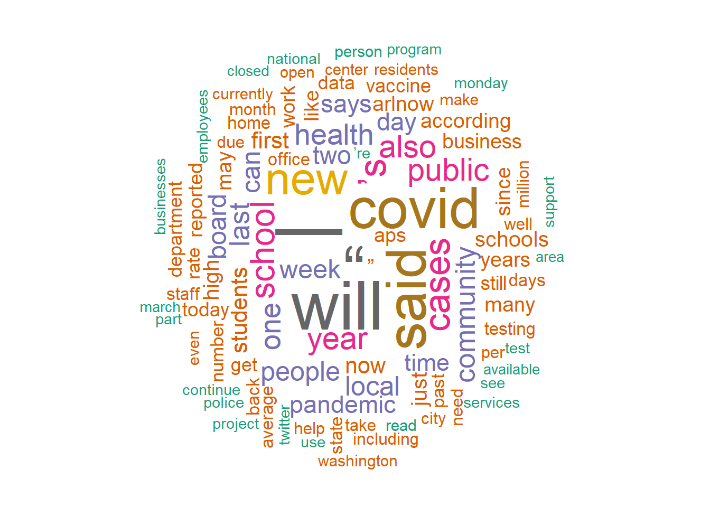

Code
library(tidyverse)
library(polite)
library(rvest)
library(readr)
library(quanteda)
library(wordcloud)
library(tm)
library(SnowballC)
library(RColorBrewer)
knitr::opts_chunk$set(echo = TRUE, warning = FALSE, message = FALSE)Miranda Manka
October 1, 2022
Between the first blog post and this second blog post, I decided to change my topic. I am now looking at article posts on a site called arlnow (local news/articles for Arlington, VA). I want to look at posts about covid and compare both the language used (for example the change in word usage over time from coronavirus to covid) and the content of the posts that mention covid (for example are schools mentioned more, or restaurants, etc). I also want to look at the sentiment of the posts and what is changing over time. This may still change as the methods I learn in the class progress if I want to change direction or to something more specific.
For this I webscraped the arlnow site. I got articles that date from now back to mid-March 2020 by searching on the site for “covid”. I may do this for more terms in the future depending on my analysis needs/research question progression. This gave me 550 articles and I have the title, author, time/date, and text from the posts. Figuring out this code chunk took way longer than I expected but I haven’t done much with web scraping before so figuring out how to get exactly what I wanted from the site using the css selectors was difficult and time consuming but I got it.
bow("https://www.arlnow.com/")
df = data.frame(matrix(ncol = 4, nrow = 0))
for (i in 1:50){
Sys.sleep(2)
full_url = paste("https://www.arlnow.com/page/", i, "/?s=covid", sep = "")
tryCatch({website = read_html(full_url)}, error = function(e) {break})
value1 = html_elements(website, ".c-card--post")
for (posty in value1) {
post_and_header = html_elements(posty, "article")
header = html_elements(post_and_header, "header")
post_content = html_elements(post_and_header, ".c-post__content")
title_and_author = html_elements(header, "a")
header_text = html_text(title_and_author[1])
author_text = html_text(title_and_author[2])
time_tag = html_attr(html_elements(header, "time"), "datetime")
raw_text = html_text(html_elements(post_content, "p"))
raw_text = toString(raw_text)
df[nrow(df)+1, ] = c(header_text, author_text, time_tag, raw_text)
}
}
colnames(df) = c("header_text", "author_text", "time_tag", "raw_text")
write.csv(df, "./arlnow_covid_posts.csv", row.names = TRUE)Here I am just reading in the data from the csv I created and dropping the extra column that was created in the write.csv and renaming a column.
I wasn’t sure exactly what to do yet so I started with making a corpus and looking at the summary and tokens. Then I looked a little into to appearance of some words like “school”, “vaccine”, and “restaurant” because I thought those might be interesting to examine later.
Corpus consisting of 550 documents and 3 docvars.
text1 :
"A few hundred parents say Arlington Public Schools should pr..."
text2 :
"(Updated at 9:50 a.m.) Covid cases have held relatively stea..."
text3 :
"Arlington has resumed its Covid vaccination effort after rec..."
text4 :
"Arlington County and the rest of the immediate D.C. area is ..."
text5 :
"Arlington Public Schools will follow mostly the same Covid p..."
text6 :
"The rate of reported Covid cases continues to slowly fall in..."
[ reached max_ndoc ... 544 more documents ]Corpus consisting of 550 documents, showing 550 documents:
Text Types Tokens Sentences
text1 276 581 10
text2 244 497 14
text3 237 538 12
text4 227 431 11
text5 335 753 16
text6 287 633 12
text7 228 437 9
text8 330 662 13
text9 144 226 5
text10 144 249 5
text11 224 435 8
text12 112 185 3
text13 209 433 13
text14 278 569 13
text15 264 523 12
text16 352 778 16
text17 298 611 13
text18 310 692 12
text19 328 659 11
text20 214 413 10
text21 204 378 5
text22 309 603 8
text23 301 630 19
text24 316 706 15
text25 327 749 14
text26 215 473 11
text27 349 768 12
text28 287 626 12
text29 248 447 9
text30 190 333 7
text31 276 580 16
text32 236 494 8
text33 231 456 5
text34 162 310 6
text35 358 762 11
text36 206 410 9
text37 123 223 3
text38 242 508 9
text39 301 619 11
text40 181 308 7
text41 216 400 6
text42 379 857 22
text43 220 427 7
text44 169 302 4
text45 260 543 12
text46 305 670 17
text47 383 857 21
text48 253 516 8
text49 128 213 3
text50 212 427 7
text51 461 1079 20
text52 470 1076 22
text53 273 520 9
text54 256 518 10
text55 228 463 10
text56 111 181 3
text57 252 485 15
text58 266 520 5
text59 311 694 18
text60 132 232 3
text61 310 614 10
text62 178 333 6
text63 145 300 5
text64 131 224 5
text65 283 610 19
text66 167 290 4
text67 173 301 4
text68 175 298 5
text69 355 807 18
text70 194 332 5
text71 215 393 8
text72 131 285 4
text73 196 351 6
text74 320 677 11
text75 188 342 6
text76 351 705 9
text77 309 591 15
text78 195 340 5
text79 225 453 11
text80 217 421 8
text81 137 269 6
text82 300 548 15
text83 148 290 7
text84 233 461 13
text85 321 704 7
text86 310 610 12
text87 228 439 5
text88 204 360 7
text89 176 329 6
text90 194 343 7
text91 322 679 21
text92 205 402 8
text93 253 519 13
text94 145 280 4
text95 306 629 14
text96 349 786 13
text97 237 417 9
text98 334 692 12
text99 206 472 6
text100 269 555 13
text101 400 873 28
text102 135 210 6
text103 153 253 3
text104 347 752 13
text105 290 545 14
text106 325 683 23
text107 231 455 5
text108 297 638 8
text109 320 724 18
text110 200 401 5
text111 242 492 9
text112 216 438 7
text113 186 370 7
text114 272 554 15
text115 399 766 22
text116 267 476 12
text117 261 512 14
text118 334 651 16
text119 156 292 7
text120 292 511 17
text121 157 326 4
text122 396 891 13
text123 155 291 4
text124 500 992 27
text125 432 852 26
text126 165 282 7
text127 361 800 15
text128 380 790 30
text129 163 272 9
text130 116 189 3
text131 416 1075 24
text132 205 401 7
text133 264 533 12
text134 273 684 17
text135 249 448 9
text136 248 587 14
text137 287 660 10
text138 250 495 9
text139 389 875 22
text140 322 571 18
text141 241 540 14
text142 175 351 6
text143 441 950 23
text144 236 389 10
text145 109 195 3
text146 333 655 15
text147 180 344 9
text148 246 519 11
text149 155 256 7
text150 205 378 10
text151 191 316 3
text152 294 583 11
text153 329 613 14
text154 296 585 14
text155 382 852 25
text156 390 757 16
text157 84 153 5
text158 103 176 4
text159 372 792 23
text160 198 398 11
text161 275 596 11
text162 351 743 10
text163 170 293 7
text164 124 199 3
text165 145 274 5
text166 78 111 3
text167 231 411 12
text168 288 500 20
text169 185 332 6
text170 184 401 9
text171 375 674 27
text172 350 784 17
text173 365 811 14
text174 298 701 13
text175 306 532 19
text176 278 658 14
text177 350 788 18
text178 268 455 21
text179 192 348 14
text180 194 346 7
text181 230 437 10
text182 218 388 11
text183 281 580 10
text184 195 337 5
text185 272 630 10
text186 273 638 8
text187 240 519 11
text188 292 587 22
text189 219 385 16
text190 407 803 35
text191 321 812 12
text192 327 713 15
text193 353 764 19
text194 293 703 12
text195 169 284 8
text196 313 583 10
text197 322 577 19
text198 271 537 10
text199 214 424 7
text200 328 702 8
text201 118 179 2
text202 311 736 12
text203 319 699 12
text204 177 327 5
text205 312 672 19
text206 324 598 24
text207 218 424 10
text208 217 400 5
text209 210 415 8
text210 364 760 14
text211 316 649 17
text212 231 397 18
text213 399 801 24
text214 199 352 8
text215 370 891 16
text216 296 535 10
text217 231 379 11
text218 305 537 19
text219 62 87 2
text220 228 483 9
text221 227 417 9
text222 176 311 10
text223 69 89 2
text224 339 790 24
text225 257 636 12
text226 299 507 18
text227 180 287 5
text228 342 569 18
text229 284 605 7
text230 401 738 23
text231 309 675 16
text232 330 748 12
text233 313 597 21
text234 73 102 7
text235 83 120 4
text236 258 596 10
text237 318 707 13
text238 255 602 16
text239 434 926 10
text240 294 621 15
text241 165 322 4
text242 292 611 5
text243 280 561 13
text244 270 591 18
text245 71 101 2
text246 200 397 10
text247 188 359 10
text248 161 287 10
text249 62 83 2
text250 195 344 7
text251 298 541 23
text252 325 669 13
text253 217 388 7
text254 305 643 6
text255 331 584 25
text256 295 579 9
text257 300 623 13
text258 202 369 12
text259 329 803 10
text260 177 337 9
text261 162 268 9
text262 210 401 9
text263 345 627 21
text264 204 372 5
text265 277 532 9
text266 103 159 3
text267 241 464 8
text268 344 603 27
text269 212 389 11
text270 317 580 25
text271 183 311 7
text272 235 425 15
text273 178 284 12
text274 274 526 9
text275 330 539 23
text276 317 632 9
text277 320 677 16
text278 257 513 13
text279 124 202 3
text280 293 639 18
text281 331 629 16
text282 325 687 16
text283 149 249 8
text284 286 613 14
text285 143 214 12
text286 341 805 11
text287 317 706 13
text288 134 227 5
text289 297 473 19
text290 153 279 5
text291 336 727 17
text292 222 490 15
text293 321 672 16
text294 344 687 7
text295 182 363 10
text296 307 619 9
text297 245 493 8
text298 77 98 3
text299 293 578 11
text300 176 368 8
text301 205 375 9
text302 280 545 7
text303 266 452 16
text304 202 347 8
text305 318 600 27
text306 271 517 9
text307 224 466 6
text308 328 731 21
text309 304 608 17
text310 315 617 12
text311 299 619 9
text312 87 127 2
text313 256 537 13
text314 71 97 3
text315 266 535 18
text316 328 619 27
text317 323 724 14
text318 321 671 11
text319 343 718 17
text320 177 294 7
text321 292 617 11
text322 74 107 4
text323 316 699 14
text324 269 534 10
text325 260 454 16
text326 318 687 15
text327 358 724 17
text328 297 487 19
text329 269 539 6
text330 157 286 7
text331 286 585 5
text332 286 624 10
text333 326 548 15
text334 253 492 17
text335 377 959 15
text336 251 515 15
text337 81 119 3
text338 296 664 13
text339 321 735 10
text340 197 313 12
text341 470 938 18
text342 231 457 2
text343 288 541 12
text344 312 549 27
text345 239 493 10
text346 90 132 4
text347 412 989 28
text348 277 740 14
text349 83 121 2
text350 295 503 21
text351 193 337 7
text352 261 453 17
text353 149 261 5
text354 202 383 4
text355 257 432 15
text356 376 872 16
text357 89 121 3
text358 160 254 6
text359 202 346 11
text360 183 319 12
text361 87 115 3
text362 261 554 7
text363 366 822 9
text364 345 675 11
text365 346 722 25
text366 331 573 25
text367 249 456 9
text368 350 795 11
text369 324 641 28
text370 208 387 10
text371 278 598 11
text372 326 658 16
text373 325 625 13
text374 240 428 17
text375 355 802 19
text376 328 639 14
text377 353 807 14
text378 210 330 7
text379 322 722 13
text380 302 542 20
text381 143 250 3
text382 199 318 14
text383 271 481 14
text384 141 227 7
text385 90 137 4
text386 167 328 6
text387 340 686 22
text388 169 481 6
text389 314 677 11
text390 212 351 6
text391 274 458 21
text392 329 591 24
text393 253 418 17
text394 105 151 3
text395 306 622 10
text396 280 569 12
text397 288 610 18
text398 246 497 6
text399 333 711 12
text400 268 524 12
text401 326 586 17
text402 71 85 3
text403 299 602 27
text404 217 454 14
text405 211 458 5
text406 335 785 16
text407 310 576 25
text408 376 799 13
text409 283 618 8
text410 169 300 13
text411 137 230 5
text412 318 631 22
text413 324 625 10
text414 192 358 8
text415 164 254 6
text416 139 302 6
text417 212 464 10
text418 303 731 12
text419 296 557 10
text420 334 564 24
text421 308 633 11
text422 230 444 9
text423 288 609 6
text424 155 284 5
text425 471 1094 24
text426 379 816 11
text427 190 344 8
text428 329 721 14
text429 366 893 22
text430 246 505 11
text431 348 720 24
text432 398 730 23
text433 225 433 13
text434 165 286 3
text435 126 229 5
text436 188 402 11
text437 237 407 7
text438 366 784 13
text439 287 645 14
text440 223 369 8
text441 232 426 7
text442 274 478 20
text443 402 919 17
text444 330 733 17
text445 293 681 14
text446 359 653 18
text447 261 539 10
text448 225 431 7
text449 371 659 27
text450 224 406 7
text451 388 699 22
text452 131 227 11
text453 298 639 10
text454 324 619 17
text455 354 600 22
text456 228 372 15
text457 233 483 10
text458 316 680 17
text459 280 615 10
text460 124 188 4
text461 233 379 18
text462 175 341 6
text463 178 329 9
text464 338 737 12
text465 323 609 25
text466 168 297 10
text467 212 351 2
text468 253 560 12
text469 189 294 5
text470 194 330 10
text471 230 444 5
text472 119 195 4
text473 303 530 18
text474 295 624 8
text475 254 483 19
text476 312 629 17
text477 172 326 8
text478 275 501 17
text479 295 576 15
text480 182 313 7
text481 220 421 6
text482 252 402 16
text483 26 31 3
text484 187 334 8
text485 156 251 6
text486 290 640 15
text487 426 944 22
text488 330 720 14
text489 300 526 15
text490 152 284 10
text491 313 661 12
text492 223 362 12
text493 22 27 3
text494 263 450 17
text495 25 31 4
text496 68 100 2
text497 279 498 17
text498 27 32 3
text499 225 357 8
text500 23 28 3
text501 324 774 8
text502 330 563 17
text503 23 28 3
text504 23 28 3
text505 290 618 7
text506 364 858 24
text507 121 192 2
text508 23 28 3
text509 285 616 15
text510 23 28 3
text511 211 415 9
text512 21 26 3
text513 166 306 4
text514 296 499 14
text515 24 29 3
text516 388 822 14
text517 223 383 13
text518 24 29 3
text519 258 468 14
text520 136 233 5
text521 23 28 3
text522 316 683 21
text523 281 439 16
text524 299 579 9
text525 111 165 2
text526 355 782 20
text527 160 252 5
text528 229 437 7
text529 302 556 20
text530 24 29 3
text531 403 999 13
text532 342 647 21
text533 144 224 4
text534 319 752 15
text535 177 273 5
text536 23 28 3
text537 318 576 19
text538 22 27 3
text539 278 550 18
text540 311 537 22
text541 412 975 21
text542 267 572 14
text543 288 625 10
text544 319 567 15
text545 478 1124 23
text546 301 551 16
text547 293 611 16
text548 224 385 13
text549 310 565 14
text550 288 589 15
header_text
\nSome parents call for end to Covid protocols, less screen time in Arlington schools
\nCovid cases near seasonal lows in Arlington, but flu season looms
\nArlington County now offering updated Covid booster shots
\nJUST IN: Arlington and entire immediate D.C. area now at CDC’s “low” Covid level
\nAPS to mostly follow same Covid protocols as last year, with some updates
\nMonkeypox vaccination effort continues as Covid emergency declaration ends
\nCovid cases dropping in Arlington, though county remains in CDC ‘medium’ level
\nArlington dropping Covid emergency declaration as cases hold steady
\nArlington’s Covid test positivity rate spikes while cases drop
\nMorning Poll: Have gas prices or Covid affected your Fourth of July plans?
\nCovid cases down 40% as Arlington starts offering vax for young children
\nNEW: Covid cases, positivity rate and hospitalizations falling in Arlington
\nCovid cases down but positivity rate up in Arlington
\nArlington’s Covid data hints at possibility of a peak in the latest wave
\nArlington’s Covid case average near 200 per day mark
\nCounty Board member Libby Garvey is stuck in Germany with Covid
\nArlington’s daily Covid case rate rises above 150 as test positivity hits seasonal high
\nCovid cases continue to rise in Arlington and in local schools
\nCovid continues to rise in Arlington, with nearly 200 new cases reported today
\nCovid cases continue slow rise in Arlington following spring break
\nArlington is now reporting more than 100 Covid cases per day
\nCounty: Spring break, delayed reporting may be behind Arlington’s elevated Covid level
\nUPDATED: Arlington reaches ‘medium’ CDC Covid level
\nArlington offering second Covid booster shots for residents 50+
\nWastewater may help Arlington predict the next local Covid surge
\nLegal Insider: Virginia drops Covid workplace rules
\nArlington County to promote transit use in post-Covid marketing push
\nAuthorities encouraging locals to get Covid booster shots, as cases rise slightly
\nMorning Poll: Are you still wearing masks during ‘low’ Covid levels?
\nCovid cases and test positivity rate continue to fall in Arlington
\nJUST IN: Daily Covid cases drop below 100 for first time in nearly two months
\nCovid cases continue to fall, but rate of decline slows
\nScammers may have posed as Arlington businesses in Covid grant applications
\nNEW: Covid case counts decline to pre-Christmas levels in Arlington
\nCounty honors 78 ‘Covid heroes’ for service to the community
\nCovid cases still falling in Arlington, down 60% from peak
\nNEW: Covid cases falling in Arlington, following regional trends
\nCovid-related staffing shortages force Arlington libraries to shut down two branches this week
\nAPS brings athletics back early, changes Covid guidelines during surge in cases
\nNEW: Hospitalizations on the rise as Arlington records yet another new Covid record
\nFree Covid testing kiosk opens at Central Library near Quincy Park
\nCovid cases hit new record in Arlington, but test positivity rate starts to trend down
\nMore at-home Covid tests could be available in Arlington as soon as tomorrow
\nNew Covid testing booth coming to residential North Arlington
\nMaison Cheryl in Clarendon looks to future, despite Covid concerns and wait for permits
\nOne in four people getting tested in Arlington are positive for Covid
\nNEW: Another Covid case record amid huge lines for tests
\nCounty libraries to offer more free at-home COVID-19 rapid tests this week
\nRise in new Covid cases in Arlington takes a Christmas break
\nJUST IN: New Covid case records for Arlington, but serious illness remains at pre-wave levels
\nBREAKING: Covid cases rocket upward, shattering record, with hospitalizations low but growing
\nBREAKING: Covid case count in Arlington spikes amid Omicron worries
\nArlington’s post-Thanksgiving rise in Covid cases plateaus, for now
\nCounty libraries run out of free at-home COVID-19 rapid tests within hours
\nCovid cases still rising in Arlington as county records new ten-month high
\nJUST IN: Rate of new Covid cases in Arlington reaches highest point since February
\nStatutes of Liberty: New Covid requirements for the holidays
\nArlington sees slight bump in Covid cases as Thanksgiving nears
\nCounty to begin offering Covid vax shots for 5-11 year-olds this weekend
\nArlington offering more booster shots as local Covid cases tick down
\nThrive Hair Salon in Ballston hosting Covid vax clinic on Saturday
\nSeries of Covid Cases Reported at Wakefield High School
\nRosslyn’s Outdoor Office Goes from Covid-Era Pop-Up to Permanent Feature
\nArlington Sees Sustained Drop in Covid Cases
\nStatutes of Liberty: COVID-19 Vaccine Mandates Soon Required for All Green Card Applicants
\nArlington Covid Cases Continue Upward Trajectory
\nCovid Cases Reach New Seasonal High in Arlington
\nArlington Opens Nominations for ‘Community COVID-19 Hero Awards’
\nChildhood Friends Grow Lawn Care Business After COVID-19 Canceled Their Summer Internships
\nArlington Sees Slight Dip in Covid Cases Heading into Labor Day Weekend
\nLittle Change in Arlington’s Rate of Covid Cases Over Past Two Weeks
\n9/11 Pentagon Memorial May Not Be Open to Public on 9/11 Due to COVID Protocols
\nArlington’s Rise in Covid Cases May Be Slowing
\nArlington Drafthouse Has a Full Slate of Fall Shows, But Concerned by Rising Covid Cases
\nCovid Cases Continue to Tick Up in Arlington
\nColds and Other Viruses Spike in Arlington As COVID-19 Cases Stay Low
\nWho Got Reported To The County COVID-19 Tip Line?
\nArlington’s Covid Rate Remains Low Despite Gradual Return to Normality
\nNew Covid Cases Remain Low in Arlington
\nLegal Insider: EEOC Indicates Employers Could Require Employee Covid Vaccinations
\nReported Covid Cases in Arlington Remain Low
\nProgressive Voice: COVID-19 Shows Arlington Should Do More for Working Moms
\nOnly About Two Covid Cases Are Being Reported Per Day in Arlington
\nGovernor Lifts Mask Mandate for the Fully Vaccinated, Sets End for Covid Restrictions
\nMore People Parking in Arlington as COVID-19 Cases Decline
\nEast Fall Church Metro Station’s Nearly Empty Bike Facility Seen as COVID-19 Symptom
\nTwo COVID-19 Outbreaks Are Being Investigated In Arlington Schools
\nMorning Poll: Have You Had Covid? Are You a Long-Hauler?
\nLocal Church Thanks Grocery Store Employees For COVID-Era Service
\nZitkala-Ša Park Slated to Open By July, Delayed by COVID, Weather
\nHealth Matters: I Had COVID-19, Should I Still Get the Vaccine?
\nArts Focus: Drive-by Video Installation Illuminates Teens’ Post-COVID Hopes and Dreams
\nHealth Matters: What to Expect After Getting the COVID-19 Vaccine
\nArlington’s COVID-19 Time Capsule Project Needs Donations
\nCOVID-19 Cases, Test Positivity Rate Falling in Arlington
\n‘Transition’ Budget Proposal Has COVID-19 Contingency Fund, Higher Taxes for Homeowners
\nAsk Eli: COVID-19 Impact on Arlington’s Rental Market
\nAPS Superintendent Releases New COVID-19 Data for In-Person Instruction
\nCounty Asks for Buildings to Be Lit, Church Bells to Ring In Memory of Lives Lost to COVID
\nCounty Launching Free COVID-19 Testing at Kiosks
\nProgressive Voice: Recovering from the COVID-19 Learning Slump
\nMetro 29 Diner Closed Due to ‘COVID-19 Concerns’
\nArlington Has Averaged One COVID Death Per Day Over the Past Week
\nFreddie’s Beach Bar Gets Support from Barstool Sports COVID-19 Relief Fund
\nArlington Has Received a Shipment of the COVID-19 Vaccine
\nHealth Matters: Should I Get the COVID Vaccine if I Have Allergies?
\nArlington Prepares for First Doses of COVID-19 Vaccine
\nUpgraded Banneker Park Set to Reopen Before Christmas, Delayed by COVID-19
\nLegal Insider: Could Employees be Mandated to Get COVID Vaccines by Their Employer?
\nCounty Details Commonalities Among Local COVID Cases
\nTwo Schools, One Gathering: COVID Cases Also Take St. Thomas More Cathedral School Online
\nBishop O’Connell High School Goes Fully Virtual After Two COVID-19 Cases Reported
\nForty New COVID Cases Reported in Arlington Today
\nAs Flu Season Approaches, New COVID-19 Cases Continue to Fluctuate
\nHealth Matters: Will You Trust a COVID-19 Vaccine?
\nShould I Go To The Dentist During COVID-19?
\nStatutes of Liberty: COVID-19 — Our Experience at the Local USCIS Field Office During the Pandemic
\nBayou Bakery Reopens After COVID-Conscious Remodel
\nLegal Insider: Virginia Requires Employers to Adopt COVID-Related Safety Requirements
\nHealth Matters: Is Science Losing in COVID Era?
\nVirginia Hospital Center Unveils New Unit Built with COVID-19 in Mind
\nJUST IN: Arlington Records New Summer Peak in COVID-19 Cases
\nArts Focus: Arts Forward Fund Created to Buoy Arts Organizations Impacted by COVID-19
\nProgressive Voice: Older Adults Need Social Ties – But COVID-19 Keeps Many Apart
\nHealth Matters: Depression and Anxiety Rise During COVID-19
\nSun Gazette Publishes Letter Comparing COVID Contact Tracers to Nazis
\nArlington GOP Chair Kicked Out of Local COVID Facebook Group
\nHealth Matters: Is It Safe to Have Elective Surgery During COVID-19?
\nArts Focus: Synetic Theater’s Innovative The Decameron is a Classical Response to COVID-19
\nColumbia Pike Starbucks Closed Due to COVID-19 Case
\nOverlee Pool Closes Amid Reports of COVID-19 Outbreak
\nThe Schar School at George Mason University: How Will COVID-19 Inspire Future Threats?
\nLegal Insider: Businesses Face COVID-19 Lawsuits from Employees and Customers
\nAfter Surviving COVID-19, Arlington Restaurateur Hopes to Bring New Meaning to His Life
\nPeter’s Take: Arlington County and APS Must Collaborate Much More Because of COVID-19
\nDarna Lounge Owner Pushes Through Slow Recovery from COVID-19
\nNursing Homes Were a COVID-19 Hot Spot in Arlington
\nAsk Eli: COVID-19 Market Impact Update
\nCounty Board Candidates Discuss Equity, Budget Priorities and COVID-19 Recovery
\nProgressive Voice: Keeping the Faithful During COVID-19
\nLegal Insider: Employers and Employees Prepare for COVID-19 Lawsuits
\nArlington Church Plans Food Drive for Alexandria Neighborhood Hard-Hit By COVID-19
\nCounty to Begin Regular COVID-19 Testing of Public Safety Personnel
\nRethink Energy: The COVID-19 Impact on Energy and Emissions
\nArts Focus: Resources for Artists and Performers Impacted by the COVID-19 Pandemic
\nBizTalk: Arlington Companies Join Fight Against COVID-19
\nWalk-In COVID-19 Clinic to Open on Columbia Pike Tomorrow
\nLocal Oil Change Startup Looking For Mechanics to Help Bounce Back from COVID-19
\nPupatella in Bluemont Closes Temporarily Due to COVID Case
\nThe Hurtt Locker: Campaigns and Elections in the Age of COVID-19
\nHigh Quality Medical Interpreting Is Crucial During Covid-19 Pandemic
\nBiz Talk: Arlington Tracks COVID-19 Impacts on County Businesses
\nSt. Thomas More Cathedral School Pivots Quickly to eLearning In Face of COVID-19
\nThe Hurtt Locker: Institutions Rise to Address COVID-19 Challenges
\nStatutes of Liberty: COVID-19’s Impact on U.S. Immigration
\nCommunity Matters: How Will History Remember Our Response to COVID-19?
\nHelp Arlington Neighbors Weather the COVID-19 Storm
\nAnother Rise in Local COVID-19 Cases, Amid Jump in Va. Deaths
\nProgressive Voice: Local Government Steady and Resolved During Covid-19 Challenges
\nLegal Insider: Filing Unemployment Claims in Virginia Related to COVID-19
\nNeighborhood Spotlight: How to Give Back During COVID-19 — 3 Ways to Help
\nAs COVID-19 Cases Continue to Rise, Aspects of Local Response and Planning Remain Opaque
\nThe Hurtt Locker: Don’t Let COVID-19 Bust the County Budget
\nGreen Pig Bistro Closes for Now, Due to Potential COVID-19 Case
\nArts Focus: Arts Activities Halt to Stem Spread of COVID-19
\nMost-read Arlington stories of the week: Sept. 26-30
\nMaison Cheryl plans to reopen next week after closing for a “fall refresh”
\nMorning Notes
\nCondo building near Rosslyn could open this winter
\nMarine Corps Marathon moves Runners Village Gateway to Pentagon City
\nMorning Notes
\nACPD creates crash reports when cars are involved. Why not for bike-on-bike crashes?
\nAPS to apply lessons from virtual learning program audit to planning for new online program
\nCounty pauses shots while waiting for updated boosters from the state
\nMorning Notes
\nArlington expands monkeypox vax eligibility
\nNew CVS has a large blank wall facing Wilson Blvd, upsetting some locals
\nMorning Notes
\nMorning Notes
\nRosa Mexicano in Pentagon City not opening next month but still planning on serving by end of the year
\nStatutes of Liberty: USCIS and the Department of State rushing to use employment-based visas
\nARLnow photographer Jay Westcott’s favorite photos from the past two years
\nNew membership program launches at several Arlington bars, providing beers and pizza slices
\nAsk Eli: Housing slowdown more extreme in outer suburbs
\nCounty launching “Askable Adult” initiative to help middle and high school students
\nMilitary communications app to roll out new feature to help increase retainment
\nNEW: Arlington County is setting up public monkeypox vaccine clinics as cases rise
\nRestaurants and other local businesses currently listed for sale in Arlington
\nMorning Notes
\nThe Nose That Knows: Wine 101
\nCounty returns to pre-pandemic process for outdoor tents, leaving some restaurants frustrated
\nWestover’s Stray Cat Bar & Grill has finally reopened after closing at the start of the pandemic
\nArlington ‘newbie’ discovers life’s simple pleasures through popular Facebook group
\nAsk Eli: 2022 Arlington mid-year single-family home review
\nUPDATED: Gun store coming to former cafe space in Clarendon
\n‘Red Hot’ local startups spotlighted during event in Rosslyn
\nMorning Notes
\nAsk Eli: 2022 Arlington mid-year condo review
\nLong-time Greek restaurant Athena Pallas is planning to close in Crystal City
\nAs vacancy rates rise, Arlington looks to breweries, small warehouses and food delivery as solutions
\nPoll: How does your current level of fitness compare to before the pandemic?
\nLegal Insider: Alcohol and security clearances sometimes don’t mix
\nArlington office vacancy rate continues to rise amid work-from-home trends
\nJuvenile arrests in Arlington down significantly during past school year
\nArts Focus: We Paused! Unbound — a community’s pandemic journey through art
\nMorning Notes
\nArlington County is largely shutting down to celebrate America’s birthday
\nMore than 400 young children vaccinated by county in first week of vax offering
\nLocal Oyster in Ballston appears to have closed, after another seafood spot ran aground
\nHere’s who will be on the ballot for the November general election in Arlington
\nUltramarathoner Michael Wardian is almost back in Arlington, after journey across America
\nMorning Notes
\nRep. Don Beyer: Why You Should Vote for Me
\nEvents, county closures planned for Juneteenth
\nJUST IN: Smoke shop employee found not guilty in shooting case
\nArlington emergency personnel recognized for service at Public Safety Awards
\nMorning Notes
\nMorning Notes
\nMost-read Arlington stories of the week: May 30-June 3
\nVirginia Black History Month Gala coming to Crystal City, a few months delayed
\nThe annual Green Community Tour returns this Sunday
\nRosa Mexicano is coming to Pentagon City
\nThis month’s cartoon: Cars stolen after keys left in vehicles
\n UPDATE: First case of monkeypox confirmed in N. Va.
\nA few days left to pitch a new name for the Ballston Beaver Pond
\nMorning Notes
\nMorning Poll: Are you heading out of town for Memorial Day?
\nMorning Notes
\nCounty Manager proposes $3.9 billion, 10-year infrastructure plan
\nMorning Notes
\nWhat can we do to help Arlingtonians experiencing homelessness?
\nCounty Board to consider bus storage as ART facility construction nears
\nMorning Notes
\nThese ten businesses are currently listed for sale in Arlington
\nMost-read Arlington stories of the week: May 2-6
\nNext week’s Police Week events will again bring motorcades to Arlington
\nPickleball pop peeves particular people, prompting park pilot program
\nArlington’s park system is now ranked No. 3 in the U.S.
\nCounty’s public engagement efforts continue to evolve as pandemic wanes
\nNEW: Arlington Economic Development’s No. 1 and No. 2 leaders are departing
\nDay of discounts planned this weekend as part of National Landing small biz grant program
\nNew $1.5 billion county budget holds tax rate steady, creates climate office
\nArlington’s David Guas spent two weeks in Poland cooking for Ukrainian refugees
\nMeet two of Arlington’s first female Eagle Scouts
\nThis month’s cartoon: Local developer stranded on a deserted island
\nAfghan eatery Grill Kabob looking to open in Ballston this summer
\nAsk Eli: Q1 condo market review
\nMorning Poll: Mask mandate dropped on Metro, flights
\nMost-read Arlington stories of the week: April 11-15
\nThe Arlington Festival of Arts is returning to Clarendon this month
\nMorning Notes
\nSeven restaurants with Arlington ties are up for RAMMY awards this year
\nMorning Poll: Looking forward to summer vacations?
\nAmid transit-oriented growth in Arlington, a detached garage endures across from the EFC Metro
\nMorning Notes
\nMorning Poll: Should Arlington libraries de-prioritize print?
\nArlington teachers union under interim leadership following internal turmoil
\nNew 2022 solar and electric vehicle charger co-op
\nNature center supporters call for additional operating hours
\nSmall Business Focus: Lyon Park Barber Shop
\nCornel West to speak at GMU’s Arlington campus in two weeks
\nRSVP Catering welcomes spring with home delivered Easter, Passover menus
\nMorning Notes
\nGroup gaming experience Electric Gamebox opens in Ballston Quarter
\nInternational startup accelerator to open its doors in Crystal City next week
\nLocal officials cut ribbon on garden featuring 33,000 daffodils
\nEXCLUSIVE: Fights involving kids are on the rise, Arlington Public Schools says
\nMorning Notes
\nAsk Eli: Real estate within walking distance of Metro
\nMorning Notes
\nTRAFFIC ALERT: Routes into D.C. jammed after trucker convoy prompts closures
\nMorning Notes
\nMorning Notes
\nArlington Chorale to finally perform a show that was canceled in March 2020
\nMorning Notes
\nTwo women are on a quest to map every racially restrictive property deed in Arlington
\nJUST IN: Convoy honking horns, jamming up NB I-395 near Pentagon City
\nArlington vaccine worker will tour the country as a Broadway star
\nArlington’s test positivity rate nearing pre-Omicron levels
\nGunston teacher announces bid for Arlington School Board
\nWhat Arlington, the ‘Hoboken of D.C.,’ can learn from the NJ city about pedestrian safety
\nThe new ‘property tech’ industry has this Arlington startup at the forefront
\nMost-read Arlington stories of the week: Feb. 28-March 4
\nCounty solicits feedback on bus, pedestrian upgrades to the East Falls Church Metro station
\nMorning Notes
\nBREAKING: Masks optional in Arlington County facilities starting Thursday
\nEmployees of Union Kitchen in Ballston are looking to unionize
\nArts Focus: Arts summer camps help Arlington’s youth tap into their own creativity
\nMorning Notes
\nNEW: No employees fired as a result of vax mandate, county says
\nCatching a Friday fish fry near Arlington may require a penitential drive in traffic
\nStatutes of Liberty: Dear Russian diplomats and government officials in Washington
\nBREAKING: Masks optional at Arlington Public Schools as of March 1
\nArlington builds call system to divert people in mental health crises from jail
\nHere’s how local pubs will be celebrating this year’s highly anticipated St. Patrick’s Day
\nAPS proposes new budget with sunnier outlook than years past
\n‘Arlington Reads’ library event series returns in person next month
\nMost-read Arlington stories of the week: Feb. 14-18
\nAPS continues requiring masks in schools while School Board ‘pauses’ virtual option
\nMost county operations to close on Monday for George Washington Day
\nNEW: Arlington’s test positivity rate drops below 5%
\nAPS must make masks optional by March 1, will present new policy today
\nMorning Notes
\nOmicron is on the decline — Book your living wage cleaning!
\nMorning Notes
\nCybersecurity company Shift5 nabs $50M to develop products, hire staff
\nCounty Manager’s budget proposal focuses on employee compensation
\nNEW: Bill making masks optional for students passes Va. Senate
\nFrom the Pike to Dubai, Bob & Edith’s Diner wants to serve the world pancakes
\nPhone2Action rebrands as Capitol Canary after two major acquisitions
\nSen. Warner focuses on access to assistance during events with Arlington business owners
\nThis month’s cartoon: Pentagon chicken vs. Washington Commanders
\nCourt grants school boards’ request, mask mandates can temporarily continue
\nMost-read Arlington stories of the week: Jan. 31-Feb. 4
\nStatutes of Liberty: Immigration court scheduling has gone haywire
\nMorning Notes
\nArlington lawmaker’s bills could ease stretched thin health care workers, teachers
\nAs the ranks of freelancers swell, the taxman cometh for those in Arlington
\n‘Intense’ winter weather leaves county crews flooded with water main breaks
\nAsk Eli: Arlington rental market update — Single-family, townhouse and apartment
\nLegal Insider: Virginia’s new teacher tip line — Bad for Virginia, worse for teachers
\nMost-read Arlington stories of the week: Jan. 24-28
\nNew District Brewing is purchasing canning equipment with help from the community
\nIn Clarendon, Silver Diner project crystallizes as sector plan revisions enter home stretch
\nMorning Notes
\nGrace Community Church to fill huge space in Ballston Quarter mall
\nCounty Board hopefuls emerge for 2022 election
\nMorning Notes
\nArlington sees bump in vaccinated employees as mandate deadline nears
\nSmall Business Focus: AWE Women in Business Summit
\nCounty Board signals support for Arlington schools in mask clash with state
\nAs apartments near County HQ go up, what’s next for Courthouse?
\nMorning Notes
\nCoworking is booming and here’s why
\nArlington School Board sues to challenge Youngkin’s mask order
\nRethink Energy: Our environment, our future
\nMost-read Arlington stories of the week: Jan. 17-21
\nCatholic Diocese of Arlington tells schools to follow Youngkin’s mask exemption order
\nCounty seeks more funding for Ballston Metro western entrance project
\nMorning Notes
\nArts Focus: The arts in Arlington — 2021 in review
\n$3.25 million grant will go toward tourism recovery initiatives in Arlington
\nMorning Poll: Should APS continue to require masks in schools?
\nMorning Notes
\nJUST IN: APS says masks still required for students, despite Youngkin’s order
\nMost-read Arlington stories of the week: Jan. 10-14
\nThe founder of Moore’s Barbershop is remembered for the small things that made a big difference
\nJUST IN: County reports another jump in residential real estate assessments
\nWinter Restaurant Week to feature 18 Arlington restaurants
\nMorning Notes
\nClosures planned as county and country honor Martin Luther King Jr.
\nMorning Notes
\nLocal E60 Fitness plans to expand with new ownership
\nBiz Talk: Venture activity thrives for Arlington startups
\nMorning Notes
\n“Pajama Mama” and the book bus are helping young Arlingtonians read
\nThis month’s cartoon: Car Parts
\nAsk Eli: 2021 real estate market review — single-family
\nMorning Notes
\nMorning Notes
\nMost-read Arlington stories of the week: Jan. 3-7
\nAPS may soon revert to virtual learning on snowy, icy days
\nArlington recommends doubling CDC’s quarantine period for child care
\nNEW: Arlington crews wrapping up snow removal as another winter storm looms
\nStatutes of Liberty: Immigration crystal ball 2022
\nMorning Notes
\nAnti-vaccine mandate rally participants staying in Arlington
\nArlington County Board elects Cristol as chair, Dorsey as vice chair
\nMorning Notes
\nNEW: Arlington students get yet another snow day on Wednesday
\nAsk Eli: 2021 real estate market review — condos
\nAPS decision to pause sports and activities causes confusion, backlash
\nPhotos: Arlington’s largest snowfall since 2019
\nMorning Notes
\nMore closures Tuesday amid refreeze concern, plow crew shortages
\nArlington teachers union press release gets national attention after local mom’s edits go viral
\nVenture X partners with nonprofit to uplift, educate Black girls
\nAhead of the new year, a look back at 2021 in photos
\nAPS sticks to in-person instruction amid Omicron concerns
\nMorning Notes
\nClosure of the Rosslyn route to the GW Parkway may stretch into new year
\nMorning Notes
\nTop 25 Arlington stories of 2021: #16-25
\nMorning Poll: Will 2022 be a better year?
\nMerry Christmas from ARLnow
\nPandemic, building sale foil planned Ballston time capsule opening
\nStatutes of Liberty: Immigration Year in Review 2021
\nCounty closures planned for Christmas and New Year’s
\nAlcohol-free restaurant replacing Purple Lounge finally set to open early next year
\nMorning Poll: Which are you more worried about?
\nMorning Notes
\nMorning Notes
\nMorning Notes
\nMost-read Arlington stories of the week: Dec. 13-17
\nFirst responders facing possible job loss petition county to reverse vaccine mandate
\nCounty to temporarily relocate some ART bus operations to Va. Square property
\nSmall Business Focus: Santa Claus is coming to Arlington
\n‘Immersive group gaming’ to open in Ballston Quarter in early 2022
\nAsk Eli: Single-family, townhouse, duplex trends in 2021
\nAnnual ‘Wreaths Across America’ event set for this weekend
\nMorning Notes
\nMost-read Arlington stories of the week: Dec. 6-10
\nMorning Notes
\nJust Listed in Arlington
\nArlington and VDOT to finally sign Rosslyn Gateway Park agreement, four decades belated
\nArlington one of the top localities in country for use of public transportation, census data shows
\nMorning Notes
\nWill the Metroway remain a good investment after the pandemic?
\nLong-awaited renovations to Ballston Beaver Pond begin
\nMorning Notes
\nSkip the supply chain and take Loudoun Home for the Holidays
\nThe Right Note: Want to make a difference?
\nOxiWear raises $1.25M for wearable oxygen monitoring device
\nOrange juice-espresso purveyors Kino Coffee close shop in Clarendon
\nHappy Thanksgiving, Arlington!
\nCornucopia of county closures on Thanksgiving and Black Friday
\nSmall Business Focus: Small Business Saturday
\nEd Talk: The impacts of APS enrollment declines
\nFormer Clarendon Ballroom once again turning into a winter wonderland
\nMorning Notes
\nLocal NAACP, a church, local activists honored for human rights work
\nArlington libraries to fully reopen in January, at last
\nCounty Board puts federal funds, local surplus toward pandemic-era priorities
\nXsport Fitness on Columbia Pike is closing next month
\nLocal performing arts orgs are back in-person just in time for the holidays
\nHow the pandemic is getting Arlingtonians to take their jobs outdoors
\nLocal Christmas tree sales kick off next week, despite shortage
\nArlington police turn to state troopers for help with nightlife detail
\nAt Phoenix Bikes, learning how to fix a bike is a life lesson
\nPines of Florence is coming back, opening in Cherrydale as soon as this weekend
\nHow a company that secures planes and trains nabbed $20M in Series A funding
\nMorning Notes
\nStatutes of Liberty: Another day, another class action lawsuit
\nSanta Claus is coming to Pentagon City and yes, he’s vaccinated
\nVeterans Day in Arlington: A commemoration event today, closures tomorrow
\nCounty to throw lifeline to struggling Subway on ground floor of jail
\nMorning Poll: To what degree is your life back to a pre-pandemic normal?
\nNEW: Unruly parents, coaches cause ref shortage in local youth hockey league
\nSite of fatal crash last week is part of a new street safety improvement project
\nThings to do this week: author talk, comedy and more
\nFacing a shortage, APS hikes wages for substitute teachers
\nMorning Notes
\nIn a crowded County Board race, independent candidates laud a spirited campaign on election eve
\nA new dog daycare facility is coming to Clarendon, but there may be a snag
\nGood Company Doughnuts could lose half its patio seating to a new bus shelter
\nTim Kilcullen: Why you should vote for me in the 49th District
\nPatrick Hope: Why you should vote for me in the 47th District
\nTakis Karantonis: Why you should vote for me for Arlington County Board
\nMorning Notes
\nHere’s when Halloween trick-or-treating is happening in Arlington this year
\nMorning Notes
\nJUST IN: President Biden coming to Arlington next week for another McAuliffe campaign event
\nCounty to put budget surplus, federal funding toward raises, equity initiatives
\nPeter’s Take: Will APS act urgently on reading and math or risk further downward slides?
\nMorning Notes
\nMorning Notes
\nCPRO celebrates 35 years, rebrands as the ‘Columbia Pike Partnership’
\nProgressive Voice: Decision-making and leadership — a look in the mirror
\nCounty applying for $80M grant for Ballston Metro western entrance project
\nMost-Read Arlington Stories of the Week: Oct. 11-15, 2021
\nMorning Notes
\nMajor Yellow Line Shutdown Potentially On Tap Next Year
\nSmall Business Focus: GRANT 2.0 Explained
\nCounty to Ask Public What Arts Programming Should Replace Inner Ear Studios
\nMorning Notes
\nZoup! in Ballston to Close This Week
\nArlington Agenda: Oct. 11-17
\nLocal Paralympian Starts Fitness Nonprofit for People with Disabilities
\nMorning Poll: Are You Stepping Up Your Clothing Purchases?
\nMorning Notes
\nPeter’s Take: Environmental Policy Implementation Should Be Based on the Best Data
\nInova Urgent Care Center Closes Temporarily
\nMorning Notes
\nCommonwealth’s Attorney Seeks Full-Time Hire for Conviction Review Unit
\nMorning Notes
\nProgressive Voice: One Small, Tangible Step Toward Equity
\nE-CARE Event This Weekend Offers Chance to Dispose of Hazardous Materials
\nMorning Notes
\nLocal Group Helps Women Overcome Pandemic Isolation and Make Friends
\nSalsa Dance Event Set to Take Place in Ballston Tomorrow
\nArlington to Start Providing Vax Booster Shots Today
\nMorning Notes
\nEarly Morning Notes for Tuesday, Sept. 28
\nDelayed Zitkala-Ša Park Finally Nears Opening
\nMost-Read Arlington Stories of the Week: Sept. 24, 2021
\nBREAKING: Marine Corps Marathon Canceled Again
\nClarendon-Based Axios Launches Local Newsletter for D.C.
\nACPD and Dept. of Human Services Plead for Funding Boost Amid Staff Exodus
\nPeter’s Take: Amid Plummeting Test Scores Due to Virtual Learning, APS Attention Diverted to New Virtual Program
\nSmall Business Focus: Arlington Small Business GRANT 2.0
\nArlington Firefighters Are Also Sounding the Alarm on Pay
\nMorning Notes
\nEarly Morning Notes for Tuesday, Sept. 21
\nMorning Notes
\nEarly Morning Notes for Monday, Sept. 20
\nMost-Read Arlington Stories of the Week: Sept. 17, 2021
\nMorning Notes
\nEarly Morning Notes for Friday, Sept. 17
\nMorning Notes
\nEarly Morning Notes for Thursday, Sept. 16
\nCounty to Study Ways of Making Temporary Outdoor Seating Areas Permanent
\nMorning Notes
\nEarly Morning Notes for Wednesday, Sept. 15
\nEarly Morning Notes for Tuesday, Sept. 14
\nVirtual Hiring Events Company Grows Amid Remote Work, Labor Shortages
\nIndependent County Board Candidate Chasing Repeat of 2014 Upset
\nMost-Read Arlington Stories of the Week: Sept. 10, 2021
\nEarly Morning Notes for Friday, Sept. 10
\nHow Arlington Will Mark the 20th Anniversary of 9/11 This Weekend
\nEarly Morning Notes for Thursday, Sept. 9
\nConstruction to Start on Office Building, Public Plaza in Virginia Square
\nEarly Morning Notes for Wednesday, Sept. 8
\n‘Immersive Group Gaming’ Coming to Ballston Quarter
\nMorning Notes
\nPress Club: Early Morning Notes for Friday, Sept. 3
\nEXCLUSIVE: Customer Service Complaints for Washington Gas Spike Amid Staffing Shortages
\nMorning Notes
\nPress Club: Early Morning Notes for Thursday, Sept. 2
\nAPS Cancels After-School Activities as Flash Flood Watch, Tornado Watch Continue
\nSmall Business Focus: Free Small Business Coaching Sessions for Arlington Businesses
\nPress Club: Early Morning Notes for Tuesday, Aug. 31
\nLong-Time Local Restaurant Portabellos Is Closing
\nMorning Notes
\nLearning Gaps, Outdoor Lunch Top of Mind for APS Administrators, Parents
\nMorning Poll: Are You Taking More Precautions Due to the Delta Variant?
\n3 Things To Know About Overlee Preschool, Voted One of Arlington’s Favorite Preschools
\nArts Focus: Rosslyn Jazz Fest Returns and Expands (Sept. 1-18)
\nART Returning to Full Bus Service While Metro Makes Changes
\nMorning Notes
\nPress Club: Early Morning Notes for Wednesday, Aug. 25
\nCommonwealth’s Attorney Lauds Convictions in Two ‘Challenging’ Cases Involving Minors
\nThe Right Note: Virginia is for Lovers of Elections
\nFor Labor Day, Get Your Home Professionally Cleaned — and Support a Living-Wage Company
\nPentagon 9/11 Memorial Visitor Center Eyes 2025 Opening
\nProgressive Voice: Time to Re-Focus on Health Disparities in Arlington
\nPress Club: Early Morning Notes for Monday, Aug. 23
\nMorning Notes
\nPress Club: Early Morning Notes for Friday, Aug. 20
\nEd Talk: The Special Education Crisis
\nMorning Notes
\nLocal Agriculture Office Agrees Mysterious Bites Likely Oak Itch Mites
\nCherry Blow Dry Bar in Clarendon Closes Due to Financial Troubles
\nArlington County Now Offering Vaccine Booster Shots to Eligible Individuals
\nMorning Notes
\nAfter Surviving Shutdowns, Local Arts Groups Prepare for New Season
\nMaking Room: Rebuilding Faith in Arlington Public Schools
\nShoe Repair Shop in Dominion Hills Stays Afloat With Skateboard Sales
\nMorning Notes
\nPeter’s Take: APS Must Acknowledge Learning Losses, Adopt Bold Plan
\nSmall Business Focus: Los Chamacos, One of Arlington’s Newest Culinary Destinations
author_text time_tag
Jo DeVoe 2022-09-29 19:35:31
ARLnow.com 2022-09-29 13:30:51
ARLnow.com 2022-09-13 18:40:53
ARLnow.com 2022-08-25 19:55:28
Matt Blitz 2022-08-23 17:45:06
ARLnow.com 2022-08-15 14:50:46
ARLnow.com 2022-08-09 17:00:35
ARLnow.com 2022-07-21 19:45:41
ARLnow.com 2022-07-08 15:45:15
ARLnow.com 2022-06-27 14:00:05
ARLnow.com 2022-06-22 14:45:02
ARLnow.com 2022-06-13 14:55:27
ARLnow.com 2022-06-06 14:45:57
ARLnow.com 2022-05-31 14:30:31
ARLnow.com 2022-05-24 15:45:10
Brandi Bottalico 2022-05-16 19:30:01
ARLnow.com 2022-05-10 14:45:02
ARLnow.com 2022-05-06 18:45:18
ARLnow.com 2022-05-04 14:45:16
ARLnow.com 2022-04-26 14:45:34
ARLnow.com 2022-04-22 14:55:58
ARLnow.com 2022-04-13 13:45:52
ARLnow.com 2022-04-12 14:45:05
Matt Blitz 2022-04-06 16:30:28
Jo DeVoe 2022-03-31 19:30:42
ARLnow.com Sponsor 2022-03-28 17:30:37
Jo DeVoe 2022-03-22 17:45:16
ARLnow.com 2022-03-17 15:15:21
ARLnow.com 2022-03-03 14:30:09
ARLnow.com 2022-02-25 16:45:54
ARLnow.com 2022-02-10 16:30:51
ARLnow.com 2022-02-07 19:45:42
Brandi Bottalico 2022-02-03 20:45:46
ARLnow.com 2022-01-31 16:45:21
Matt Blitz 2022-01-26 16:30:06
ARLnow.com 2022-01-25 16:45:10
ARLnow.com 2022-01-20 19:30:35
Matt Blitz 2022-01-18 19:30:22
Brandi Bottalico 2022-01-13 16:45:47
ARLnow.com 2022-01-12 19:30:42
Brandi Bottalico 2022-01-11 14:30:56
ARLnow.com 2022-01-10 16:30:24
Matt Blitz 2022-01-07 18:30:13
ARLnow.com 2022-01-06 19:45:29
Matt Blitz 2022-01-06 14:30:55
ARLnow.com 2022-01-04 19:45:54
ARLnow.com 2021-12-30 18:30:26
Jo DeVoe 2021-12-28 00:45:59
ARLnow.com 2021-12-27 15:30:07
ARLnow.com 2021-12-23 16:30:34
ARLnow.com 2021-12-20 16:30:26
ARLnow.com 2021-12-17 16:30:04
ARLnow.com 2021-12-14 19:00:12
Matt Blitz 2021-12-13 14:00:39
ARLnow.com 2021-12-10 15:30:38
ARLnow.com 2021-12-06 16:15:25
ARLnow.com Sponsor 2021-11-26 15:00:11
ARLnow.com 2021-11-23 15:00:39
ARLnow.com 2021-11-03 19:25:33
ARLnow.com 2021-10-27 13:15:07
Matt Blitz 2021-10-21 16:00:23
ARLnow.com 2021-10-13 14:45:30
Vernon Miles 2021-10-01 14:00:39
ARLnow.com 2021-09-23 15:10:24
ARLnow.com Sponsor 2021-09-16 16:00:10
ARLnow.com 2021-09-14 14:30:22
ARLnow.com 2021-09-09 14:00:10
Vernon Miles 2021-09-08 18:00:07
Dana Munro 2021-09-03 17:15:24
ARLnow.com 2021-09-02 15:00:40
ARLnow.com 2021-08-23 15:15:42
Matt Blitz 2021-08-18 14:00:05
ARLnow.com 2021-08-16 14:10:39
Matt Blitz 2021-08-05 18:00:01
ARLnow.com 2021-07-23 14:30:26
Jo DeVoe 2021-06-30 19:30:22
Jo DeVoe 2021-06-28 19:55:31
ARLnow.com 2021-06-24 15:30:10
ARLnow.com 2021-06-09 18:50:51
ARLnow.com Sponsor 2021-06-01 16:30:23
ARLnow.com 2021-06-01 13:55:51
Progressive Voice 2021-05-27 19:00:14
ARLnow.com 2021-05-24 14:15:12
Jo DeVoe 2021-05-14 21:55:02
Jo DeVoe 2021-05-04 17:45:45
Jo DeVoe 2021-04-28 18:00:08
Jo DeVoe 2021-04-21 13:30:07
ARLnow.com 2021-04-06 13:45:06
Jo DeVoe 2021-03-30 17:30:07
Jo DeVoe 2021-03-24 14:30:02
Dr. George Hwang 2021-03-18 18:45:52
ARLnow.com Sponsor 2021-03-10 18:15:09
Dr. George Hwang 2021-03-04 20:15:49
Hannah Foley 2021-03-03 19:00:21
ARLnow.com 2021-02-19 15:45:55
Jo DeVoe 2021-02-18 22:15:30
ARLnow.com Sponsor 2021-02-09 17:30:17
Jo DeVoe 2021-01-22 20:45:08
ARLnow.com 2021-01-14 15:55:27
ARLnow.com 2021-01-12 18:00:48
Progressive Voice 2021-01-11 20:00:11
James Cullum 2021-01-04 19:15:40
ARLnow.com 2020-12-30 20:30:52
Jo DeVoe 2020-12-29 20:30:17
ARLnow.com 2020-12-23 15:35:04
Dr. George Hwang 2020-12-10 19:30:18
James Cullum 2020-12-09 19:00:57
Jo DeVoe 2020-12-07 20:45:17
ARLnow.com Sponsor 2020-11-30 18:15:39
ARLnow.com 2020-11-23 18:35:37
Jo DeVoe 2020-11-09 16:35:37
Jo DeVoe 2020-11-07 02:00:32
ARLnow.com 2020-10-16 14:30:31
ARLnow.com 2020-09-21 14:15:26
Dr. George Hwang 2020-09-17 18:00:26
ARLnow.com Sponsor 2020-09-16 20:05:18
ARLnow.com Sponsor 2020-09-03 17:15:16
Joseph Ramos 2020-08-26 19:30:55
ARLnow.com Sponsor 2020-08-24 16:30:20
Dr. George Hwang 2020-08-20 18:30:47
Vernon Miles 2020-08-20 17:30:43
ARLnow.com 2020-08-19 14:35:53
ARLnow.com Sponsor 2020-08-12 16:15:02
Progressive Voice 2020-08-10 19:00:17
Dr. George Hwang 2020-08-06 16:45:40
ARLnow.com 2020-08-05 18:00:27
ARLnow.com 2020-08-03 21:00:15
Dr. George Hwang 2020-07-23 19:00:09
ARLnow.com Sponsor 2020-07-22 16:45:49
ARLnow.com 2020-07-21 00:10:06
ARLnow.com 2020-07-16 19:55:09
ARLnow.com Sponsor 2020-07-14 16:15:04
ARLnow.com Sponsor 2020-07-13 16:30:34
Vernon Miles 2020-06-29 21:00:03
Peter Rousselot 2020-06-17 19:00:06
Vernon Miles 2020-06-17 18:10:49
ARLnow.com 2020-06-17 14:30:45
ARLnow.com Sponsor 2020-06-16 16:30:28
Vernon Miles 2020-06-16 00:55:19
Progressive Voice 2020-06-15 19:00:07
ARLnow.com Sponsor 2020-06-15 15:40:03
Vernon Miles 2020-06-04 17:30:28
ARLnow.com 2020-06-02 17:55:29
ARLnow.com Sponsor 2020-05-30 16:00:00
ARLnow.com Sponsor 2020-05-20 17:15:01
ARLnow.com Sponsor 2020-05-13 18:15:58
Vernon Miles 2020-05-11 18:20:25
Vernon Miles 2020-05-11 17:30:14
ARLnow.com 2020-05-01 15:40:08
Matthew Hurtt 2020-04-30 18:45:12
ARLnow.com Sponsor 2020-04-22 20:15:06
ARLnow.com Sponsor 2020-04-22 17:30:32
ARLnow.com Sponsor 2020-04-21 09:30:14
Matthew Hurtt 2020-04-16 19:10:23
ARLnow.com Sponsor 2020-04-16 17:30:10
Krysta Jones 2020-04-14 19:00:22
ARLnow.com Sponsor 2020-04-14 18:15:27
ARLnow.com 2020-04-09 13:40:23
Progressive Voice 2020-04-06 18:45:30
ARLnow.com Sponsor 2020-04-06 16:15:06
ARLnow.com Sponsor 2020-04-04 13:00:26
ARLnow.com 2020-04-02 19:45:10
Matthew Hurtt 2020-04-02 19:00:57
ARLnow.com 2020-03-30 14:10:39
ARLnow.com Sponsor 2020-03-18 17:30:41
ARLnow.com 2022-09-30 19:55:02
Matt Blitz 2022-09-29 15:30:03
ARLnow.com 2022-09-23 11:30:44
Jo DeVoe 2022-09-21 14:30:19
Jo DeVoe 2022-09-20 14:45:31
ARLnow.com 2022-09-16 11:30:54
Matt Blitz 2022-09-12 19:30:56
Jo DeVoe 2022-09-09 15:00:32
Matt Blitz 2022-09-08 14:45:25
ARLnow.com 2022-09-08 11:30:41
ARLnow.com 2022-09-01 14:30:06
Matt Blitz 2022-08-30 19:30:02
ARLnow.com 2022-08-30 11:30:47
ARLnow.com 2022-08-24 11:30:11
Matt Blitz 2022-08-22 15:30:24
ARLnow.com Sponsor 2022-08-18 15:10:14
Jay Westcott 2022-08-17 19:55:07
Matt Blitz 2022-08-17 18:10:59
ARLnow.com Sponsor 2022-08-16 17:00:36
ARLnow.com 2022-08-16 15:10:52
Mavis Chan 2022-08-08 16:45:14
Matt Blitz 2022-08-08 15:40:09
ARLnow.com 2022-08-08 14:35:13
ARLnow.com 2022-08-08 11:30:28
ARLnow.com Sponsor 2022-08-05 18:30:01
Matt Blitz 2022-08-03 19:30:04
Matt Blitz 2022-08-01 14:45:12
Pia Kramer 2022-07-28 19:30:26
ARLnow.com Sponsor 2022-07-26 16:30:32
ARLnow.com 2022-07-25 16:35:27
Mavis Chan 2022-07-25 15:45:02
ARLnow.com 2022-07-22 11:30:57
ARLnow.com Sponsor 2022-07-19 16:30:01
Matt Blitz 2022-07-19 15:15:27
Matt Blitz 2022-07-15 14:35:27
ARLnow.com 2022-07-14 13:30:29
ARLnow.com Sponsor 2022-07-11 16:45:06
ARLnow.com 2022-07-11 14:45:36
ARLnow.com 2022-07-07 14:40:26
ARLnow.com Sponsor 2022-07-06 18:45:55
ARLnow.com 2022-07-06 11:45:39
Matt Blitz 2022-07-01 13:30:52
ARLnow.com 2022-06-29 15:45:26
Matt Blitz 2022-06-28 15:30:54
Brandi Bottalico 2022-06-27 15:45:53
Matt Blitz 2022-06-27 14:45:01
ARLnow.com 2022-06-21 11:30:53
Opinion Contributor 2022-06-20 15:30:09
ARLnow.com 2022-06-17 14:00:56
ARLnow.com 2022-06-16 20:15:08
Matt Blitz 2022-06-14 19:55:15
ARLnow.com 2022-06-08 11:30:41
ARLnow.com 2022-06-07 11:30:57
Brandi Bottalico 2022-06-04 00:00:41
Mavis Chan 2022-06-02 17:45:20
ARLnow.com Sponsor 2022-06-01 17:45:09
Matt Blitz 2022-06-01 15:55:18
ARLnow.com 2022-05-31 13:30:36
ARLnow.com 2022-05-26 20:50:32
Mavis Chan 2022-05-26 13:30:55
ARLnow.com 2022-05-26 11:30:16
ARLnow.com 2022-05-25 13:30:21
ARLnow.com 2022-05-23 11:30:30
Brandi Bottalico 2022-05-19 19:55:40
ARLnow.com 2022-05-16 11:30:27
Matt Blitz 2022-05-13 15:30:23
Brandi Bottalico 2022-05-13 14:30:04
ARLnow.com 2022-05-12 11:30:41
ARLnow.com 2022-05-11 13:30:25
Brandi Bottalico 2022-05-06 19:45:07
ARLnow.com 2022-05-05 14:30:38
Matt Blitz 2022-05-04 19:45:18
ARLnow.com 2022-05-04 13:30:15
Brandi Bottalico 2022-05-02 16:30:00
ARLnow.com 2022-04-29 13:45:53
Matt Blitz 2022-04-28 15:45:57
ARLnow.com 2022-04-27 14:45:20
Matt Blitz 2022-04-25 14:45:19
Matt Blitz 2022-04-21 19:30:47
ARLnow.com 2022-04-21 13:30:14
Matt Blitz 2022-04-20 18:30:30
ARLnow.com Sponsor 2022-04-19 15:45:37
ARLnow.com 2022-04-19 13:30:32
Brandi Bottalico 2022-04-15 19:30:44
Matt Blitz 2022-04-08 17:45:19
ARLnow.com 2022-04-08 11:30:04
Matt Blitz 2022-04-07 17:35:26
ARLnow.com 2022-04-07 13:45:40
Jo DeVoe 2022-04-06 19:55:01
ARLnow.com 2022-04-06 13:00:18
ARLnow.com 2022-04-05 14:15:25
Jo DeVoe 2022-04-04 15:45:42
ARLnow.com Sponsor 2022-03-31 17:30:28
Matt Blitz 2022-03-30 18:40:52
ARLnow.com Sponsor 2022-03-30 17:45:37
Matt Blitz 2022-03-30 14:45:59
ARLnow.com Sponsor 2022-03-29 20:45:04
ARLnow.com 2022-03-29 11:30:59
Jo DeVoe 2022-03-28 18:30:32
Jo DeVoe 2022-03-28 16:30:05
ARLnow.com 2022-03-28 15:35:59
Jo DeVoe 2022-03-24 19:55:42
ARLnow.com 2022-03-24 11:30:52
ARLnow.com Sponsor 2022-03-22 17:00:45
ARLnow.com 2022-03-21 11:30:24
ARLnow.com 2022-03-18 20:40:22
ARLnow.com 2022-03-17 11:30:15
ARLnow.com 2022-03-16 11:30:49
Matt Blitz 2022-03-15 19:30:55
ARLnow.com 2022-03-15 11:30:20
Jo DeVoe 2022-03-14 19:55:10
ARLnow.com 2022-03-14 18:15:10
Matt Blitz 2022-03-09 19:35:39
ARLnow.com 2022-03-09 15:35:31
Jo DeVoe 2022-03-08 16:30:24
Jo DeVoe 2022-03-07 19:30:48
Jo DeVoe 2022-03-07 17:30:27
Brandi Bottalico 2022-03-04 23:00:00
Jo DeVoe 2022-03-04 15:30:27
ARLnow.com 2022-03-03 12:30:52
ARLnow.com 2022-03-02 20:20:07
Matt Blitz 2022-03-02 19:30:26
ARLnow.com Sponsor 2022-03-02 18:30:44
ARLnow.com 2022-03-02 13:00:26
ARLnow.com 2022-03-01 18:30:48
Jo DeVoe 2022-03-01 15:30:16
ARLnow.com Sponsor 2022-02-28 21:45:39
Jo DeVoe 2022-02-28 20:55:40
Jo DeVoe 2022-02-25 18:45:39
Matt Blitz 2022-02-25 15:35:27
Jo DeVoe 2022-02-25 14:30:05
Matt Blitz 2022-02-22 15:30:58
Brandi Bottalico 2022-02-18 20:45:57
Jo DeVoe 2022-02-18 16:45:33
Matt Blitz 2022-02-18 15:30:57
ARLnow.com 2022-02-17 16:45:13
Brandi Bottalico 2022-02-17 14:45:22
ARLnow.com 2022-02-16 12:30:44
ARLnow.com Sponsor 2022-02-15 17:45:34
ARLnow.com 2022-02-15 12:30:31
Jo DeVoe 2022-02-14 17:45:21
ARLnow.com 2022-02-14 14:45:52
Matt Blitz 2022-02-09 20:55:06
Matt Blitz 2022-02-07 20:45:17
Jo DeVoe 2022-02-07 17:45:25
Matt Blitz 2022-02-07 16:45:02
ARLnow.com 2022-02-07 15:30:47
Matt Blitz 2022-02-04 22:00:47
Brandi Bottalico 2022-02-04 20:45:27
ARLnow.com Sponsor 2022-02-03 17:30:52
ARLnow.com 2022-02-03 12:30:07
Brandi Bottalico 2022-02-02 14:30:17
Jo DeVoe 2022-02-01 20:30:22
Jo DeVoe 2022-02-01 18:30:52
ARLnow.com Sponsor 2022-02-01 17:30:44
ARLnow.com Sponsor 2022-01-31 18:45:04
Brandi Bottalico 2022-01-29 14:00:26
Matt Blitz 2022-01-28 20:45:58
Jo DeVoe 2022-01-28 18:30:17
ARLnow.com 2022-01-28 12:30:18
Jo DeVoe 2022-01-27 20:45:02
Brandi Bottalico 2022-01-27 18:45:26
ARLnow.com 2022-01-27 12:30:22
Jo DeVoe 2022-01-26 19:30:13
ARLnow.com Sponsor 2022-01-26 18:30:17
Jo DeVoe 2022-01-26 15:30:42
Jo DeVoe 2022-01-26 14:30:27
ARLnow.com 2022-01-26 12:30:15
ARLnow.com Sponsor 2022-01-25 18:45:18
Brandi Bottalico 2022-01-24 14:30:22
ARLnow.com Sponsor 2022-01-22 17:00:16
Brandi Bottalico 2022-01-21 20:45:34
Jo DeVoe 2022-01-21 19:30:43
Jo DeVoe 2022-01-20 15:30:33
Brandi Bottalico 2022-01-20 12:30:58
ARLnow.com Sponsor 2022-01-19 19:00:42
Brandi Bottalico 2022-01-19 16:30:37
ARLnow.com 2022-01-18 14:30:18
ARLnow.com 2022-01-18 12:30:45
ARLnow.com 2022-01-16 00:25:43
Brandi Bottalico 2022-01-14 20:55:46
Matt Blitz 2022-01-14 18:30:36
ARLnow.com 2022-01-14 16:15:13
Matt Blitz 2022-01-14 15:30:48
Brandi Bottalico 2022-01-14 12:30:03
Matt Blitz 2022-01-13 15:30:18
Brandi Bottalico 2022-01-13 12:30:40
ARLnow.com Sponsor 2022-01-12 21:45:52
ARLnow.com Sponsor 2022-01-12 18:30:43
Brandi Bottalico 2022-01-12 12:30:46
Matt Blitz 2022-01-11 20:30:57
ARLnow.com 2022-01-11 19:30:08
ARLnow.com Sponsor 2022-01-11 17:30:17
Brandi Bottalico 2022-01-11 12:30:10
ARLnow.com 2022-01-10 12:30:33
ARLnow.com 2022-01-07 20:45:46
Jo DeVoe 2022-01-07 19:30:34
Jo DeVoe 2022-01-07 16:30:23
ARLnow.com 2022-01-06 17:45:52
ARLnow.com Sponsor 2022-01-06 17:00:56
ARLnow.com 2022-01-06 12:30:00
ARLnow.com 2022-01-05 16:45:17
Jo DeVoe 2022-01-05 15:45:08
ARLnow.com 2022-01-05 12:30:03
ARLnow.com 2022-01-04 23:10:50
ARLnow.com Sponsor 2022-01-04 17:45:37
Jo DeVoe 2022-01-04 15:45:19
Matt Blitz 2022-01-04 14:45:58
ARLnow.com 2022-01-04 12:30:08
ARLnow.com 2022-01-04 03:35:18
Jo DeVoe 2022-01-03 20:15:49
Jo DeVoe 2022-01-03 17:30:53
Jo DeVoe 2021-12-30 20:00:34
Jo DeVoe 2021-12-30 14:30:09
ARLnow.com 2021-12-30 12:30:45
ARLnow.com 2021-12-29 20:45:31
ARLnow.com 2021-12-28 12:30:43
Jo DeVoe 2021-12-27 20:30:23
ARLnow.com 2021-12-27 14:30:50
ARLnow.com 2021-12-23 20:00:42
Vernon Miles 2021-12-23 19:00:02
ARLnow.com Sponsor 2021-12-23 15:30:36
Matt Blitz 2021-12-23 14:30:10
Matt Blitz 2021-12-22 15:30:23
ARLnow.com 2021-12-22 14:45:56
ARLnow.com 2021-12-22 12:30:06
ARLnow.com 2021-12-21 12:30:08
ARLnow.com 2021-12-20 12:30:23
ARLnow.com 2021-12-17 20:55:19
Jo DeVoe 2021-12-16 20:55:30
Jo DeVoe 2021-12-15 19:00:30
ARLnow.com Sponsor 2021-12-15 18:00:01
Jo DeVoe 2021-12-15 15:00:17
ARLnow.com Sponsor 2021-12-14 17:00:10
Jo DeVoe 2021-12-14 16:10:26
ARLnow.com 2021-12-14 12:30:26
ARLnow.com 2021-12-10 20:55:44
ARLnow.com 2021-12-10 12:30:29
ARLnow.com Sponsor 2021-12-10 10:00:14
Matt Blitz 2021-12-09 19:00:00
Matt Blitz 2021-12-09 16:00:52
ARLnow.com 2021-12-08 12:30:06
Matt Blitz 2021-12-06 15:00:56
Jo DeVoe 2021-12-02 20:30:03
ARLnow.com 2021-12-02 12:30:39
ARLnow.com Sponsor 2021-12-01 21:45:35
Mark Kelly 2021-11-30 20:00:48
Jo DeVoe 2021-11-29 17:00:17
Vernon Miles 2021-11-29 16:00:14
ARLnow.com 2021-11-24 20:45:49
Matt Blitz 2021-11-24 19:00:25
ARLnow.com Sponsor 2021-11-24 18:00:18
Abby Raphael 2021-11-23 20:00:15
Matt Blitz 2021-11-23 18:30:50
ARLnow.com 2021-11-23 12:30:21
Matt Blitz 2021-11-22 18:00:53
Matt Blitz 2021-11-22 14:00:05
Jo DeVoe 2021-11-19 16:20:01
Matt Blitz 2021-11-19 14:30:49
Matt Blitz 2021-11-18 19:00:31
Jo DeVoe 2021-11-18 17:00:16
Matt Blitz 2021-11-17 14:00:39
Jo DeVoe 2021-11-16 19:45:55
Matt Blitz 2021-11-15 20:55:19
Matt Blitz 2021-11-15 19:30:07
Jo DeVoe 2021-11-15 18:45:34
ARLnow.com 2021-11-15 12:30:23
ARLnow.com Sponsor 2021-11-12 15:00:59
Matt Blitz 2021-11-10 19:00:47
Jo DeVoe 2021-11-10 15:10:48
Jo DeVoe 2021-11-10 14:05:15
ARLnow.com 2021-11-09 14:45:26
Jo DeVoe 2021-11-08 20:55:01
Jo DeVoe 2021-11-08 18:00:22
Jo DeVoe 2021-11-08 17:00:49
Jo DeVoe 2021-11-02 16:00:20
ARLnow.com 2021-11-02 11:30:28
Jo DeVoe 2021-11-01 19:55:14
Jo DeVoe 2021-11-01 18:00:11
Jo DeVoe 2021-11-01 15:15:41
Opinion Contributor 2021-10-29 21:15:21
Opinion Contributor 2021-10-29 21:00:55
Opinion Contributor 2021-10-29 16:00:34
ARLnow.com 2021-10-28 11:30:30
ARLnow.com 2021-10-27 14:25:46
ARLnow.com 2021-10-27 11:30:02
ARLnow.com 2021-10-21 19:55:50
Jo DeVoe 2021-10-21 19:30:07
Peter Rousselot 2021-10-20 19:45:54
ARLnow.com 2021-10-20 11:30:42
ARLnow.com 2021-10-19 11:30:17
Matt Blitz 2021-10-18 19:45:42
Progressive Voice 2021-10-18 19:35:31
Jo DeVoe 2021-10-18 14:30:21
ARLnow.com 2021-10-16 11:45:15
ARLnow.com 2021-10-15 11:30:44
Vernon Miles 2021-10-14 18:00:10
ARLnow.com Sponsor 2021-10-13 18:45:38
Jo DeVoe 2021-10-13 13:20:04
ARLnow.com 2021-10-13 11:30:58
Matt Blitz 2021-10-12 17:00:33
Jo DeVoe 2021-10-11 14:45:50
Dana Munro 2021-10-08 17:30:24
ARLnow.com 2021-10-07 13:45:58
ARLnow.com 2021-10-07 11:30:41
Peter Rousselot 2021-10-06 18:55:45
Matt Blitz 2021-10-06 14:30:52
ARLnow.com 2021-10-06 11:30:50
Jo DeVoe 2021-10-05 14:00:44
ARLnow.com 2021-10-05 11:30:54
Progressive Voice 2021-10-04 19:30:13
Dana Munro 2021-10-04 13:45:19
ARLnow.com 2021-10-04 11:30:06
Dana Munro 2021-09-28 19:45:42
Dana Munro 2021-09-28 18:00:35
ARLnow.com 2021-09-28 15:15:56
ARLnow.com 2021-09-28 11:30:35
ARLnow.com 2021-09-28 06:00:12
ARLnow.com 2021-09-27 13:55:58
ARLnow.com 2021-09-24 21:00:25
ARLnow.com 2021-09-24 14:10:01
Matt Blitz 2021-09-24 13:25:34
Jo DeVoe 2021-09-22 19:55:05
Peter Rousselot 2021-09-22 19:00:34
ARLnow.com Sponsor 2021-09-22 17:00:10
Matt Blitz 2021-09-22 15:30:29
ARLnow.com 2021-09-21 11:30:19
ARLnow.com 2021-09-21 06:00:22
ARLnow.com 2021-09-20 11:30:48
ARLnow.com 2021-09-20 06:00:26
ARLnow.com 2021-09-17 19:55:56
ARLnow.com 2021-09-17 11:30:38
ARLnow.com 2021-09-17 06:00:04
ARLnow.com 2021-09-16 11:30:24
ARLnow.com 2021-09-16 06:00:24
Jo DeVoe 2021-09-15 14:35:55
ARLnow.com 2021-09-15 11:30:02
ARLnow.com 2021-09-15 06:00:23
ARLnow.com 2021-09-14 06:00:32
Jo DeVoe 2021-09-13 16:35:14
Vernon Miles 2021-09-13 15:00:26
ARLnow.com 2021-09-10 19:00:16
ARLnow.com 2021-09-10 06:00:41
Dana Munro 2021-09-09 18:45:59
ARLnow.com 2021-09-09 06:00:41
Jo DeVoe 2021-09-08 14:00:31
ARLnow.com 2021-09-08 06:00:41
Jo DeVoe 2021-09-03 13:05:39
ARLnow.com 2021-09-03 11:30:20
ARLnow.com 2021-09-03 06:00:11
Jo DeVoe 2021-09-02 19:45:39
ARLnow.com 2021-09-02 11:30:44
ARLnow.com 2021-09-02 06:00:42
ARLnow.com 2021-09-01 19:30:52
ARLnow.com Sponsor 2021-09-01 17:00:55
ARLnow.com 2021-08-31 06:00:35
ARLnow.com 2021-08-30 18:10:58
ARLnow.com 2021-08-30 11:30:49
Jo DeVoe 2021-08-27 15:40:55
ARLnow.com 2021-08-27 12:00:42
ARLnow.com Sponsor 2021-08-26 17:00:10
ARLnow.com Sponsor 2021-08-25 17:00:45
Dana Munro 2021-08-25 13:00:32
ARLnow.com 2021-08-25 11:30:34
ARLnow.com 2021-08-25 06:00:00
Jo DeVoe 2021-08-24 19:35:34
Mark Kelly 2021-08-24 19:00:07
ARLnow.com Sponsor 2021-08-24 17:00:04
Matt Blitz 2021-08-24 14:00:05
Progressive Voice 2021-08-23 19:30:18
ARLnow.com 2021-08-23 06:00:41
ARLnow.com 2021-08-20 11:30:59
ARLnow.com 2021-08-20 06:00:09
Symone Walker 2021-08-19 19:00:44
ARLnow.com 2021-08-19 11:30:23
Jo DeVoe 2021-08-18 19:55:08
Dana Munro 2021-08-18 15:00:38
ARLnow.com 2021-08-18 13:10:08
ARLnow.com 2021-08-18 11:30:50
Dana Munro 2021-08-17 13:00:37
Jane Green 2021-08-16 18:00:59
Jo DeVoe 2021-08-16 15:00:58
ARLnow.com 2021-08-13 11:30:30
Peter Rousselot 2021-08-11 19:15:36
ARLnow.com Sponsor 2021-08-11 17:00:28 [1] 581 497 538 431 753 633 437 662 226 249 435 185 433 569 523
[16] 778 611 692 659 413 378 603 630 706 749 473 768 626 447 333
[31] 580 494 456 310 762 410 223 508 619 308 400 857 427 302 543
[46] 670 857 516 213 427 1079 1076 520 518 463 181 485 520 694 232
[61] 614 333 300 224 610 290 301 298 807 332 393 285 351 677 342
[76] 705 591 340 453 421 269 548 290 461 704 610 439 360 329 343
[91] 679 402 519 280 629 786 417 692 472 555 873 210 253 752 545
[106] 683 455 638 724 401 492 438 370 554 766 476 512 651 292 511
[121] 326 891 291 992 852 282 800 790 272 189 1075 401 533 684 448
[136] 587 660 495 875 571 540 351 950 389 195 655 344 519 256 378
[151] 316 583 613 585 852 757 153 176 792 398 596 743 293 199 274
[166] 111 411 500 332 401 674 784 811 701 532 658 788 455 348 346
[181] 437 388 580 337 630 638 519 587 385 803 812 713 764 703 284
[196] 583 577 537 424 702 179 736 699 327 672 598 424 400 415 760
[211] 649 397 801 352 891 535 379 537 87 483 417 311 89 790 636
[226] 507 287 569 605 738 675 748 597 102 120 596 707 602 926 621
[241] 322 611 561 591 101 397 359 287 83 344 541 669 388 643 584
[256] 579 623 369 803 337 268 401 627 372 532 159 464 603 389 580
[271] 311 425 284 526 539 632 677 513 202 639 629 687 249 613 214
[286] 805 706 227 473 279 727 490 672 687 363 619 493 98 578 368
[301] 375 545 452 347 600 517 466 731 608 617 619 127 537 97 535
[316] 619 724 671 718 294 617 107 699 534 454 687 724 487 539 286
[331] 585 624 548 492 959 515 119 664 735 313 938 457 541 549 493
[346] 132 989 740 121 503 337 453 261 383 432 872 121 254 346 319
[361] 115 554 822 675 722 573 456 795 641 387 598 658 625 428 802
[376] 639 807 330 722 542 250 318 481 227 137 328 686 481 677 351
[391] 458 591 418 151 622 569 610 497 711 524 586 85 602 454 458
[406] 785 576 799 618 300 230 631 625 358 254 302 464 731 557 564
[421] 633 444 609 284 1094 816 344 721 893 505 720 730 433 286 229
[436] 402 407 784 645 369 426 478 919 733 681 653 539 431 659 406
[451] 699 227 639 619 600 372 483 680 615 188 379 341 329 737 609
[466] 297 351 560 294 330 444 195 530 624 483 629 326 501 576 313
[481] 421 402 31 334 251 640 944 720 526 284 661 362 27 450 31
[496] 100 498 32 357 28 774 563 28 28 618 858 192 28 616 28
[511] 415 26 306 499 29 822 383 29 468 233 28 683 439 579 165
[526] 782 252 437 556 29 999 647 224 752 273 28 576 27 550 537
[541] 975 572 625 567 1124 551 611 385 565 589Tokens consisting of 550 documents and 3 docvars.
text1 :
[1] "A" "few" "hundred" "parents" "say"
[6] "Arlington" "Public" "Schools" "should" "prioritize"
[11] "recreating" "pre-Covid"
[ ... and 480 more ]
text2 :
[1] "Updated" "at" "9" "50" "a.m"
[6] "Covid" "cases" "have" "held" "relatively"
[11] "steady" "in"
[ ... and 424 more ]
text3 :
[1] "Arlington" "has" "resumed" "its" "Covid"
[6] "vaccination" "effort" "after" "receiving" "the"
[11] "new" "bivalent"
[ ... and 454 more ]
text4 :
[1] "Arlington" "County" "and" "the" "rest" "of"
[7] "the" "immediate" "D.C" "area" "is" "now"
[ ... and 360 more ]
text5 :
[1] "Arlington" "Public" "Schools" "will" "follow" "mostly"
[7] "the" "same" "Covid" "protocols" "as" "last"
[ ... and 623 more ]
text6 :
[1] "The" "rate" "of" "reported" "Covid" "cases"
[7] "continues" "to" "slowly" "fall" "in" "Arlington"
[ ... and 531 more ]
[ reached max_ndoc ... 544 more documents ]Keyword-in-context with 821 matches.
[text1, 8] hundred parents say Arlington Public |
[text1, 49] pandemic to advocate for reopening |
[text1, 51] advocate for reopening schools Since |
[text1, 58] APE has evolved into a |
[text1, 92] protocols The priorities don't surprise |
[text1, 155] children in middle and high |
[text1, 165] had children in area private |
[text1, 172] saw an influx in public |
[text1, 179] when they returned for in-person |
[text1, 421] COVID-19 infection spreading through our |
[text1, 473] access a safe and healthy |
[text3, 120] is still circulating including in |
[text5, 3] Arlington Public |
[text5, 26] five-day quarantines At last Thursday's |
[text5, 42] protocols for the upcoming 2022-2023 |
[text5, 192] and only allowed back to |
[text5, 245] days and can return to |
[text5, 269] wear a mask while at |
[text5, 290] be provided to return to |
[text5, 334] symptoms Do not come to |
[text5, 412] and asymptomatic to return to |
[text5, 460] are concerned about making our |
[text5, 504] and staff tomorrow Wednesday The |
[text5, 574] system for middle and high |
[text5, 600] dress codes were determined by |
[text5, 602] were determined by schools As |
[text14, 439] from this group Arlington Public |
[text14, 459] 25 cases at Washington-Liberty High |
[text14, 466] highest among the county's public |
[text18, 168] stands at 11.2 Arlington Public |
[text18, 194] A trio of North Arlington |
[text18, 199] schools Glebe Elementary Yorktown High |
[text18, 218] 20-30 cases each Kenmore Middle |
[text18, 330] seniors congregate at lunch after |
[text18, 498] encouraging use of masks in |
[text18, 513] staff to wear masks in |
[text18, 525] at the medium level the |
[text18, 573] screening testing offered weekly in |
[text19, 129] levels of virus are Arlington |
[text19, 132] are Arlington schools Arlington Public |
[text19, 160] smaller size compared to secondary |
[text19, 167] trio of North Arlington elementary |
[text20, 14] mid-month during the Arlington Public |
[text20, 61] of Health data Arlington Public |
[text20, 81] Elementary alone The North Arlington |
[text20, 92] total of any Arlington public |
[text20, 96] public school after Yorktown High |
[text21, 134] on April 9 Arlington Public |
[text22, 120] to the current Arlington Public |
[text22, 481] keep children well to attend |
[text28, 131] making masks optional Arlington Public |
[text28, 173] North Arlington with Nottingham Elementary |
[text28, 176] Nottingham Elementary School Williamsburg Middle |
[text28, 179] Williamsburg Middle School Yorktown High |
[text28, 183] High School and Jamestown Elementary |
[text29, 313] So with county facilities Arlington |
[text30, 141] law will prompt Arlington Public |
[text30, 152] their children out of the |
[text31, 148] start the year Arlington Public |
[text31, 166] remain elevated According to the |
[text31, 239] Dr Francisco Durán said the |
[text31, 398] be provided at Syphax on |
[text31, 422] on their COVID vaccinations in |
[text35, 403] for more transparency from Arlington |
[text36, 137] Covid-related disruptions to everything from |
[text39, 6] Updated at noon Arlington Public |
[text39, 35] week Starting next week the |
[text39, 51] in an email to the |
[text39, 131] being able to return to |
[text39, 216] transmission in a classroom or |
[text39, 221] school Switching any class or |
[text39, 355] week's snowstorms ended up cancelling |
[text39, 384] wave others have advocated for |
[text39, 430] increase APS ability to staff |
[text39, 438] reduce students days out of |
[text39, 476] not mirrored by other local |
[text40, 195] long-term care facilities group homes |
[text44, 239] 4 p.m Last year the |
[text51, 463] they've peaked yet Arlington Public |
[text51, 472] 105 positive tests among public |
[text51, 486] its online Covid dashboard The |
[text51, 499] time period is Washington-Liberty High |
[text51, 505] with 19 On Saturday the |
[text52, 494] Daycare centers pre-schools and K-12 |
[text52, 507] home to quarantine Arlington Public |
[text52, 566] those who test positive in |
[text55, 65] also rising at Arlington Public |
[text55, 69] Public Schools according to the |
[text55, 281] mask use in work and |
[text55, 308] size of COVID-19 outbreaks in |
[text55, 321] as in athletics or in |
[text55, 390] to keep our kids in |
[text59, 176] November 3 2021 Arlington Public |
[text59, 195] all but one in elementary |
[text62, 18] among students at Wakefield High |
[text62, 20] at Wakefield High School this |
[text62, 33] at any other Arlington public |
[text62, 49] last week the Arlington Public |
[text62, 69] a potential outbreak at the |
[text62, 140] Drew Elementary and Washington-Liberty High |
[text62, 151] after Wakefield for the 2021-2022 |
[text62, 165] apiece Yorktown Arlington's other high |
[text62, 183] Covid data So far this |
[text69, 57] in lawn care in high |
[text69, 75] decided to turn their high |
[text69, 245] Church and went through elementary |
[text69, 247] went through elementary school high |
[text69, 464] change Completing projects near the |
[text69, 469] schools they attended Tuckahoe Elementary |
[text69, 473] Elementary School and Yorktown High |
[text71, 302] as FL students return to |
[text76, 181] children return inside and to |
[text82, 76] care for children not in |
[text82, 104] is dire with public K-12 |
[text82, 301] mother of two young elementary |
[text82, 371] schoolers on track in virtual |
[text84, 240] also still be required in |
[text87, 10] currently ongoing at Washington-Liberty High |
[text87, 16] and another unnamed Arlington public |
[text87, 84] protocols were being followed at |
[text87, 115] investigations were underway at two |
[text87, 129] couple of months Arlington Public |
[text87, 148] levels In that time the |
[text87, 214] guidelines Deciding whether an entire |
[text87, 267] of a case Across the |
[text87, 301] returned in February and other |
[text87, 335] Syphax Education Center and the |
[text87, 341] system's transportation department which operates |
[text87, 355] four each Views about the |
[text87, 366] to COVID-19 cases vary among |
[text89, 175] location at Thomas Jefferson Middle |
[text89, 188] weather permitting outside of the |
[text92, 22] also has upended the typical |
[text92, 36] part of Arts in the |
[text92, 40] the Schools Month Arlington Public |
[text92, 147] of the four Arlington high |
[text92, 196] a collaboration between Arlington Public |
[text92, 215] Trap Foundation's Grants for High |
[text96, 328] a given property Schwartz said |
[text98, 3] Arlington Public |
[text98, 38] have been kept out of |
[text98, 54] data on those excluded from |
[text98, 67] with positive cases during the |
[text98, 124] provide Durán said Durán assured |
[text98, 191] spreads inside or outside a |
[text98, 225] community rates a Yorktown High |
[text98, 365] two days next week but |
[text98, 412] holiday weekend Goldstein and other |
[text98, 527] a safe-reopening of Arlington Public |
[text98, 538] with more than 100 parents |
[text98, 558] drove around the Washington-Liberty High |
[text101, 25] heroic efforts of Arlington Public |
[text101, 65] By the end of the |
[text101, 207] create alternative funding sources A |
[text101, 322] the learning losses In high |
[text101, 373] credits at an area postsecondary |
[text101, 429] hold at least part-time summer |
[text101, 465] students take several times each |
[text101, 497] Martin West at Harvard's Graduate |
[text101, 575] possibly sacrificed this year Summer |
[text101, 588] also offer supplements during the |
[text101, 596] could partner with local postsecondary |
[text101, 628] Qualified college students and high |
[text101, 680] ideas which the superintendent and |
[text101, 756] teaches at Georgetown University's McCourt |
[text111, 12] that took Bishop O'Connell High |
[text111, 22] forced St Thomas More Cathedral |
[text111, 54] tested positive and prompted the |
[text111, 62] in-person classes The parochial PreK-8 |
[text111, 69] Buckingham told students and staff |
[text111, 143] and staff of the parochial |
[text111, 233] certain COVID-19 commitments Currently the |
[text111, 332] she said She predicted the |
[text112, 4] Bishop O'Connell High |
[text112, 39] traced to what head of |
[text112, 68] presumed were reported to the |
[text112, 84] two students likely came to |
[text112, 186] 24 hours he said The |
[text112, 208] got tested and notified the |
[text112, 211] notified the school Although some |
[text112, 347] community he said Arlington public |
[text114, 471] hand if kids return to |
[text115, 52] 200,000 American lives shut down |
[text118, 277] free grab-and-go meals to local |
[text118, 296] for Kids in March as |
[text118, 302] began to close Key Elementary |
[text118, 318] the meal plan when the |
[text118, 340] children who went to that |
[text118, 384] day to families impacted by |
[text120, 18] the author's Fourteen years of |
[text122, 587] that we should keep our |
[text125, 455] distance learning for Arlington Public |
[text126, 93] online this morning In grade |
[text131, 244] in Washington-Liberty and Yorktown high |
[text132, 3] The Schar |
[text132, 91] certificate programs at the Schar |
[text135, 60] phased reopening of Virginia public |
[text135, 111] collaboration including The County Board |
[text135, 129] prioritize what's essential for our |
[text135, 170] seeming lack of support among |
[text135, 197] initiatives such as cost-benefit analyses |
[text135, 221] Sustainable Future ASF the three |
[text140, 236] online and added online Sunday |
[text140, 290] been attending And one Sunday |
[text143, 613] testing site near Washington-Liberty High |
[text146, 338] decision-making Providing Virtual Learning Tools |
[text146, 350] with the challenges associated with |
[text146, 404] college prep tools for high |
[text146, 408] high schools including Arlington Public |
[text146, 438] own reducing support required by |
[text146, 465] products in response to COVID |
[text150, 82] with the 6 candidates for |
[text150, 189] voters are endorsing their two |
[text150, 272] a Democratic mail-in ballot for |
[text153, 5] St Thomas More Cathedral |
[text153, 39] already in place students departed |
[text153, 124] since Governor Northam closed Virginia |
[text153, 187] parent group dedicated to the |
[text153, 222] into all subject areas Our |
[text153, 247] of St Thomas More Cathedral |
[text153, 283] is sought out by other |
[text153, 356] also prepares students for high |
[text153, 402] Loyola-Press and CodeSpark Earlier this |
[text153, 441] events St Thomas More Cathedral |
[text153, 517] Department of Education Blue Ribbon |
[text156, 266] When there were reports of |
[text168, 314] September 18-21 Arlington County High |
[text173, 28] you sick an Arlington Public |
[text173, 32] Public Schools auditor told the |
[text173, 51] had reservations about resuming in-person |
[text173, 76] according to the audit prompting |
[text173, 85] the program for the 2022-23 |
[text173, 186] technology issues and teacher shortages |
[text173, 260] Their recommendations are slated for |
[text173, 266] Board review this December The |
[text173, 289] issues do not repeat themselves |
[text173, 315] communicated openly throughout the 2021-22 |
[text173, 373] work progresses Some in the |
[text173, 408] a painful lesson said independent |
[text173, 531] Virtual Virginia according to the |
[text173, 572] failures and highlighted that the |
[text173, 656] into their brick and mortar |
[text175, 170] Open Positions APS started the |
[text175, 234] in every classroom Arlington Public |
[text178, 37] parcel is complete The county |
[text178, 74] More on the Return to |
[text178, 228] culinary awards Sun Gazette High |
[text178, 283] at Marshall and McLean high |
[text178, 310] Ivy League championships In high |
[text178, 318] a three-year starter at Pinewood |
[text179, 33] in that role Arlington County |
[text179, 69] of silence to start the |
[text179, 81] made at the Aug 18 |
[text179, 90] Code of Virginia mandates that |
[text179, 109] free lunch at Arlington Public |
[text179, 118] The start of the new |
[text185, 73] after a recent Arlington Public |
[text185, 85] 42 of middle and high |
[text185, 412] latest data from Arlington Public |
[text185, 427] of Arlington middle and high |
[text189, 4] First Day of |
[text189, 22] you know it the 2022-23 |
[text189, 37] of classes for Arlington Public |
[text204, 13] juvenile suspects during the recently-concluded |
[text204, 20] compared to the last pre-pandemic |
[text204, 69] and 2022 During the past |
[text204, 126] department interacts with Arlington Public |
[text204, 128] with Arlington Public Schools The |
[text204, 133] school system voted to remove |
[text204, 137] remove School Resource Officers from |
[text204, 220] to timeframes that encompass the |
[text204, 248] some high profile incidents at |
[text205, 444] the Smithsonian Institution area public |
[text207, 60] day as well Arlington County |
[text207, 70] on Independence Day with summer |
[text210, 30] candidates for Arlington County Board |
[text210, 254] website She says she supports |
[text210, 260] choice and community colleges technical |
[text210, 396] housing hunger climate change and |
[text210, 545] harmful policies resulting in overcrowded |
[text210, 606] a candidate like her Arlington |
[text210, 617] the Democratic endorsement for the |
[text220, 283] be well like building medical |
[text226, 200] teenage rowers from Washington-Lee High |
[text226, 226] becoming the first public high |
[text228, 9] Covid Concern Is the Arlington |
[text228, 365] at Constitution Hall Arlington Public |
[text228, 376] for its three main high |
[text230, 85] APS Changes Bell Schedules The |
[text230, 94] Virginia voted to lengthen the |
[text230, 106] 10 minutes and to rearrange |
[text230, 118] first change to the county |
[text230, 308] as deep as any other |
[text232, 274] site across from Washington-Liberty High |
[text232, 291] portion of the Arlington Public |
[text232, 307] amend its lease with the |
[text232, 442] a shortage of land for |
[text232, 452] the purchase as a possible |
[text232, 515] peak times of the high |
[text251, 40] No 1 Washingtonian Dems Set |
[text251, 50] 2022 Arlington County Democratic Committee |
[text251, 79] 6 Democrats will select their |
[text257, 44] to the AEA from every |
[text257, 65] educators and staff from public |
[text257, 115] the elementary middle and high |
[text257, 146] of collective bargaining The Arlington |
[text259, 164] with more virtual programs and |
[text259, 185] are more often going into |
[text259, 252] both to the public and |
[text259, 367] community centers as well as |
[text259, 574] after kids are out of |
[text261, 144] professor saying the Ivy League |
[text261, 193] will house the university's new |
[text267, 19] Gunston and Thomas Jefferson middle |
[text267, 23] middle schools while Wakefield High |
[text267, 62] behaviors happening in the public |
[text267, 73] example a mother told the |
[text267, 80] her daughter at Gunston Middle |
[text267, 97] Shana Robertson told the Arlington |
[text267, 129] issues are happening across the |
[text267, 139] several videos of brawls on |
[text267, 151] students this year Arlington Public |
[text267, 157] confirms to ARLnow that the |
[text267, 174] reported fights and incidents this |
[text267, 198] re-acclimate to being back in |
[text267, 256] reinstall Arlington County Police Department |
[text267, 334] across the country even at |
[text268, 382] 739 the mask-optional law in |
[text270, 330] Two students at Swanson Middle |
[text270, 386] from Arlington County Arlington Public |
[text272, 63] land and lobbying for a |
[text274, 171] today In addition Arlington Public |
[text274, 392] sang in choirs throughout high |
[text275, 45] gone terribly wrong here Twitter |
[text275, 58] playing the how many Arlington |
[text275, 113] as was Superintendent Francisco Durán |
[text279, 21] in Arlington County facilities public |
[text279, 141] per VDH data Arlington Public |
[text280, 9] 55 a.m The first Arlington |
[text280, 24] current teacher in Arlington Public |
[text280, 27] Arlington Public Schools Gunston Middle |
[text280, 49] says is missing on the |
[text280, 108] seat that opens up when |
[text280, 181] a graduate of Wakefield High |
[text280, 185] High School Since joining the |
[text281, 415] and install speed cameras around |
[text286, 33] the lead of Arlington Public |
[text286, 249] expressed support for Arlington Public |
[text286, 269] out of mask wearing at |
[text286, 563] as well as Arlington Public |
[text289, 135] these books Twitter Arlington Public |
[text289, 222] Washington-Liberty is the Virginia High |
[text290, 138] Arlington and as Arlington Public |
[text290, 146] first day of mask-optional in-person |
[text293, 8] 4 10 p.m Arlington Public |
[text293, 123] face coverings More from a |
[text293, 212] will wear a mask at |
[text293, 216] at school and on the |
[text293, 551] to wear masks in public |
[text296, 10] in four years Arlington Public |
[text296, 28] Superintendent Francisco Durán told the |
[text296, 117] math coaches at Title 1 |
[text296, 125] with more than 650 students |
[text296, 158] budgeting cycles we've been through |
[text296, 190] 2018 and this year the |
[text296, 266] additional $ 48.8 million for |
[text296, 365] million in reserves that the |
[text298, 47] to Covid mitigation strategies in |
[text299, 3] Arlington Public |
[text299, 47] Virtual Learning Program VLP next |
[text299, 56] its mask requirement during a |
[text299, 106] out of mask requirements The |
[text299, 121] joined six other Northern Virginia |
[text299, 237] policy comes as the Arlington |
[text299, 267] in-person learning during the pandemic |
[text299, 294] vision didn't match our capabilities |
[text299, 325] missteps and errors in communication |
[text299, 460] But six months into the |
[text299, 492] to student performance in brick-and-mortar |
[text300, 86] closed on Monday Arlington Public |
[text301, 313] make masks optional for public |
[text302, 3] Arlington Public |
[text302, 12] new masking policy at a |
[text302, 32] optional by March 1 The |
[text302, 101] and revised policy at Thursday's |
[text302, 116] community in maintaining safe open |
[text302, 131] that work together Arlington Public |
[text302, 154] injunction was granted The Arlington |
[text302, 161] and six other Northern Virginia |
[text302, 291] back its masking requirement the |
[text302, 311] Program VLP it debuted this |
[text302, 406] condition that complicates going to |
[text302, 429] the transfer to their home |
[text303, 110] each of the other high |
[text303, 265] qualified for the Virginia High |
[text307, 47] also provide more funding for |
[text307, 207] include housing climate change and |
[text307, 252] over last year Excluding the |
[text308, 17] out of masking rules at |
[text308, 62] would essentially make the local |
[text308, 77] executive order on masks in |
[text308, 112] from last year to keep |
[text308, 132] in time for the next |
[text308, 147] to wearing a mask on |
[text308, 278] should wear a mask in |
[text308, 319] This vote also shows that |
[text308, 370] set by Fairfax County Public |
[text308, 398] masks should be optional in |
[text308, 448] the governor's order Arlington Public |
[text308, 459] during the pandemic that requires |
[text308, 492] APS and other Northern Virginia |
[text313, 14] for a number of local |
[text313, 36] from banning mask mandates in |
[text313, 81] the ability to override local |
[text313, 106] issued a temporary injunction allowing |
[text313, 116] In response Arlington County Public |
[text313, 126] behalf of all the involved |
[text313, 133] It reads in part The |
[text313, 170] Circuit Court The order allows |
[text313, 203] policies and practices in Virginia |
[text313, 233] his emergency powers can't override |
[text313, 262] banning mask mandates in Virginia |
[text313, 271] was sued by seven state |
[text313, 302] Virginia Constitution that gives individual |
[text313, 309] the authority to supervise public |
[text313, 328] law last March that requires |
[text313, 354] of Covid Without today's action |
[text313, 381] state law the Arlington Public |
[text313, 397] not politically motivated These seven |
[text316, 227] Jeopardy Arlington and its first-in-the-state |
[text317, 106] have dealt with cases in |
[text317, 272] incredible shortages she said Our |
[text317, 391] participate readily within our own |
[text321, 74] inherently divisive practices in Virginia |
[text321, 141] broader goal to rid the |
[text321, 158] actually being taught in K-12 |
[text321, 173] banned CRT in Virginia public |
[text321, 501] the Governor's efforts We have |
[text321, 519] create a culture of reporting |
[text321, 533] by solving problems within the |
[text325, 77] Chair Chris Slatt Kenmore Middle |
[text325, 82] School and Carlin Springs Elementary |
[text325, 150] about supply-chain problems the Arlington |
[text326, 125] place the Thomas Jefferson Middle |
[text326, 148] worship services at Key Elementary |
[text327, 255] affordable housing hunger funding our |
[text328, 101] of being delivered to our |
[text328, 118] or early next Arlington Public |
[text331, 13] the side of Arlington Public |
[text331, 29] and six other Northern Virginia |
[text331, 50] first day in office prohibiting |
[text331, 82] in effect at the child's |
[text331, 132] are supportive of Arlington Public |
[text331, 134] of Arlington Public Schools the |
[text331, 162] said the Board believes the |
[text331, 196] executive order which also requires |
[text331, 228] whether communities broadly not just |
[text331, 282] yesterday Tuesday The Fairfax County |
[text331, 292] in the lawsuit alongside the |
[text331, 323] that supersedes the right of |
[text331, 343] a recently adopted law directing |
[text331, 395] determined it would continue its |
[text331, 421] they are disappointed in the |
[text331, 482] Friday on preventing COVID-19 in |
[text331, 495] order emphasizing parents rights keeping |
[text333, 4] Dems to Discuss |
[text333, 39] Democratic endorsement of candidates for |
[text335, 8] 3 35 p.m The Arlington |
[text335, 22] executive order that doesn't allow |
[text335, 52] day in office Arlington joined |
[text335, 100] in effect at the child's |
[text335, 113] to take effect today but |
[text335, 168] and defends the right of |
[text335, 202] special session The law states |
[text335, 226] plays a role in keeping |
[text335, 297] spokesman Frank Bellavia said the |
[text335, 311] since the beginning of the |
[text335, 322] not wearing a mask our |
[text335, 361] and when students arrived at |
[text335, 370] very few incidents The Arlington |
[text335, 384] it stands together with participating |
[text335, 401] policies and supervise our local |
[text335, 412] that allow us to keep |
[text335, 459] for Covid according to the |
[text335, 470] press release from Arlington Public |
[text335, 475] Schools is below Today the |
[text335, 529] state defends the right of |
[text335, 584] issue is whether locally elected |
[text335, 609] over supervision of the public |
[text335, 680] in effect provides that local |
[text335, 699] safety requirements Without today's action |
[text335, 731] not politically motivated These seven |
[text335, 806] health and safety mitigation strategies |
[text337, 33] snow day allotment Arlington Public |
[text338, 8] of Arlington is advising Catholic |
[text338, 45] their children wear masks to |
[text338, 64] last year requiring masks in |
[text338, 69] schools In a letter to |
[text338, 76] explaining what this means for |
[text338, 94] in Northern Virginia Superintendent of |
[text338, 112] Throughout the pandemic our Catholic |
[text338, 150] enrolled in elementary or secondary |
[text338, 178] in effect at the child's |
[text338, 194] passed a law that some |
[text338, 239] dismissed In response Arlington Public |
[text338, 245] as well as other public |
[text338, 268] Last night Thursday the Arlington |
[text338, 274] Board voted to retain the |
[text338, 280] system's mask requirement But Catholic |
[text338, 320] Prevention Diocesan direction to our |
[text338, 369] mask mandate As for how |
[text338, 377] walk this tight-rope Vorbach says |
[text338, 453] to wear a mask in |
[text338, 459] In addition she said the |
[text338, 482] remains very important and our |
[text338, 508] the greatest extent possible Our |
[text338, 529] is a new variable our |
[text338, 558] showing more COVID-19 cases among |
[text340, 59] Health has authorized Arlington Public |
[text340, 82] so students can continue attending |
[text341, 529] post-COVID-19 aspirations outside their high |
[text343, 3] Arlington Public |
[text343, 39] their children wear masks to |
[text343, 51] Fairfax County among other public |
[text343, 73] law still requires masks in |
[text343, 171] state lawmakers backed the local |
[text343, 180] talks about parental involvement in |
[text343, 191] parents want masks worn in |
[text343, 234] try to force the county's |
[text343, 244] his order which effectively removes |
[text343, 336] in practicality requiring masks in |
[text343, 367] showing more Covid cases among |
[text343, 404] days following their return to |
[text343, 437] to make masks optional at |
[text344, 163] to all full-time and part-time |
[text345, 19] a tug-of-war between Arlington Public |
[text345, 69] in effect at the child's |
[text345, 100] the spread of COVID-19 in |
[text345, 116] masks It further suggests that |
[text345, 139] mask mandate for the entire |
[text345, 151] is still in place on |
[text345, 185] masks on public transportation like |
[text345, 191] buses From APS Arlington Public |
[text345, 205] to wear masks inside on |
[text345, 232] transmission rates low in our |
[text345, 235] in our schools and ensuring |
[text345, 242] safe and open Arlington Public |
[text345, 248] implemented our mask requirement this |
[text345, 292] in Virginia per SB1303 says |
[text345, 329] programs and elementary and secondary |
[text345, 369] public transportation Anyone riding a |
[text345, 382] mask when riding on our |
[text345, 406] cases identified by Arlington Public |
[text345, 418] and staff according to the |
[text346, 16] back out between winter storms |
[text346, 43] rise in Covid cases in |
[text347, 375] War and went to barber |
[text351, 82] administrating 8,500 tests a week |
[text351, 100] eleven that students didn't have |
[text355, 9] Consistent with County Arlington's newest |
[text355, 21] intimating that if the county |
[text356, 14] of Arlington Science Focus Elementary |
[text356, 520] to spruce up an old |
[text362, 10] nearly wiped out Arlington Public |
[text362, 33] traditional snow days in which |
[text362, 60] full five days home from |
[text362, 95] weather is new for the |
[text362, 117] for most of the 2020-21 |
[text362, 136] at the end of the |
[text362, 180] implemented in a smattering of |
[text362, 196] Arlington and Fairfax County Public |
[text362, 210] of normalcy Alexandria City Public |
[text362, 217] one of the only D.C.-area |
[text362, 257] snow day APS meanwhile closed |
[text362, 276] planned to return kids to |
[text362, 331] of neighboring Fairfax County Public |
[text362, 461] Superintendent Francisco Durán told the |
[text363, 57] delay lead of Arlington Public |
[text363, 97] bringing its guidelines for K-12 |
[text363, 304] the general population including K-12 |
[text366, 108] communication when available Arlington Public |
[text366, 112] Public Schools APS Custodians Clear |
[text366, 117] School Sidewalks From Arlington Public |
[text366, 149] ensure a safe return to |
[text369, 437] located in the former Hume |
[text370, 10] in a row Arlington Public |
[text370, 27] get another snow day The |
[text370, 67] road and sidewalk conditions all |
[text370, 180] education classes and programs in |
[text370, 183] programs in schools and on |
[text370, 216] William County and other public |
[text372, 13] students are pushing Arlington Public |
[text372, 244] sports and conversations with neighboring |
[text372, 324] daily testing Fairfax County Public |
[text372, 396] or practice together outside of |
[text372, 506] intend to speak at the |
[text373, 355] the first day back to |
[text373, 364] holiday break with Arlington Public |
[text373, 384] across Arlington and the region |
[text373, 450] rising case numbers Arlington high |
[text374, 186] Arlington SRO Decision The Arlington |
[text374, 197] reinstate school-resource officers at local |
[text374, 232] Dec 30 would require every |
[text374, 250] resource officer for every high |
[text374, 253] every high school and middle |
[text374, 263] officer for every five elementary |
[text375, 316] As previously reported Arlington Public |
[text376, 57] and staff in Arlington Public |
[text376, 197] for up to two weeks |
[text376, 213] has delayed the start of |
[text376, 249] being done by D.C public |
[text376, 307] students should master before high |
[text376, 409] and educators are returning to |
[text376, 520] for improved COVID-19 protocols in |
[text376, 561] and upgrade air filters in |
[text377, 617] attend Falls Church City Public |
[text378, 120] about Teens protested how public |
[text378, 222] again kids returned for in-person |
[text379, 3] Arlington Public |
[text379, 57] Wednesday Free COVID-19 testing at |
[text379, 93] and reducing COVID-19 spread in |
[text379, 101] are available https://t.co/7yhFtMqRbk Arlington Public |
[text379, 144] spikes affect our return to |
[text379, 151] priority remains to keep our |
[text379, 189] is one measure to keep |
[text379, 235] to APS according to the |
[text379, 254] temporarily for a classroom or |
[text379, 272] levels in a classroom or |
[text379, 282] Covid cases rise some Maryland |
[text379, 291] online education while D.C's public |
[text379, 377] believe that mandating masks in |
[text379, 429] a different place in the |
[text379, 496] early Thursday morning that the |
[text379, 506] testing to everyone returning to |
[text379, 570] capacity to safely return to |
[text380, 109] on feedback from the Arlington |
[text380, 114] School Board the Arlington Public |
[text383, 188] views Wakefield and Marshall high |
[text383, 235] pattern of game officials and |
[text386, 223] a third-grader at Taylor Elementary |
[text388, 172] Jan 2 however Arlington Public |
[text388, 184] the winter holiday break The |
[text392, 353] application today providing Arlington high |
[text393, 107] incident In stark contrast to |
[text396, 22] ART buses near Washington-Liberty High |
[text396, 71] portion of the Arlington Public |
[text396, 297] the facility neighbors the high |
[text396, 303] DES says traffic related to |
[text401, 17] front of the H-B Woodlawn |
[text401, 117] group is pressing the Arlington |
[text401, 126] more instructional time to the |
[text401, 138] came at the Dec 2 |
[text401, 169] of instructional time But the |
[text401, 250] and fire marshals ALXnow Middle |
[text401, 279] on their walk home from |
[text401, 306] accordance with the Arlington Public |
[text403, 112] major exception student-athletes Arlington Public |
[text403, 143] vaccinated Superintendent Francisco Durán told |
[text403, 150] members on Dec 2 The |
[text412, 22] has seen its share of |
[text412, 78] that can leave everyone happy |
[text412, 99] their preferred Arlington neighborhood Every |
[text412, 127] sides Even the names of |
[text412, 222] in one of the richest |
[text412, 252] are going to run for |
[text412, 280] to the contrary Arlington Public |
[text412, 336] course there are decisions on |
[text412, 346] year APS opted to remove |
[text412, 364] same incidents that lead Alexandria |
[text412, 410] forward is someone on the |
[text412, 547] maybe you should run for |
[text416, 73] will be paused Arlington County |
[text418, 17] solely the author's Arlington Public |
[text418, 21] Public Schools APS like many |
[text418, 100] the spring of 2020 after |
[text418, 112] projected enrollment for the 2020-21 |
[text418, 141] 2021 projected enrollment for this |
[text418, 251] be needed for the following |
[text418, 296] process usually in December the |
[text418, 355] its Oct 28 meeting the |
[text418, 390] have deficit of 603 high |
[text418, 395] school seats by the 2029-30 |
[text418, 412] began particularly in the elementary |
[text418, 419] will that many additional high |
[text418, 457] being discussed in the current |
[text418, 470] and projected crowding at certain |
[text418, 478] 3 staff presentation to the |
[text418, 519] year with changing any elementary |
[text418, 545] the size of Wakefield High |
[text418, 584] Raphael served on the Arlington |
[text425, 580] December 5 Where Kenmore Middle |
[text426, 351] strategy in George Mason University's |
[text429, 456] several Arlington County and Alexandria |
[text429, 668] now though he goes to |
[text432, 23] when he collided with a |
[text435, 52] be closed as will courts |
[text435, 57] schools and libraries Arlington Public |
[text437, 69] attend sporting events go to |
[text441, 9] of substitute teachers Arlington Public |
[text441, 88] Folb representing AEA during a |
[text441, 150] and fall Ahead of summer |
[text441, 152] Ahead of summer school the |
[text441, 186] For the first month of |
[text441, 263] Thursday Oct 28 during a |
[text441, 326] that support when it's needed |
[text441, 367] logistics in the city's public |
[text442, 37] local races for County Board |
[text442, 80] and on Nov 4 the |
[text442, 103] off Sun Gazette More on |
[text442, 112] Bus drivers for Arlington Public |
[text442, 122] rate among various D.C area |
[text443, 55] for a seat on the |
[text443, 83] Adam Theo while for the |
[text443, 621] seeped deeper into local Arlington |
[text443, 625] Arlington school politics says Democrat-endorsed |
[text443, 659] available for comment This year |
[text443, 661] comment This year school choice |
[text443, 683] Virginia elections she says Local |
[text443, 696] but that doesn't mean local |
[text443, 743] need our full support as |
[text445, 185] free lunches to Arlington public |
[text446, 282] theory curriculum to Arlington Public |
[text446, 306] think parents should be telling |
[text446, 487] theory from poisoning our public |
[text448, 216] walkable neighborhoods with excellent public |
[text448, 267] the County Board and the |
[text449, 303] information is received Arlington Public |
[text451, 22] media happened at Swanson Middle |
[text451, 45] parts touched inappropriately during the |
[text451, 50] school day The Swanson Middle |
[text451, 175] of blocks from Wakefield High |
[text451, 471] natural classroom for Arlington Public |
[text454, 186] Committee ELAAC wrote to the |
[text455, 13] get them back Arlington Public |
[text455, 38] on Oct 14 said the |
[text455, 45] official count for the 2021-22 |
[text458, 61] Mary Kadera candidate for Arlington |
[text458, 132] accountability in terms of the |
[text458, 148] People want to see a |
[text458, 187] that we talked about our |
[text458, 320] level of trust in the |
[text458, 414] so that we have a |
[text458, 460] kids were getting in private |
[text461, 265] Gazette Water Main Break Closes |
[text461, 273] 9 a.m Arlington Science Focus |
[text461, 301] water customers Twitter Arlington Public |
[text469, 171] according to Refinitiv data With |
[text470, 189] Struggles at APS Abate Arlington |
[text470, 218] at the start of the |
[text470, 244] among those who left the |
[text470, 251] at the start of the |
[text473, 93] County Expect More Pedestrians Near |
[text473, 100] Wednesday Oct 6 Arlington Public |
[text473, 110] Walk Bike and Roll to |
[text473, 125] walk bike or roll to |
[text473, 141] transportation and safe routes to |
[text473, 398] possession of the Yorktown High |
[text477, 49] Street across from Washington-Liberty High |
[text478, 132] Head of HR The Arlington |
[text478, 157] Superintendent of Colonial Beach Public |
[text478, 171] in education to Arlington Public |
[text478, 174] Arlington Public Schools Arlington Public |
[text482, 8] High Kid Vax Rate Virginia |
[text489, 64] superintendents shows that many other |
[text489, 257] losses Regrettably the Aug 26 |
[text489, 428] since its disastrous launch this |
[text489, 456] and even the nation's largest |
[text492, 100] the Arlington Historical Society's Hume |
[text499, 187] Make Merit Semis Sixteen high |
[text499, 214] competitive program Patch Arlington Public |
[text506, 431] vaccinated getting people back into |
[text514, 28] libraries rec centers courts and |
[text519, 38] still in effect Arlington Public |
[text519, 46] afternoon and evening activities on |
[text519, 56] activities scheduled in Arlington Public |
[text519, 59] Arlington Public Schools or on |
[text524, 11] March 2020 most Arlington Public |
[text524, 36] a distance but overall the |
[text524, 60] according to last night Thursday's |
[text524, 89] spread are implemented at local |
[text524, 103] Superintendent Francisco Durán told the |
[text524, 167] build social-emotional learning into the |
[text524, 203] of the 2017-18 and 2018-19 |
[text524, 228] SOL testing during the 2020-21 |
[text524, 403] one Superintendent Durán and the |
[text526, 19] is a local fixture The |
[text526, 458] Run though it's a secular |
[text526, 636] has openings for this coming |
[text529, 380] William Times Twitter N Va |
[text529, 388] Virtual Only Rappahannock County Public |
[text529, 394] on Monday announced that the |
[text529, 430] flurry of cases within the |
[text529, 447] flu cases reported in the |
[text537, 7] Getting EV Buses Arlington Public |
[text537, 396] on television shows and in |
[text539, 64] SpEd students in Arlington Public |
[text539, 93] fail in order to get |
[text540, 77] Mostly Back to Usual for |
[text540, 98] are required for everyone on |
[text540, 102] on school buses and inside |
[text540, 121] arrival at the bus or |
[text540, 163] they are sick Arlington Public |
[text545, 524] they cannot perform in middle |
[text545, 581] Kopenhaver said At a middle |
[text546, 31] officially joining the Arlington Public |
[text546, 48] kids were kept out of |
[text546, 51] out of school Arlington's public |
[text546, 112] the Aug 11 Return to |
[text546, 119] Hall with apprehension For a |
[text546, 223] unless the governor orders the |
[text546, 300] These steps would make in-person |
[text546, 380] registered your child for public |
[text546, 419] you can help make the |
[text548, 13] County Government and Arlington Public |
[text548, 100] County Mask Mandate for Va |
[text548, 111] teachers and staff in K-12 |
[text549, 203] the elementary middle and high |
[text549, 291] APS administrators kicking off the |
[text549, 374] Rescue Plan Elementary and Secondary |
[text549, 393] virtual option for the 2021-22 |
[text549, 433] only to be spent at |
Schools | should prioritize recreating pre-Covid normalcy
schools | Since schools reopened APE has
schools | reopened APE has evolved into
School | Board watchdog group with priorities
School | Board candidates and other education
school | Some also indicated they had
schools | which saw an influx in
school | families when they returned for
school | before APS We recently surveyed
schools | the group said in a
school | environment the Smart Restart statement
schools | and childcare centers As of
Schools | will follow mostly the same
School | Board meeting Superintendent Dr Francisco
school | year which starts this coming
school | with either a physician's note
school | on the sixth day provided
school | If a student is unable
school | A student or a staff
school | or work if you are
school | almost immediately Now vaccinations and
schools | safer to take advantage of
School | Board meeting brought a few
school | students is set to be
schools | As School Board member Barbara
School | Board member Barbara Kanninen noted
Schools | meanwhile has recorded 234 student
School | the highest among the county's
schools | That compares albeit with a
Schools | meanwhile is reporting 317 student
schools | Glebe Elementary Yorktown High School
School | and Cardinal Elementary have the
School | also reported 20 cases The
school | and on the weekends To
schools | though mask wearing remains optional
schools | since cases levels in Arlington
school | spokesman said APS also adheres
schools | We've also provided free at-home
schools | Arlington Public Schools today reported
Schools | today reported 261 student cases
schools | a trio of North Arlington
schools | have the highest level of
Schools | spring break but cases are
Schools | meanwhile has reported 195 student
school | has the highest seven-day case
school | after Yorktown High School and
School | and its 14 reported cases
Schools | which was back in session
Schools | spring break Ongoing transmission and
school | and to keep society functioning
Schools | meanwhile has reported 54 positive
School | Williamsburg Middle School Yorktown High
School | Yorktown High School and Jamestown
School | and Jamestown Elementary School reporting
School | reporting the highest number of
schools | the Pentagon and Congress now
Schools | to allow parents to opt
school | system's still-in-place mask mandate On
Schools | has similarly seen a big
school | system's Covid dashboard there have
school | system's new test-to-stay program will
school | days starting Monday from 2
school | if they are identified as
schools | The award is quite an
schools | to childcare to medical staffing
Schools | is bringing athletics back early
school | system will adopt revised CDC
school | community Wednesday The isolation period
school | Durán noted APS will still
school | Switching any class or school
school | to virtual learning even for
school | for the entire week but
schools | and activities to remain open
schools | and to reduce students days
school | Arlington Parents for Education and
school | systems In his email Durán
schools | childcare settings said a county
school | and Arlington County brought a
Schools | meanwhile is reporting 105 positive
schools | countywide over the past seven
school | with the most positive cases
School | with 19 On Saturday the
school | sent an email to families
schools | could have outbreaks that send
Schools | has seen a more than
schools | rather than quarantining at home
Schools | according to the school system's
school | system's Covid dashboard So far
school | settings has been shown to
school | settings where masks are less
schools | that have higher rates of
school | Read More
Schools | has reported 15 positive Covid
schools | Overall Covid cases have been
School | this school year more than
school | year more than three times
school | Many of the cases were
Schools | Covid dashboard reported 20 cases
school | APS spokesman Frank Bellavia told
School | have the next-highest case total
school | year so far with 10
school | has had six cases A
school | year 80 positive cases out
school | and when their summer internships
school | jobs into a business I
school | high school and college together
school | and college together They both
schools | they attended Tuckahoe Elementary School
School | and Yorktown High School reminds
School | reminds them of how they've
school | @fundstrat who has been early
school | Wu said Last year and
school | So where does Arlington County
schools | completely closed for in-person learning
school | age kids who for the
school | knows the challenge those who
schools | he said It's very simple
School | and another unnamed Arlington public
school | The W-L investigation started after
school | which allowed W-L staff to
schools | but declined to name them
Schools | expanded access to two days
school | system has reported 84 COVID-19
school | should go virtual requires working
school | system APS has reported 63
school | employees there have been 21
school | system's transportation department which operates
school | buses have the highest number
school | system's reporting of and response
School | Board contenders and parents Read
School | Grace currently holds its services
school | A volunteer named Stephanie said
school | experience for a generation of
Schools | Month Arlington Public Schools in
Schools | in partnership with Arlington Arts
schools | during March 2021 Yorktown March
Schools | and Arlington Cultural Affairs and
School | Performing Art Teachers The students
Schools | will receive 47 of the
Schools | has asked nearly 6 of
school | after testing positive is 5
school | based on reported positive tests
School | Board meeting last night Thursday
School | Board members that APS monitors
school | The data provided by APS
School | teacher said They have obscured
School | Board member Reid Goldstein suggested
School | Board members recalled President Joe
Schools | Last Saturday about 85 cars
school | staff and students rallied in
School | parking lot advocating for improvements
Schools | APS staff students and parents
school | year losses could be disastrous
School | Board member with whom I
school | current students should be able
school | e.g Northern Virginia Community College
school | on a larger scale Students
school | year should be required to
School | of Education found that teachers
school | alone however will not suffice
school | year APS could partner with
schools | to establish a Community Tutoring
school | students could earn some kind
School | Board can assess Delay will
School | of Public Policy
School | online until December has forced
School | to do the same Two
school | to cancel in-person classes The
school | in Buckingham told students and
school | would be virtual through next
school | are divided into cohorts so
school | operates on the honor system
school | will transition right back to
School | went fully virtual on Friday
school | Bill Crittenberger called an off-campus
school | on Wednesday The second case
school | on Tuesday with the 500-student
school | in Arlington's East Falls Church
school | Although some schools may be
schools | may be more explicit about
schools | meanwhile will remain virtual for
school | and increase their social activities
schools | and businesses and affected almost
school | children and their families impacted
schools | began to close Key Elementary
Schools | is near my restaurant there
school | shut down Guas said I
school | I asked myself how would
school | closures and job losses Since
school | and training is needed to
schools | closed in order to keep
Schools | this fall Creating goals that
school | this would be called tattling
schools | reopened on Saturday Coronavirus is
School | of Policy and Government at
School | The sample lecture will discuss
schools | COVID-19 must become the catalyst
School | Board County Manager and new
school | community and the entire Arlington
School | and County Board members for
School | Board November 3 general election
School | Board candidates also advocate major
School | youth activities and email devotionals
School | class reported that a class
School | and the walk-up site along
School | administrators and educators have been
school | closures and delivering a remote
schools | including Arlington Public Schools Pivoting
Schools | Pivoting to serve students who
school | staff Rosetta Stone a pioneer
Schools | that have purchased digital reading
school | board who are vying for
school | board candidates in an all
school | board but the deadline to
School | STM in Arlington moved swiftly
school | on Friday March 13 a
schools | for the remainder of the
school | community IT support tickets and
school | has a traditional environment in
School | However we have a progressive
schools | to train their teachers in
school | and beyond Modalities in use
school | year STM opened a dedicated
School | serves students in PreKindergarten through
School | since 2006
schools | running out of free meals
School | Volleyball Update With a 12-0
Schools | auditor told the School Board
School | Board this summer APS created
school | last fall as well as
school | leaders to pause the program
school | year and redirect online students
School | Board members accepted the report
School | Board review this December The
School | Board and Superintendent requested the
School | Board Chair Reid Goldstein said
school | year including insufficient planning time
school | community say pursuing in-house online
School | Board candidate Vell Rives I
school | system In a statement to
School | Board must take ownership and
schools | or into Virtual Virginia this
school | year 99 percent fully staffed
Schools | Three to Receive Community Award
school | system has proposed a 360-space
School | Superintendent Dr Francisco Durán says
School | Football Returns The Wakefield Warriors
schools | in Fairfax County In college
school | Altmaier was a three-year starter
School | in Los Altos Calif Her
School | Days to Still Feature Pledge
school | day based on a policy
School | Board meeting the Code of
school | systems conduct both Sun Gazette
Schools | With some exceptions The start
school | year will bring a return
Schools | survey revealed that fewer than
school | students talk with an adult
Schools | Spring 2020 6th-12thGrade Student Survey
school | students talk with an adult
School | Three Weeks Away It seems
school | year in Arlington will be
Schools | is Monday Aug 29 Patch
school | year compared to the last
school | year That's according to data
school | year juvenile arrests only made
Schools | The school system voted to
school | system voted to remove School
School | Resource Officers from school buildings
school | buildings in June 2021 amid
school | year these statistics reflect all
schools | since the removal of SROs
schools | and libraries Glen Echo Park
schools | are closed for employees on
school | starting the next day on
School | Board and the 8th Congressional
school | choice and community colleges technical
schools | and vocational training programs Among
school | funding Two independent candidates will
schools | gentrification loss of green space
School | Board After some commotion surrounding
School | Board seat up for grabs
schools | and community clinics according to
School | now Washington-Liberty performed so well
school | in America invited to the
school | system inadvertently encouraging parents to
Schools | plans on having graduation ceremonies
schools | back in their traditional spot
School | Board in Arlington Virginia voted
school | day by a little less
school | start and end times in
school | system's bell schedule in more
school | on the Occoquan River and
School | to park some fire and
Schools | vehicle fleet An item before
School | Board to move those vehicles
school | and government operations saw the
school | bus facility which the surrounding
school | and bus dispatches aren't the
School | Board Caucus Rules The 2022
School | Board caucus will be an
School | Board endorsee during four days
school | site in the county voted
school | through higher education take the
schools | and an executive assistant Some
School | Board is gearing up to
school | field trips still restricted in
schools | instead of students coming to
schools | However these emergency initiatives don't
schools | There is nature center programming
school | and parents return from work
school | was experiencing a intellectual and
School | of Computing and faculty from
schools | while Wakefield High School had
School | had multiple trash cans set
school | system Earlier this month for
School | Board her daughter at Gunston
School | was attacked by other students
School | Board on March 10 She
school | system We also reviewed several
school | grounds or near them recorded
Schools | confirms to ARLnow that the
school | system has in fact noticed
school | year This rise in concerning
school | and face increased stress and
School | Resource Officers who were removed
schools | with police officers says Symone
schools | where the plaintiffs their children
School | recently finished an 11-week program
Schools | Twitter Yes Traffic is Getting
school | of law in Arlington Va
Schools | student Ava Yi 13 will
school | and college and they're looking
School | Board Meeting Was Mostly Maskless
School | Board members will go mask-free
School | Board member Mary Kadera kept
schools | and elsewhere As the deadly
Schools | meanwhile is also reporting generally
School | Board candidate has stepped up
Schools | Gunston Middle School world geography
School | world geography teacher Brandon Clark
School | Board Most of the five
School | Board Chair Barbara Kanninen steps
School | Since joining the school system
school | system he has taken on
schools | and road construction areas as
Schools | which made masks optional for
Schools | suing the state over Gov
schools | At the time in late
Schools | The pandemic is not over
Schools | Marymount Going Mask Optional On
School | League's Class 6 state tournament
Schools | held its first day of
school | since the start of the
Schools | is effectively repealing its mask
School | Talk email sent to APS
school | and on the school bus
school | bus This change takes effect
schools | county buildings and libraries Anecdotally
Schools | presented a balanced budget for
School | Board his proposed $ 746.1
schools | and buildings with more than
School | Board members received his budget
School | Board member Cristina Diaz-Torres said
school | system proposed budgets with deficits
schools | and former Gov Ralph Northam's
School | Board has built up over
schools | to confirmation that an Amazon
Schools | says it will require masks
school | year APS reaffirmed its mask
School | Board meeting last night Thursday
school | system had attempted to buck
school | boards in a lawsuit challenging
School | Board voted unanimously 4-0 to
School | Board member Reid Goldstein was
School | Board member Cristina Diaz-Torres said
School | Board member and VLP liaison
school | year APS concluded the program
schools | among other concerns Read More
Schools | are not in session on
school | students on March 1
Schools | will present a new masking
school | board meeting tonight Thursday in
school | system hasn't yet outlined how
School | Board meeting We have come
schools | even during the Omicron spike
Schools | has continued to require students
School | Board and six other Northern
school | boards sued Youngkin challenging his
school | board is also set to
school | year for families who preferred
school | every day APS staff will
schools | But this alternative will likely
schools | in Arlington have modern working
School | League Class 6 competition by
schools | and spend several million dollars
schools | including Under the budget proposal
school | transfer the county government itself
schools | has passed the Democrat-controlled Virginia
school | boards recent tentative court victory
schools | moot The legislation took shape
schools | open five days a week
school | year The amendment permits a
school | property Petersen told ARLnow We
schools | I promised that as governor
school | boards who are attacking their
Schools | for lifting mask requirements or
schools | but said decision needs to
Schools | cited a Virginia law passed
schools | to take necessary federally-recommended safety
school | districts that opposed the governor's
school | boards the Arlington County Circuit
schools | The ruling came late Friday
school | boards decisions given to them
schools | to continue their policies In
Schools | issued a statement on behalf
school | boards It reads in part
School | Boards of Alexandria City Arlington
schools | to continue to protect the
school | divisions which includes masking requirements
school | district policy pic.twitter.com PCKTt9yO55 Julie
schools | Days later he was sued
school | boards including by those in
school | boards the authority to supervise
schools | The suit also alleges that
schools | to offer for in-person learning
school | boards are placed in a
Schools | press release said about bringing
school | divisions would welcome the opportunity
school | integration effort on Feb 2
schools | If Senate Bill 317 becomes
school | systems are struggling to keep
school | system These bills solve some
schools | On a radio show last
school | system of such teachings including
schools | in Virginia This move comes
schools | via his first executive order
school | boards and administrations for a
schools | and teachers to the state
school | district Read More
School | and Carlin Springs Elementary school
school | have a sustainable access problem
school | system is getting creative in
School | auditorium at 125 S Old
School | and later TJ which Slye
schools | to support educational opportunity for
schools | for distribution to students beginning
Schools | Dorsey to Lead Regional Board
Schools | in the battle with the
school | systems filed a lawsuit Monday
school | systems from requiring students wear
school | or educational program During the
Schools | the School Board and superintendent
School | Board and superintendent and all
school | system's actions are lawful and
School | Boards to marshal up additional
school | systems are going to be
School | Board is another plaintiff in
school | boards of Alexandria City Falls
school | boards to enact policy at
school | boards to follow the Centers
school | mask requirement despite the order
school | boards The governor and attorney
schools | which reiterates points made in
schools | open and providing a safe
School | Board Caucus Unsurprisingly perhaps into
school | boards seats At its February
School | Board is suing to stop
school | systems to require students to
school | boards from Fairfax County Alexandria
school | or educational program The order
school | districts across the state including
school | boards to enact policy at
school | boards should follow the Centers
schools | open and safe for students
schools | continue to follow the same
school | year If a student is
schools | are advised to speak to
school | Monday there were very few
School | Board put out a statement
school | boards across the Commonwealth to
schools | We continue to make decisions
schools | open and safe for in-person
school | system's COVID-19 dashboard The full
Schools | is below Today the Schools
Schools | Boards of Alexandria City Arlington
school | boards to enact policy at
school | boards have the exclusive authority
schools | in their respective communities or
school | boards should follow The Centers
school | boards are placed in a
school | divisions would welcome the opportunity
School | divisions need to continue to
Schools | closed Thursday for what turned
schools | to follow Gov Glenn Youngkin's
school | It goes into effect Monday
schools | In a letter to school
school | leaders explaining what this means
schools | in the Diocese of Arlington
Schools | Joseph E Vorbach III says
schools | have been directed to follow
school | or a school-based early child
school | or educational program the order
schools | systems interpret as protecting their
Schools | as well as other public
school | systems including those in Alexandria
School | Board voted to retain the
school | system's mask requirement But Catholic
schools | in the sprawling Diocese of
schools | is to continue following local
school | administrators should walk this tight-rope
schools | should provide updated school-specific guidance
school | In addition she said the
schools | will keep up with other
schools | are continuing to employ a
schools | communicate with local public health
schools | will work with as we
schools | without universal masking policies although
Schools | to implement its test to
school | during after being a close
schools | Updated Public Art Master Plan
Schools | is not alone in defying
school | But APS along with Alexandria
school | systems says that masks are
schools | and on buses and thus
school | system Governor Youngkin talks about
schools | The overwhelmingly majority of Arlington
schools | Does parental involvement only matter
school | system to comply with his
school | mask mandates@WTOP@HopeforVirginia pic.twitter.com
schools | is ineffective and fails to
schools | without universal masking policies But
school | from winter break and a
schools | var pd_tags = new Array
school | employees Patch Fire Dept Recruits
Schools | and newly-inaugurated Virginia Gov Glenn
school | or educational program The order
schools | citing incorrect mask usage and
schools | instead focus on air filtration
school | year said tonight that the
school | grounds and on buses In
school | buses From APS Arlington Public
Schools | will continue to require all
school | grounds and on buses as
schools | and ensuring schools remain safe
schools | remain safe and open Arlington
Schools | implemented our mask requirement this
school | year prior to Governor Northam's
school | divisions need to provide such
schools | to reduce the transmission of
school | bus is therefore required to
school | buses to prevent the spread
Schools | 850 among students 125 among
school | system's public Covid dashboard APS
Schools | returned from a bonus snow
schools | With only one more snow
school | before finding his way to
Schools | will also be closed marking
school | All the community centers including
School | Board member opened her tenure
school | system's ban on athletics and
School | on an overcast December afternoon
school | bus Sauter-Price drives this bus
Schools | snow days for the winter
school | is completely canceled followed by
school | for APS students and staff
school | system which due to the
school | year The new policy will
school | year APS said when it
school | systems across the U.S but
Schools | kept some snow days to
Schools | was one of the only
schools | to start the snowy week
schools | closed Monday through Thursday due
school | on Thursday but reversed course
Schools | In Nov https://t.co/CB9e8sak64 we asked
School | Board during its meeting last
Schools | which was closed all week
schools | in alignment with the shortened
school | settings Hudson said In absence
Schools | APS Custodians Clear School Sidewalks
School | Sidewalks From Arlington Public Schools
Schools | yesterday afternoon before the announcement
school | Twitter Flight Cancellations at National
School | in Arlington Ridge Sun Gazette
Schools | students and those that follow
school | system announced the closure shortly
schools | and offices will be closed
schools | and on school grounds are
school | grounds are canceled For updates
school | systems have also already announced
Schools | to reverse its decision to
school | systems Back then parent Mark
Schools | which also requires vaccinations or
school | As we have seen in
School | Board meeting this Thursday during
school | after the long holiday break
Schools | continuing to commit to in-person
School | is cancelled today too with
school | teacher Josh Folb told ARLnow
School | Board would be required to
schools | under legislation to be considered
school | system to sign agreements with
school | and middle school and at
school | and at least one officer
schools | Sun Gazette Reminder Bag Tax
Schools | will be closed while trash
Schools | Hey@VEA4Kids are you going
School | was set to resume today
school | until at least Wednesday Gant's
schools | Gant also drew attention to
school | she said The quality of
school | Monday without sufficient testing supplies
schools | is outfitting APS staff with
school | buildings
Schools | where she and her husband
school | administrators handle complaints of sexual
school | and there was optimism about
Schools | will open its doors for
schools | will resume Monday as well
schools | Additional details are available https://t.co/7yhFtMqRbk
Schools | @APSVirginia December 29 2021 I
school | My priority remains to keep
schools | safe and open for in-person
school | open for instruction Durán said
school | system's coronavirus dashboard Under Virginia
school | after consulting with Arlington's health
school | the announcement said As Covid
schools | have reverted to online education
school | system is requiring every student
school | is the right way I
school | building Teachers and some parents
school | system should either provide testing
schools | or go virtual-only until Jan
schools | on January 3rd The AEA
School | Board the Arlington Public Schools
Schools | system is focusing on what
school | football players were suspended from
schools | tolerating such behavior Marshall parents
School | and contributed to the capsule
Schools | closed on Monday Dec 20
school | system is currently set to
school | students with an opportunity to
school | officials characterizations the police report
School | while a new bus facility
Schools | vehicle fleet The site also
school | DES says traffic related to
school | pickup and drop-off should not
school | building in Rosslyn photo courtesy
School | Board to add more instructional
school | system's proposed 2022-23 calendar The
School | Board meeting in which board
school | system should be going further
School | Student Disciplined for Weapon On
school | As a result of our
Schools | code of conduct Twitter New
Schools | is not and likely will
School | Board members on Dec 2
school | will only be asking parents
school | board members come and go
School | boundaries can leave parents fuming
school | budget almost certainly leaves something
schools | now generate extreme controversy Right
school | districts in America And now
school | board anywhere in America Arlington
Schools | have virtually unlimited resources We
school | safety Just this past year
school | resource officers Fortunately for Arlington
school | officials to reverse a similar
school | board who without question is
school | board Mark Kelly is a
schools | are closed today as well
Schools | APS like many school divisions
school | divisions has had a substantial
schools | were closed due to the
school | year at 29,142 students Actual
school | year at 29,108 students Actual
school | year all based on projected
School | Board reallocates unspent funds from
School | Board adopted CIP direction that
school | seats by the 2029-30 school
school | year But given the significant
school | grades will that many additional
school | seats be needed when the
school | boundary process which aims to
schools | A Nov 3 staff presentation
School | Board characterized the current enrollment
school | boundaries Enrollment Projections Must Reflect
School | APS must recognize that many
School | Board from 2008-2015 including two
School | at 200 S Carlin Springs
School | of Integrative Studies It took
schools | every semester by taking the
school | bikes a lot and spends
school | bus while riding a motorcycle
schools | and libraries Arlington Public Schools
Schools | will also observe the day
school | basically do anything you used
Schools | has raised its pay rates
School | Board meeting on Thursday Unlike
school | the school system had to
school | system had to dial back
school | many students enrolled in the
School | Board meeting and went into
School | divisions in the U.S are
school | system
School | Board and Virginia House of
school | system will for the first
School | Bus Driver Protests Bus drivers
Schools | earn the lowest hourly rate
school | systems as compiled by a
School | Board On the County Board
School | Board Mary Kadera and Major
school | politics says Democrat-endorsed School Board
School | Board candidate Mary Kadera To
school | choice school curriculum and COVID-19
school | curriculum and COVID-19 safety measures
school | board races are by Virginia
school | districts aren't affected by education
schools | have reopened and we're doing
school | kids Meanwhile the patio became
Schools | even paying to distribute a
schools | what they should teach is
schools | Bigotry socialism and anti-American hate
schools | great public places and facilities
School | Board as well as of
Schools | Man Seen Stealing GOP Signs
School | Students told their parents two
school | day The Swanson Middle School
School | principal sent out a letter
School | Twitter Activists Decry Tree Loss
School | students The Arlington Outdoor Lab
School | Board that APS is facing
Schools | has about 4 percent fewer
school | system's official count for the
school | year is 26,911 students based
School | Board and Takis Karantonis candidate
School | Board asking hard questions or
School | Board leader asking critical questions
school | system as our jewel and
School | Board We're in an environment
school | system that really does work
school | worked better than when they
School | Updated at 9 a.m Arlington
School | is closed today due to
Schools |
schools | and offices reopening and people
school | officials say they're hoping to
school | system the lack of a
school | system at the start of
school | year requiring some students taking
Schools | On Wednesday Oct 6 Arlington
Schools | is taking part in Walk
School | Day an annual international celebration
school | while teaching the health environmental
school | Arlington County New DCA Checkpoints
School | football team Back in 1976
School | from 8 30 a.m to
School | Board has appointed Dr Dashan
Schools | CBPS Dr Turner brings 20
Schools | Arlington Public Schools Route 29
Schools | Route 29 Gets Its Own
schools | have about 420,000 children between
school | districts are providing additional in-person
School | Board presentation buried the comparison
school | year must be VLP's last
school | district have adopted Read More
School | museum It is time for
school | students from Arlington have been
Schools | Restaurant Recs for Those With
schools | Small businesses have suffered and
schools | will also be closed Trash
Schools | cancelled all afternoon and evening
school | grounds From APS All activities
Schools | or on school grounds for
school | grounds for this afternoon and
Schools | students will be in their
school | system says it is focused
School | Board meeting Parent groups meanwhile
schools | Accelerated learning is a key
School | Board during the meeting last
school | day Administrators pointed to performance
school | years came with a number
school | year was down significantly in
school | board made a choice to
school | was founded back in 1945
school | unaffiliated with the church It
school | year You can apply online
School | System Goes Virtual Only Rappahannock
Schools | on Monday announced that the
schools | will switch to virtual learning
schools | since the academic year began
schools | was also taken into account
Schools | APS working collaboratively with the
schools | This prevailing ideology that a
Schools | are in crisis The system
school | administrators referred to as the
School | Buses APS will operate with
school | buses and inside schools There
schools | There will be no temperature
school | Families will continue to receive
Schools | Armed Robbery of Phone in
schools | which she said is where
school | you can't have receptions you
Schools | community During the past 18
school | Arlington's public schools were closed
schools | were closed or in a
School | Town Hall with apprehension For
school | system that seemed incapable of
schools | to close To limit the
school | safer and more sustainable as
school | there is still time APS
school | year successful by getting vaccinated
Schools | APS will implement a COVID-19
Schools | Virginia will require all students
schools | to wear masks indoors this
school | levels previewed this Black and
school | year These about-faces are damaging
School | Emergency Relief ARP ESSER funds
school | year This virtual academy is
schools | that are either Title I Keyword-in-context with 481 matches.
[text1, 338] employees must have proof of |
[text2, 316] effects of the new bivalent |
[text3, 6] Arlington has resumed its Covid |
[text3, 32] appointments for the updated Covid |
[text3, 77] being offered The older Covid |
[text3, 91] before shots of the new |
[text3, 148] in Arlington More on the |
[text3, 224] their primary series or booster |
[text3, 236] County Public Health though the |
[text3, 264] Additional opportunities to get COVID-19 |
[text3, 313] Omicron variant The bivalent Moderna |
[text3, 327] older and the bivalent Pfizer-BioNTech |
[text3, 342] The Pfizer-BioNTech monovalent original COVID-19 |
[text3, 365] also now offering the Novavax |
[text3, 395] not to get an mRNA |
[text3, 401] For a complete list of |
[text3, 409] our website Please bring your |
[text3, 439] guardian More information about COVID-19 |
[text3, 465] months it is also flu |
[text5, 376] symptoms themselves no matter their |
[text5, 416] to school almost immediately Now |
[text6, 125] health department says its monkeypox |
[text6, 132] is continuing with nearly 700 |
[text6, 187] exposure to monkeypox receive a |
[text6, 193] ACPHD continues to provide monkeypox |
[text6, 219] ACPHD has been offering the |
[text6, 248] 699 total doses of monkeypox |
[text6, 249] total doses of monkeypox vaccine |
[text6, 262] who have completed the Monkeypox |
[text6, 277] the eligibility criteria As new |
[text6, 298] outbreak evolves and based on |
[text6, 300] and based on vaccine supply |
[text6, 324] priority groups for the monkeypox |
[text6, 327] the monkeypox vaccine and allocates |
[text9, 185] and reported more than 400 |
[text11, 22] authorization last week The new |
[text11, 36] peaking in late May The |
[text11, 60] facility at 2100 Washington Blvd |
[text11, 197] toddler said of the new |
[text11, 208] excited to see this milestone |
[text15, 230] keep up to date with |
[text15, 350] Covid surges due to higher |
[text16, 608] which is the benefit of |
[text17, 539] purchase a new tranche of |
[text18, 24] fifth wave Thanks to high |
[text19, 280] despite a high rate of |
[text19, 294] has received at least one |
[text19, 363] more immune evasion to current |
[text19, 549] clinics are still open for |
[text20, 251] seeing the clear benefits of |
[text22, 293] area enjoys high rates of |
[text22, 331] layered prevention strategies including testing |
[text22, 408] COVID.gov tests With respect to |
[text22, 439] other variants To find a |
[text24, 8] is now offering second COVID-19 |
[text24, 57] booster of the Johnson Johnson |
[text24, 65] later on March 30 county |
[text24, 145] has two clinics open for |
[text24, 256] booster shots Need a#COVID19 |
[text24, 308] that the effects of the |
[text24, 500] eligible to get a Covid |
[text24, 527] coming weeks to authorize its |
[text25, 639] booster doses of the COVID-19 |
[text26, 180] to enact rules regarding COVID-19 |
[text28, 7] you haven't received a Covid |
[text28, 349] eligible for a Booster COVID-19 |
[text28, 385] be sent in Spanish COVID-19 |
[text28, 406] of Pfizer or Moderna COVID-19 |
[text28, 419] received the Johnson Johnson COVID-19 |
[text28, 520] this notification to get a |
[text28, 525] vaccine booster To find a |
[text31, 420] not up-to-date on their COVID |
[text31, 486] who are up-to-date on their |
[text35, 151] up to get the Covid |
[text37, 182] has received at least one |
[text39, 107] quarantine e.g those with up-to-date |
[text39, 496] Wednesday following our current testing |
[text42, 153] fatalities Regardless the county's high |
[text47, 383] elected leaders continue to urge |
[text47, 397] impacts of a Covid infection |
[text47, 422] better protection especially against Omicron |
[text47, 485] last year One year ago |
[text47, 538] of hard work by Virginians |
[text47, 575] be minor That's how the |
[text50, 177] explained by Arlington's relatively high |
[text50, 191] has received at least one |
[text50, 371] get tested regardless of their |
[text51, 836] the Nation High levels of |
[text52, 373] December 17 2021 While Arlington's |
[text53, 227] risk Two doses of Pfizer's |
[text53, 398] hospitalization and death thanks to |
[text53, 430] virus and continuing to promote |
[text53, 432] continuing to promote vaccinations and |
[text55, 96] data With high rates of |
[text55, 259] we have wide access to |
[text55, 346] fight the COVID-19 pandemic through |
[text56, 44] point since mid-February as mass |
[text57, 187] and India and adopted COVID-19 |
[text57, 229] required to provide proof of |
[text57, 242] States but beware not all |
[text57, 252] has published a list of |
[text57, 272] emergency use list The following |
[text57, 282] provides some exceptions to the |
[text57, 382] requirements for proof of COVID-19 |
[text58, 127] of a steep rise in |
[text58, 151] shots for adults and recently-authorized |
[text58, 173] Moderna and Johnson Johnson COVID-19 |
[text58, 199] 22 2021 The relatively high |
[text58, 327] have some of the highest |
[text58, 364] who are not eligible for |
[text59, 11] able to get the Covid |
[text59, 43] use authorization of the Pfizer |
[text59, 82] The county started offering free |
[text59, 107] called the availability of the |
[text59, 136] use some good news today |
[text59, 144] year olds are here Free |
[text59, 238] data More on the new |
[text59, 260] will begin offering free COVID-19 |
[text59, 336] of Health VDH The Pfizer |
[text59, 392] Health Director The Pfizer COVID-19 |
[text59, 417] pediatrician may also offer the |
[text59, 424] the early weeks of distribution |
[text59, 453] ACPHD will be offering COVID-19 |
[text59, 493] to receive their free COVID-19 |
[text59, 504] be made online though the |
[text59, 517] labeled Schedule a pediatric COVID-19 |
[text59, 573] older to get a COVID-19 |
[text59, 585] COVID-19 website Also check out |
[text60, 14] the Moderna and Johnson Johnson |
[text60, 196] county press release about the |
[text61, 11] is hosting a free COVID-19 |
[text61, 51] salons to help increase COVID-19 |
[text61, 70] and misinformation about the COVID-19 |
[text61, 90] We saw the lagging COVID-19 |
[text61, 174] current guidelines Only the Pfizer |
[text64, 148] has received at least one |
[text65, 81] Oct 1 2021 the COVID-19 |
[text65, 228] applicant has had required U.S |
[text65, 236] applicant has not received those |
[text65, 242] the applicant must receive the |
[text65, 251] or her green card These |
[text65, 261] chicken pox mumps and influenza |
[text65, 329] will begin requiring the COVID-19 |
[text65, 340] there are various acceptable COVID-19 |
[text65, 344] COVID-19 vaccines The three big |
[text65, 354] States are acceptable along with |
[text65, 371] are also exceptions to the |
[text65, 399] be excused from receiving the |
[text65, 409] should note that completing the |
[text65, 432] or should not receive the |
[text65, 448] that individual or an approved |
[text65, 483] applicants who object to other |
[text65, 492] the applicant simply refuses the |
[text66, 76] having received at least one |
[text66, 155] for the expected rollout of |
[text66, 195] thousands of people arriving at |
[text67, 118] set to announce a stricter |
[text67, 136] Thursday will impose more stringent |
[text67, 245] has received at least one |
[text68, 128] hardship from driving neighbors to |
[text70, 198] Arlington's high and slowly rising |
[text70, 280] ability to evade immunity from |
[text71, 186] full approval to the Pfizer |
[text71, 213] it is planning to make |
[text71, 239] gonna move forward making that |
[text73, 204] and Drug administration approved Covid |
[text73, 289] about the efficacy of the |
[text74, 48] strongly recommended indoors no matter |
[text75, 102] fully vaccinated in some cases |
[text75, 262] have received at least one |
[text76, 556] up to date on recommended |
[text78, 60] infection rate which fell as |
[text78, 153] count currently stands at 15,296 |
[text78, 175] having received at least one |
[text78, 194] one dose of the COVID-19 |
[text78, 241] creative ways to encourage more |
[text78, 274] vaccinated excluding those who received |
[text79, 160] to 257 In terms of |
[text79, 164] of vaccinations the average daily |
[text79, 236] Dept of Defense With the |
[text79, 279] state including as of January |
[text80, 208] if employers choose to obtain |
[text80, 225] the Americans with Disabilities Act |
[text80, 232] The EEOC also indicated that |
[text80, 255] As the EEOC stated Because |
[text81, 131] attributed to the rise in |
[text81, 163] to VDH In all 231,629 |
[text81, 175] have received at least one |
[text82, 411] her appointment for the Covid |
[text82, 429] from the Rides to the |
[text83, 97] drop in cases comes as |
[text83, 110] As of this morning 221,552 |
[text83, 149] has received at least one |
[text83, 165] of those eligible for the |
[text83, 180] according to Arlington County The |
[text84, 107] has administered nearly 7 million |
[text84, 293] at least one shot The |
[text86, 312] will be very popular As |
[text88, 30] made against the virus as |
[text88, 46] in others a stalemate as |
[text88, 61] Still some experts believe continued |
[text88, 107] and a ramp up in |
[text88, 244] There's also new evidence that |
[text91, 115] with more severe symptoms The |
[text91, 147] not know how long the |
[text91, 175] COVID-19 you should get the |
[text91, 319] a more evidence-based approach to |
[text91, 332] seems logical modifying an FDA-approved |
[text91, 381] the more contagious variants which |
[text91, 424] this early stage of the |
[text91, 524] COVID survivors have gotten the |
[text91, 542] if you had COVID a |
[text93, 32] after my second Pfizer COVID-19 |
[text93, 87] coworkers With several weeks of |
[text93, 98] to ensure everybody getting the |
[text93, 120] assuage the fear of the |
[text93, 132] chart below summarizes the two |
[text93, 171] for Pfizer has 3x more |
[text93, 199] because more Arlingtonians want the |
[text93, 228] the Virginia Department of Health |
[text93, 240] react this way to the |
[text93, 250] from the introduction of the |
[text95, 28] point since Nov 15 With |
[text95, 300] average of 857 new daily |
[text95, 342] with the transition from Arlington's |
[text96, 121] contingency fund This will fund |
[text98, 403] Nearly 1,800 APS employees received |
[text98, 566] advocating for improvements to ventilation |
[text105, 130] first doses of the COVID-19 |
[text105, 241] finally being reached by this |
[text105, 339] patience The Moderna and Pfizer |
[text105, 379] citizenship information from those receiving |
[text105, 431] I've actually registered in the |
[text106, 23] hottest topics surrounding the COVID |
[text106, 42] reactions after administration of Pfizer's |
[text106, 59] should I get the COVID |
[text106, 116] the world to approve the |
[text106, 132] Britain rolled out the Pfizer |
[text106, 193] reaction should not take the |
[text106, 204] anybody with anaphylaxis to a |
[text106, 235] or any food in the |
[text106, 241] What is actually in this |
[text106, 251] the allergic reaction The Pfizer |
[text106, 277] key ingredient in the Pfizer |
[text106, 358] PEG PEG helps stabilize the |
[text106, 366] not in other types of |
[text106, 407] allergic reactions is that other |
[text106, 422] trigger found in the Pfizer |
[text106, 425] the Pfizer vaccine Transparency during |
[text106, 460] Use Authorization EAU of the |
[text106, 466] in the U.S The COVID |
[text106, 495] is enough mistrust in the |
[text106, 503] a headline to avoid the |
[text107, 6] Arlington could have the COVID-19 |
[text107, 72] the public will get the |
[text107, 100] regarding the Moderna and Pfizer |
[text107, 115] said that the number of |
[text107, 131] a moving target that both |
[text107, 234] and then not maintain the |
[text107, 256] grants to prepare for mass |
[text107, 286] to Arlington Public Health The |
[text107, 306] according to the VDH COVID-19 |
[text107, 309] VDH COVID-19 Vaccination Plan Mass |
[text107, 336] to enter a period where |
[text107, 398] County Board work session discussing |
[text109, 54] to take the new COVID-19 |
[text109, 64] to come up soon as |
[text109, 103] in line to get the |
[text109, 116] been able to receive their |
[text109, 134] required to get a COVID-19 |
[text109, 164] be complicated by the COVID-19 |
[text109, 174] to sincerely held religious beliefs |
[text109, 191] Administration FDA as the first |
[text109, 199] at the start of the |
[text109, 212] I suspect that as the |
[text109, 254] also won't likely be enough |
[text109, 279] the legality of employers requiring |
[text109, 295] employers that mandate the flu |
[text109, 313] can legally impose a flu |
[text109, 344] also apply for the COVID-19 |
[text109, 349] vaccine EEOC View of Required |
[text109, 386] him from taking a flu |
[text109, 409] moral objection to taking the |
[text109, 460] where employers have required flu |
[text109, 467] employers have let employees avoid |
[text109, 477] that refuse to take a |
[text109, 486] mask at work Eventually the |
[text109, 510] even then requiring a COVID-19 |
[text109, 534] fairly early in the COVID-19 |
[text109, 548] laws protecting employers that require |
[text109, 564] those that object to COVID-19 |
[text109, 603] an employee to take a |
[text115, 16] are solely the author's A |
[text115, 33] were a safe and effective |
[text115, 72] have been able to develop |
[text115, 99] climate has thrust the rapid |
[text115, 116] a reason progress on the |
[text115, 140] produce 300 million doses of |
[text115, 161] seem promising There are nine |
[text115, 246] the FDA to approve a |
[text115, 261] would get vaccinated if a |
[text115, 282] poll with 78 worried that |
[text115, 331] his reelection by delaying a |
[text115, 520] exempt Many scientists say these |
[text115, 529] be more transparent about how |
[text146, 147] combat the virus until a |
[text156, 198] talk of rapid testing and |
[text174, 47] appointments for Pfizer or Moderna |
[text174, 59] because the currently available mRNA |
[text174, 115] recommendation to use these bivalent |
[text174, 123] has stopped administering the older |
[text174, 133] to receive the newer updated |
[text174, 170] not be able to schedule |
[text174, 188] we have received the two |
[text174, 268] new free COVID-19 bivalent booster |
[text174, 313] now administrating the updated Pfizer |
[text174, 347] dose or initial series of |
[text174, 358] also administrating the updated Moderna |
[text174, 373] longer providing the previous mRNA |
[text174, 411] the previous iteration of the |
[text174, 428] the federal government approved the |
[text174, 455] the previous Pfizer and Moderna |
[text174, 553] surge in December But bivalent |
[text176, 29] officially eligible for a monkeypox |
[text176, 38] County has widened its previous |
[text176, 108] system for the JYNNEOS monkeypox |
[text176, 147] Virginia have received the monkeypox |
[text176, 178] eligibility for the monkeypox virus |
[text176, 188] appointment request process The expanded |
[text176, 252] and prioritized for the monkeypox |
[text176, 271] first dose of the monkeypox |
[text176, 306] also began administering the monkeypox |
[text176, 358] intradermal method to complete their |
[text187, 31] expanded access to the monkeypox |
[text187, 86] 511 total doses of monkeypox |
[text187, 112] is eligible to receive the |
[text187, 117] vaccine to fill out the |
[text187, 170] VDH's limited supply of monkeypox |
[text187, 184] has started to provide more |
[text187, 212] cases As ACPHD receives new |
[text187, 228] be eligible to get the |
[text187, 253] the criteria to receive the |
[text187, 299] outbreak evolves and based on |
[text207, 48] shuttered Covid-19 testing sites and |
[text208, 46] County Public Health began COVID-19 |
[text208, 62] 22 said Ryan Hudson CDC's |
[text208, 90] far More on the recently-authorized |
[text208, 98] our article last week The |
[text208, 122] facility at 2100 Washington Blvd |
[text213, 288] Plan which funded the national |
[text214, 258] libraries community centers and Covid |
[text226, 263] providers are offering the COVID-19 |
[text238, 322] to administer COVID-19 tests and |
[text263, 330] With the demand for COVID |
[text278, 12] by training and an Arlington |
[text278, 26] Health Division with distributing Covid |
[text278, 97] me was working in the |
[text278, 198] with voter protection but with |
[text278, 301] greet those coming for their |
[text286, 161] been vaccinated or obtained valid |
[text286, 584] to circulate we now have |
[text286, 597] Arlingtonians have some immunity from |
[text286, 601] from vaccines or past infection |
[text286, 636] has received all recommended COVID-19 |
[text286, 647] when eligible To find a |
[text290, 45] are in compliance with the |
[text293, 366] two and older regardless of |
[text293, 494] staying up to date on |
[text300, 40] Monday This also includes county |
[text301, 218] hospitalization and death is still |
[text301, 277] the District would lift its |
[text305, 206] They had strict protocols high |
[text326, 514] what he says is the |
[text326, 549] he said We have a |
[text329, 7] threat of job loss over |
[text329, 81] unvaccinated employees have received the |
[text329, 132] days brings the county's employee |
[text329, 151] in August Arlington County mandated |
[text329, 279] safety employee who refuses a |
[text329, 311] fire department who've received the |
[text329, 352] have been shown to increase |
[text336, 320] 2 and older regardless of |
[text351, 52] will also be shuttered Arlington |
[text363, 684] resources and has run targeted |
[text367, 6] A group will be protesting |
[text367, 20] in Arlington due to forthcoming |
[text367, 93] mass firings Stop segregating by |
[text367, 132] announced that proof of coronavirus |
[text367, 156] Arlington Due to the upcoming |
[text367, 197] of our guests regardless of |
[text367, 215] 22 and requires proof of |
[text367, 333] has received at least one |
[text367, 358] recent New York State data |
[text368, 172] She celebrated the county's high |
[text372, 328] Public Schools which also requires |
[text375, 338] County government offices recreation centers |
[text375, 372] staff and clients the COVID-19 |
[text378, 206] county helped to administer the |
[text384, 140] the dawning of the Covid |
[text387, 86] travel bans reversed and new |
[text387, 150] a few exceptions and various |
[text387, 165] in the United States This |
[text387, 173] an addition to the other |
[text387, 184] the influenza and chicken pox |
[text387, 216] issued a new proclamation requiring |
[text388, 12] including COVID-19 testing sites and |
[text388, 92] a booster shoot county COVID-19 |
[text390, 114] an encouraging sign that the |
[text392, 413] community members an enhanced COVID-19 |
[text395, 22] to reverse course on its |
[text395, 31] elect not to get the |
[text395, 42] February per the county's updated |
[text395, 50] with ARLnow Arlington County mandated |
[text395, 88] 1 2022 to get the |
[text395, 99] religious exemption Those without a |
[text395, 215] don't want to get the |
[text395, 283] those forced to take the |
[text395, 326] boosters The county maintains that |
[text395, 359] said mandates work linking rising |
[text395, 474] as the pandemic and the |
[text407, 77] indoor public spaces regardless of |
[text408, 522] strangers despite relatively high local |
[text410, 111] to block the Administration's Covid |
[text415, 154] ask it now given that |
[text416, 8] operations and services including COVID-19 |
[text416, 62] also be shuttered and COVID-19 |
[text420, 154] Arlington on board with COVID |
[text420, 178] least one jab of the |
[text421, 486] residents access to COVID-19 testing |
[text423, 149] safe providing funding for testing |
[text423, 283] such as testing site and |
[text425, 89] Shirlington Safety Precautions Proof of |
[text425, 355] required to provide proof of |
[text425, 375] required to provide proof of |
[text425, 494] Street Safety Precautions Proof of |
[text425, 601] required to show proof of |
[text425, 622] wear a mask regardless of |
[text425, 823] Safety Precautions Proof of COVID-19 |
[text434, 182] despite increasing COVID cases and |
[text435, 67] day off All county COVID-19 |
[text437, 123] among the immunocompromised for whom |
[text449, 245] for rolling out the COVID-19 |
[text449, 285] anticipates holding clinics and scheduling |
[text467, 202] supplies and preventative care COVID-19 |
[text469, 61] promising signs amid the spring |
[text478, 313] Oct 1 2020 before any |
[text481, 7] County is starting to administer |
[text481, 41] booster shot of the Pfizer |
[text481, 63] appointment only at the county |
[text481, 160] has received at least one |
[text481, 187] Health will begin offering COVID-19 |
[text481, 192] vaccine boosters for the Pfizer-BioNTech |
[text481, 249] high-risk occupational and institutional settings |
[text481, 338] 2 doses of a COVID-19 |
[text481, 356] the Moderna or Johnson Johnson |
[text482, 43] a news conference Monday But |
[text482, 52] spread Alexandria has the highest |
[text487, 570] said a recent story about |
[text497, 130] the same thing Twitter More |
[text497, 144] of Health VDH has incorporated |
[text497, 153] in Maryland Virginians who received |
[text497, 183] reflects an increase in COVID-19 |
[text502, 379] week in a segment about |
[text506, 407] Arlington is doing well with |
[text514, 8] for Labor Day County-run Covid |
[text525, 11] hard-hit as places with lower |
[text525, 122] before putting trust in the |
[text543, 11] A day after declaring that |
[text543, 41] third dose of mRNA COVID-19 |
[text543, 78] on Immunization Practices recommendation The |
[text543, 117] either the Moderna or Pfizer |
[text543, 343] those who have Bring your |
[text543, 361] your additional dose Keep your |
[text543, 378] taking a picture of your |
[text543, 391] time an additional dose of |
[text543, 402] who received the Johnson Johnson |
[text543, 443] older to get a COVID-19 |
[text544, 243] FDA approval of a COVID |
[text545, 790] will require proof of full |
[text548, 19] APS will implement a COVID-19 |
[text550, 394] tasty and cold drink As |
vaccination | or undergo weekly testing to
vaccine | booster shot which are designed
vaccination | effort after receiving the new
vaccine | which is expected to be
vaccines | remains available for children younger
vaccine | are being offered for free
vaccine | availability from an Arlington County
vaccination | Make an appointment online with
Vaccine | Administration Management System VAMS If
vaccines | and boosters are available in
vaccine | is authorized for people ages
vaccine | is authorized for people ages
vaccines | are now only authorized as
vaccine | as a 2-dose primary series
vaccine | For a complete list of
vaccines | offered visit our website Please
vaccination | card with you so your
vaccines | and boosters is available on
vaccine | season
vaccination | status Last year the quarantine
vaccinations | and masking are no longer
vaccination | effort is continuing with nearly
vaccine | doses administered as of this
vaccination | ACPHD continues to provide monkeypox
vaccine | to close contacts of known
vaccine | since late June and is
vaccine | Vaccine appointment invitations are being
Vaccine | appointment invitations are being extended
Vaccine | Interest Survey open to all
vaccine | shipments arrive ACPHD will issue
vaccine | supply Vaccine supply remains limited
Vaccine | supply remains limited nationwide ACPHD
vaccine | and allocates vaccine doses to
vaccine | doses to local health districts
vaccinations | for that age group in
vaccination | effort comes as cases have
vaccine | shots for young children are
Vaccine | appointments can be booked online
vaccine | offerings Some of us very
Vaccines | are still being offered for
vaccinations | and socialize outside when possible
vaccination | rates Arlington's rise in cases
vaccines | he said But the ER
vaccines | tests and therapeutics
vaccination | rates this wave is locally
vaccination | in Arlington 96.4 of the
vaccine | done while 87.2 are highly
vaccines | than BA 2 https://t.co/sxs3tkJXox h
vaccine | and booster shots
vaccinations | and boosters However we have
vaccination | among those 5 and older
vaccination | choosing to wear a mask
vaccines | everyone 5 years and older
vaccine | location near you visit vaccines.gov
vaccine | booster shots to eligible residents
vaccine | Two days later on March
vaccine | clinics began allowing those residents
vaccines | Arlington Mill Community Center and
vaccine | or#booster Our clinics at
vaccine | wane over time and booster
vaccine | much to the worry of
vaccine | for kids six years and
vaccine | Photo via Arlington Dept of
vaccines | and COVID-19 testing but the
vaccine | booster shot yet expect a
vaccine | For walk-in clinic times and
vaccine | boosters are recommended for everyone
vaccines | at least five months ago
vaccine | at least two months ago
vaccine | booster To find a vaccine
vaccine | location near you visit vaccines.gov
vaccinations | in school if they are
vaccinations | are exempt from quarantine if
vaccine | and played a part in
vaccination | dose
vaccinations | are asymptomatic and are able
vaccination | and mask requirements Only family
vaccination | rate likely has contributed to
vaccination | as a way to avoid
Vaccines | drastically reduce your chance of
Vaccines | are free https://t.co/nDFJBzo8ix Rep Don
vaccines | had just become available so
Vaccinations | are keeping people safe even
vaccines | are designed to work and
vaccination | rate More than 93 of
vaccination | shot while 81.5 of adults
vaccination | status
vaccination | and immunity from prior infection
vaccination | rate more than 90 of
vaccine | appear to be significantly less
vaccines | prior infection and antiviral treatments
vaccinations | and vaccine booster shots Arlington
vaccine | booster shots Arlington County is
vaccination | in Arlington reports of serious
vaccinations | which have been shown to
vaccination | indoor mask use testing and
vaccinations | were just getting underway and
vaccination | requirements for all international air
vaccination | before boarding a plane to
vaccines | are accepted The CDC has
vaccines | that are approved or authorized
vaccines | are accepted The Proclamation provides
vaccine | requirement spoiler alert no religious
vaccination | for air passengers please visit
vaccinations | With 81.5 of the population
vaccine | shots for younger children Arlington
vaccines | for all fully vaccinated adults
vaccination | rate has helped to tamp
vaccination | rates in the state 73
vaccination | and those at higher risk
vaccine | from Arlington County The county's
vaccine | for the age group last
vaccine | shots to children ages 12-15
vaccine | for local 5-11 year-olds good
Vaccines | for 5-11 year olds are
vaccines | by appointment are available for
vaccine | offering from an Arlington County
vaccines | by appointment to children ages
vaccine | has been shown to be
vaccine | for 5-11-year-olds will be available
vaccine | In the early weeks of
vaccine | supply may be limited As
vaccine | by appointment only at Walter
vaccine | Appointments for ACPHD clinics can
Vaccine | Administration Management System VAMS select
vaccine | appointment age 5-11 Second dose
vaccine | For more information visit the
vaccine | FAQs
vaccines | The county's public health division
vaccine | booster shots is below Read
vaccine | clinic this Saturday Oct 23
vaccination | rates in the community The
vaccines | as well as provides a
vaccination | rates in Black Latinx and
vaccine | will be given No appointments
vaccine | dose Covid cases have been
vaccine | will be required for most
vaccinations | If the applicant has not
vaccinations | the applicant must receive the
vaccines | to receive his or her
vaccines | include the polio varicella chicken
vaccines | On Sept 14 USCIS announced
vaccine | beginning on Oct 1 Importantly
vaccines | The three big vaccines available
vaccines | available in the United States
vaccines | approved for emergency use by
vaccination | requirement The Centers for Disease
vaccine | or when the doctor should
vaccine | requirement is impossible For example
vaccine | because it is not age
vaccine | is not routinely available in
vaccinations | as well If the applicant
vaccine | and does not receive a
vaccine | dose the rate of serious
vaccine | booster shots From WJLA We
vaccination | sites wanting their booster shots
vaccine | requirement for federal workers and
vaccine | rules on federal workers and
vaccine | dose That number which excludes
vaccine | appointments to donating meals from
vaccination | rate nearly 73 of the
vaccines | or prior infections
vaccine | It was previously offered under
vaccinations | mandatory for U.S service members
vaccine | mandatory for U.S service members
vaccine | boosters for some immunocompromised individuals
vaccines | over time particularly against the
vaccination | status Clark acknowledges this is
Vaccines | still offer protection against infection
vaccine | dose at just under 70
vaccines | and taking other basic preventative
vaccinations | ramped up in the spring
Vaccinations | meanwhile have slowed but Virginia
vaccine | dose We did it Virginia
vaccine | and two weeks ahead of
vaccinations | including having shots available at
vaccinations | from the military or federal
vaccinations | the average daily vaccination rate
vaccination | rate in the county has
vaccination | rate high and the case
vaccinations | in an Excel spreadsheet That
vaccination | information from their employees they
Vaccination | Incentives The EEOC also indicated
vaccination | incentives could be an option
vaccinations | require employees to answer pre-vaccination
vaccinations | As of this morning about
vaccine | doses have been administered 135,073
vaccine | shot and 109,263 people have
vaccination | With no car and a
Vaccines | team When she got a
vaccinations | in Arlington continue at a
vaccine | doses have been administered in
vaccine | dose while 43 have been
vaccine | ages 12 + have received
vaccination | effort is being credited for
vaccine | doses and 63 of adults
vaccines | are clearly working and they
vaccination | rates rise and restrictions lift
vaccinations | quicken Nationally cases are up
vaccinations | are countered by increasing prevalence
vaccinations | will ultimately prevail muting the
vaccinations | He says there will be
vaccinations | may help clear up lingering
vaccine | offers superior and more predictable
vaccines | provide protection but we do
vaccine | The next question is if
vaccine | protocol and distribution While an
vaccine | schedule can be precarious First
vaccines | have effectiveness against based on
vaccine | rollout Moreover the studies approved
vaccine | but this large number underscores
vaccine | is still recommended Dr George
vaccine | shot However it was the
vaccinations | under way it is important
vaccine | is patently aware of the
vaccine | doing more harm than good
vaccines | currently administered in Arlington Both
vaccine | than Pfizer 100 micrograms vs
vaccine | than anywhere in the U.S
Vaccine | Dashboard So why does your
vaccine | The immediate response is from
vaccine | materials into your arm This
vaccinations | happening at a steady clip
vaccine | doses have been administered over
vaccine | pre-registration system to the new
vaccine | distribution and testing eviction prevention
vaccine | doses this past holiday weekend
vaccinations | for staff before they return
vaccine | The Arlington County Board got
vaccine | Arlington Public Health Director Dr
vaccines | have 95 efficacy rate but
vaccines | We're not collecting that in
vaccine | system and there was no
vaccine | the past few days is
vaccine | in the UK This has
vaccine | if I have allergies My
vaccine | developed by Germany's BioNTech and
vaccine | starting with the elderly and
vaccine | which was quickly clarified to
vaccine | medicine or food Many in
vaccine | What is actually in this
vaccine | and what could explain the
vaccine | is based on new technology
vaccine | is messenger RNA mRNA which
vaccine | and is not in other
vaccines | Patients with severe allergic reaction
vaccine | options will become available that
vaccine | Transparency during vaccine rollout is
vaccine | rollout is paramount to gain
vaccine | in the U.S The COVID
vaccine | has a particularly big magnifying
vaccine | that adding a headline to
vaccine | if you have a history
vaccine | as early as the end
vaccine | Arlington's Public Health Director Dr
vaccines | that are undergoing Food and
vaccine | doses that will arrive in
vaccines | require recipients to get booster
vaccine | at the appropriate temperature On
vaccine | distribution The funds would pay
vaccine | will eventually be available at
Vaccination | Plan Mass vaccine distribution will
vaccine | distribution will not necessarily mean
vaccination | will be available doesn't mean
vaccination | plans Photo by CDC on
vaccine | This issue is likely to
vaccines | for the COVID-19 virus start
vaccine | when those at higher risk
vaccines | first Religious Disability and Moral
vaccine | will depend on many factors
vaccine | or perhaps run contrary to
Vaccines | authorized under the emergency authority
vaccines | will be at the start
vaccination | process may be more difficult
vaccines | receive final approval by the
vaccines | for everyone that wants one
vaccines | could be bolstered by Congress
vaccine | The U.S Occupational Safety and
vaccine | requirement on their workforce but
vaccine | EEOC View of Required Vaccinations
Vaccinations | The Equal Employment Opportunity Commission's
vaccine | the employer must provide a
vaccine | would not likely be enough
vaccines | some employers have let employees
vaccination | but require those employees that
vaccine | to wear a mask at
vaccines | probably will be approved under
vaccine | as a condition for returning
vaccination | process but there are likely
vaccines | for employees due to the
vaccines | there are also likely numerous
vaccine | unless there is no other
vaccine | that nobody wants to take
vaccine | against COVID why wouldn't people
vaccine | candidates in mere months after
vaccine | progress into the political ring
vaccine | has been so fast The
vaccines | by January 2021 with an
vaccines | in phase 3 trials the
vaccine | without ensuring safety and efficacy
vaccine | were approved by the FDA
vaccine | approval is driven by politics
vaccine | until after the election On
vaccine | makers need to be more
vaccine | trials are run and reporting
vaccine | is ready As experts warn
vaccines | Studies show that Arlingtonians are
vaccines | per the county's website This
vaccines | are no longer authorized for
vaccines | the county has stopped administering
vaccines | However Arlington has yet to
vaccines | from the state We are
vaccine | appointments until that happens We
vaccine | boosters Dietz said In the
vaccinations | manufactured by Pfizer-BioNTech Moderna The
vaccine | as a single booster dose
vaccines | Select Giant Food pharmacies are
vaccine | for those 18 years and
vaccines | to those 12 years or
vaccines | as boosters they are still
vaccine | for children and recommended that
vaccines | to that age range by
vaccine | boosters could cut this surge
vaccine | in Arlington Arlington County has
vaccine | eligibility criteria to include people
vaccine | Arlington County has recorded a
vaccine | so far according to VDH
vaccine | and launched a new appointment
vaccine | eligibility aligns with current Centers
vaccine | ACPHD also launched a more
vaccine | People who meet the eligibility
vaccine | using the intradermal in between
vaccination | series Monkeypox is a contagious
vaccine | to those groups at increased
vaccine | have been administered by the
vaccine | to fill out the vaccine
vaccine | interest form The form is
vaccine | JYNNEOS It appears that since
vaccine | supply to individual localities This
vaccine | shipments we will issue new
vaccine | in Virginia an individual must
vaccine | also include Within the last
vaccine | supply This comes as the
vaccine | clinics are taking a break
vaccinations | for children as young as
Vaccine | Administration Management System VAMS became
vaccine | offering from our article last
vaccine | shots for young children are
Vaccine | appointments can be booked online
vaccine | strategy direct economic impact payments
vaccine | and testing sites will be
vaccine | booster to children aged 5
vaccines | and offering all of us
vaccines | at least momentarily on the
vaccine | helper by heart After assisting
vaccines | for most of 2021 accomplished
vaccine | clinics Collins tells ARLnow I
vaccines | becoming available in December 2020
vaccines | You're always reading the other
vaccine | exemptions the county said this
vaccines | tests and treatments that work
vaccines | or past infection Vaccination remains
Vaccination | remains the leading public health
vaccines | including any booster dose s
vaccine | location near you visit vaccines.gov
vaccine | policy county spokesman Ryan Hudson
vaccination | status to mask up since
vaccines | and wearing masks can help
vaccine | clinics and COVID-19 testing sites
vaccination | and staying up with boosters
vaccine | mandate for businesses and dial
vaccination | rates among the nearly 100
vaccine | to modern malaises such as
vaccine | for that loving-kindness We need
vaccination | status may have motivated some
vaccine | according to Arlington Public Health
vaccination | rate to 94.5 up from
vaccines | for all permanent county employees
vaccine | at this time is doing
vaccine | for upholding the longstanding reputation
vaccination | rates County Board members appeared
vaccination | status are required to wear
vaccine | clinics and Curative testing sites
vaccination | clinics for child care providers
vaccine | mandates in D.C later this
vaccine | mandates in D.C Defeat the
vaccination | status Stop calling Americans unpatriotic
vaccinations | will be required to enter
Vaccine | Mandate put in place by
vaccination | status are welcome The new
vaccination | or negative covid test to
vaccine | done a likely contributor to
vaccine | effectiveness 94 vs hospitalization https://t.co/snnRe7EaRN
vaccination | rates as a sign that
vaccinations | or negative tests has not
vaccination | clinics and as of Tuesday
vaccination | clinics at Walter Reed and
vaccine | to tens of thousands of
vaccination | era but reality and new
vaccination | requirements for foreign nationals We've
vaccinations | are acceptable apart from the
vaccination | requirement is an addition to
vaccines | that were previously required like
vaccines | We expect this requirement to
vaccination | for travel to the United
vaccine | clinics are set to be
vaccine | clinics will be closed Dec
vaccines | are working and perhaps Omicron
vaccination | policy that will require a
vaccine | mandate Those who elect not
vaccine | risk losing their jobs come
vaccine | policy shared with ARLnow Arlington
vaccines | for all government employees back
vaccine | or get a medical or
vaccine | or an exemption on Feb
vaccine | Montague tells ARLnow adding that
vaccine | suffer side effects Objections to
vaccines | are safe and the best
vaccination | rates among those older than
vaccines | evolve and because they're worried
vaccination | status Twitter Santa Returning to
vaccination | rates Are we really going
vaccination | measures Republicans plan to shut
vaccines | are widely available but the
vaccinations | and testing will be closed
vaccinations | and testing at county facilities
vaccinations | Data last week show that
vaccine | Countywide just under 79 percent
vaccinations | and food throughout the pandemic
vaccine | support and COVID response County
vaccine | clinic support received $ 9
vaccinations | or a negative test are
vaccination | or a negative PCR test
vaccination | or a negative Masks are
vaccination | or a negative COVID test
vaccination | or a negative PCR test
vaccination | status Fully vaccinated dancers over
vaccination | or a negative COVID test
vaccines | not yet being publicly available
vaccine | clinics and testing kiosks will
vaccine | effectiveness is limited Plus there's
vaccine | to students ages 5-11 once
vaccinations | by appointment hopefully by mid-November
vaccines | food stamps resources and children's
vaccination | ramp-up this summer apparel sales
vaccine | was available Statewide the seven-day
vaccine | booster shots today as the
vaccine | to qualified individuals as defined
vaccination | sites at the Arlington Mill
vaccine | shot according to VDH The
vaccine | boosters for the Pfizer-BioNTech vaccine
vaccine | to certain people by appointment
Vaccine | has proven to be the
vaccine | At this time booster doses
vaccines | Read More
vaccinations | are not evenly spread Alexandria
vaccination | rate for children in the
vaccine | mandates for public employees struck
Vaccinations | Added to State Stats Today
vaccination | data from jurisdictions in Maryland
vaccinations | in Maryland that were not
vaccine | first dose rates of 0.33
vaccine | mandates But Beyer's communications director
vaccination | rates but barely so We
vaccination | clinics and testing will be
vaccination | rates but the delta variant
vaccine | and its ability to protect
vaccine | booster shots were not currently
vaccines | Moderna and Pfizer to certain
vaccine | booster shots are only available
vaccine | with the last dose administered
vaccination | card with you so your
vaccination | card in case you need
vaccination | card as a backup copy
vaccine | is not approved for people
vaccine | or people who are fully
vaccine | especially those who are immunocompromised
vaccine | Press Release Arlington Hotels Still
vaccination | either physically or digitally or
vaccination | mandate for employees This joint
vaccination | rates trend upward in Virginia Keyword-in-context with 211 matches.
[text8, 266] action to allow expanded outdoor |
[text8, 476] or expanded outdoor seating at |
[text8, 495] provisions have been critical to |
[text33, 356] hotel and accommodations personal services |
[text45, 167] initially looked at opening a |
[text45, 222] best places to open a |
[text45, 246] chef and co-owner of a |
[text74, 362] allowed I don't think many |
[text77, 122] reported facilities operating without authorization |
[text77, 189] 1,200 submissions about 370 referenced |
[text77, 398] volunteers than this one Behind |
[text82, 178] minimum wage jobs in the |
[text82, 189] work from home option As |
[text85, 347] lift restrictions on places like |
[text85, 404] 10 p.m alcohol curfew for |
[text102, 148] year The pandemic forced the |
[text103, 207] special meal from a local |
[text104, 17] hangout Freddie's Beach Bar and |
[text104, 260] 2020 The brothers keep the |
[text104, 304] purchased 1,753 meals from the |
[text104, 329] out to a dozen nearby |
[text104, 341] and activity into the independent |
[text110, 8] work or eating at a |
[text110, 58] had recently gone to a |
[text118, 219] between March 16-31 and the |
[text118, 250] unsustainable On April 1 the |
[text118, 306] Elementary Schools is near my |
[text118, 394] Since March 17 six other |
[text122, 292] director said Monday that indoor |
[text122, 383] week pointing the finger at |
[text122, 417] uptick particularly associated with bars |
[text122, 535] their distance inside bars and |
[text122, 572] the situation worsens bars and |
[text122, 596] to keep our bars and |
[text134, 48] Pines of Florence among other |
[text134, 524] of his life working in |
[text149, 52] during these trying times the |
[text152, 361] covers everything from lists of |
[text159, 524] with how to support our |
[text159, 549] marked with signs outside the |
[text161, 144] COVID-19 healthcare professionals and local |
[text161, 155] to purchase food from local |
[text161, 195] except to complete essential business |
[text161, 210] a result a lot of |
[text161, 248] action to help support local |
[text161, 249] to help support local restaurants |
[text161, 299] Ordering catering from our local |
[text161, 338] decided to purchase food from |
[text161, 404] them provide stability to local |
[text162, 474] also owns a pair of |
[text164, 9] in Clarendon was among the |
[text164, 37] Gov Ralph Northam officially ordered |
[text164, 102] until further notice the acclaimed |
[text164, 148] support and love wrote the |
[text167, 45] to be the case The |
[text167, 90] on the inside of the |
[text177, 334] Crystal City Gentlemen's Club and |
[text179, 219] area's legendary neighborhood bar and |
[text180, 23] later this year The new |
[text180, 275] opening while local chicken wing |
[text183, 261] have become somewhat of a |
[text188, 48] among retail-level consumer businesses like |
[text188, 146] in and carry out BBQ |
[text188, 166] to fit most concepts This |
[text188, 339] for 10 years High profit |
[text188, 350] of Arlington VA This popular |
[text188, 433] most concepts While owning other |
[text191, 9] to the pre-pandemic process for |
[text191, 26] least a couple of local |
[text191, 51] tents as part of helping |
[text191, 322] up with the exception of |
[text191, 468] has left a couple of |
[text191, 493] Medium Rare the local steak |
[text191, 512] the previous pandemic years the |
[text191, 573] behind the directive that a |
[text191, 648] worries that a number of |
[text192, 91] back awhile ago but the |
[text192, 107] Garcia owner operator of the |
[text192, 159] in 2005 as a sibling |
[text192, 180] the menus of the two |
[text192, 197] cats find forever homes The |
[text192, 237] than two years before the |
[text192, 326] at the front of the |
[text192, 460] Sphinx Also new at the |
[text193, 329] and Marc enjoy trying new |
[text196, 315] catering service HUNGRY the Ballston-based |
[text199, 20] July 31 The 25-year-old Greek |
[text199, 54] of the 23rd Street S |
[text199, 151] couple's ability to run the |
[text199, 286] some time now both the |
[text199, 315] a compromise to keep the |
[text209, 74] the website of the Baltimore-based |
[text209, 81] has reached out to the |
[text209, 130] Maryland Last month on Instagram |
[text209, 142] for the replenishing of the |
[text209, 170] chance to save thousands of |
[text209, 256] mall's more highly-trafficked corridors The |
[text209, 342] in Arlington A number of |
[text216, 357] temporary outdoor seating areas for |
[text222, 5] A new casual Mexican |
[text222, 173] also being revamped though the |
[text222, 252] months In September a cereal |
[text241, 47] City retail shops salons and |
[text241, 76] Business Improvement District and the |
[text241, 243] to 10-15 discounts at local |
[text246, 4] A new Afghan |
[text246, 163] works pre-pandemic to open a |
[text246, 186] Mall in 1999 with subsequent |
[text246, 301] see a host of new |
[text252, 5] A number of Arlington |
[text252, 40] awards celebrating the D.C region's |
[text252, 83] are handed out by the |
[text252, 89] Association Metropolitan Washington the region's |
[text252, 97] association It's intended to honor |
[text252, 159] a decade ago when local |
[text252, 191] a spotlight on how local |
[text252, 265] being held over Four Arlington-based |
[text252, 287] Splendid Holidays at Home category |
[text252, 519] neighborhood is up for casual |
[text252, 528] Queen Mother's located in the |
[text254, 249] apartment buildings and some hip |
[text255, 433] take out alcoholic beverages from |
[text287, 194] into a retail shop and |
[text295, 237] a number of other local |
[text295, 292] is a list of Arlington |
[text303, 199] A grant program to support |
[text309, 275] It was a very small |
[text310, 393] Uber associations including the National |
[text311, 66] Black business owners at Dama |
[text323, 392] not an accessory to a |
[text326, 50] art gallery wine bar and |
[text332, 178] Market Jerry's Subs and Summers |
[text333, 136] fresh air Here are 11 |
[text341, 448] discounts and promotions with area |
[text348, 536] pandemic on retail stores and |
[text349, 3] Eighteen Arlington |
[text349, 11] in this winter's Metropolitan Washington |
[text349, 64] local establishments are offering their |
[text349, 78] to dine-in options The Arlington |
[text354, 74] impacted many sectors including hospitality |
[text367, 142] enter many District businesses including |
[text367, 223] covid test to enter all |
[text369, 2] New |
[text369, 29] plans to open a new |
[text369, 40] in South Arlington Luangrath whose |
[text383, 334] a Five Guys and a |
[text389, 32] owner tells ARLnow The alcohol-free |
[text389, 60] and Mansour's health While the |
[text389, 250] in order to open the |
[text389, 313] for being careful Purple Ethiopian |
[text390, 59] for the holidays dining at |
[text401, 224] a fire at Crystal City's |
[text411, 158] make your life special the |
[text428, 47] that works with bars and |
[text428, 290] as part of the Arlington |
[text430, 6] Updated 11 16 Long-time local |
[text430, 66] occupied by the recently-closed Portabellos |
[text430, 249] was a big reason the |
[text430, 283] for a restart Being a |
[text430, 308] is to open even more |
[text430, 389] after his near-death experience This |
[text436, 204] As a rule of thumb |
[text437, 63] You can eat inside at |
[text444, 577] try to do events at |
[text445, 328] 2015 that there'd be this |
[text445, 416] the bus stop While the |
[text466, 81] been difficult for the entire |
[text466, 104] customer base for fast casual |
[text466, 111] business districts like Zoup The |
[text475, 4] Fundraiser for Former |
[text485, 58] dinner there is a possible |
[text485, 71] Langston Blvd formerly Lee Highway |
[text485, 94] landlord locked him and the |
[text485, 103] were also dispatched to the |
[text485, 177] the pastry shop and Ethiopian |
[text499, 215] program Patch Arlington Public Schools |
[text499, 257] relax for five minutes These |
[text501, 13] to make it easier for |
[text501, 41] approved a temporary way for |
[text501, 56] an outdoor dining permit Many |
[text501, 108] In December the Board granted |
[text501, 139] spring the County Board gave |
[text501, 503] time it will take for |
[text501, 542] summer of 2021 winds down |
[text501, 639] the provisions permanent will allow |
[text502, 9] of Summers The former Summers |
[text514, 268] Virginia Transportation Commission InsideNova New |
[text514, 286] have new neighbors A halal |
[text514, 325] the buffet-style Kabob Palace Family |
[text517, 75] 40-seat sit-down oysters and seafood |
[text522, 4] A long-time neighborhood |
[text522, 29] on Saturday Sept 25 The |
[text522, 68] posted on its website the |
[text522, 170] as a little 54 seat |
[text522, 204] that so many embraced our |
[text522, 219] as we had For a |
[text522, 301] member to help out the |
[text522, 381] taken it's toll and the |
[text522, 506] to try to sell the |
[text527, 88] expect themed giveaways prizes and |
[text527, 203] a 10 discount at participating |
[text545, 535] most perform away from transit |
[text550, 4] Opening a new |
[text550, 10] isn't easy but opening a |
[text550, 128] different Spanish European and American |
[text550, 172] decided to open a Mexican |
[text550, 203] differentiates itself from other Mexican |
[text550, 211] food and the services this |
[text550, 407] feel more comfortable dining at |
[text550, 424] of customers and employees The |
[text550, 469] in the success of the |
restaurant | seating areas past February 2023
restaurants | Many people have enjoyed outdoor
restaurant | owners for business operations during
restaurants | and food service and retail
restaurant | there and in D.C but
restaurant | Another thing that Maher is
restaurant | There's a lot on the
restaurant | theater business operations are built
restaurants | allegedly exceeding 50 capacity and
restaurants | exceeding 50 capacity Far and
restaurants | were other violations about 330
restaurant | and cleaning industry with no
restaurants | started reopening her husband picked
restaurants | but also on how comfortable
restaurants | to midnight and by mid-May
restaurant | to close from March until
restaurant | to share with your household
Restaurant | afloat The LGBTQ-friendly bar at
restaurant | open every holiday to ensure
restaurant | which were donated to Virginia
restaurants | an act that breathed life
restaurants | that make up the core
restaurant | are two of the most
restaurant | and 48 had recently gone
restaurant | cut its 2o person staff
restaurant | fully closed Despite not serving
restaurant | there were about 300 kids
restaurants | including Silver Diner Rasa Grill
restaurants | are sources of spread but
restaurants | and family gatherings From InsideNova
restaurants | and family gatherings may require
restaurants | particularly in the trendy Clarendon
restaurants | may need to be shut
restaurants | opened Garvey is quoted as
restaurants | is currently at home in
restaurants | and he hopes after the
restaurant | said Pupatella's new S Walter
restaurants | providing carryout delivery options to
restaurants | which are hurting so deeply
restaurants | Those are safer and easier
restaurants | They have been using donations
restaurants | and give it to local
Restaurants | have been restricted to take-out
restaurants | have struggled to maintain their
restaurants | Restaurants all across the world
Restaurants | all across the world are
restaurants | and delivering it to the
restaurants | that needed to make sales
restaurants | and healthcare experts then click
restaurants | in Crystal City He noted
restaurants | that pivoted to curbside carryout
restaurants | to stop dine-in service in
restaurant | said via Instagram on Sunday
restaurant | which first opened in 2012
restaurant | is planning to reopen on
restaurant | We also hired a new
Restaurant | claimed he lost nearly $
restaurant | has relocated to a new
restaurant | that's moving into the former
restaurant | Soul Wingz and Latin American
restaurant | industry trend Locally Arlington-based Lebanese
restaurants | and personal services One way
restaurant | for sale in Arlington VA
restaurant | is ABSENTEE OWNED and profiting
restaurant | and bar in the heart
restaurant | has been in business for
restaurants | the current owner does not
restaurants | to apply for outdoor tents
restaurants | unhappy For the last two
restaurants | set up temporary outdoor seating
restaurants | that received a building permit
restaurants | that talked with ARLnow confused
restaurant | with locations in Maryland D.C
restaurant | did have an outdoor tent
restaurant | a tent had to come
restaurants | are not going to go
restaurant | industry was hit particularly hard
restaurant | tells ARLnow So when we
restaurant | of Lost Dog Cafe which
restaurants | differ both have the same
restaurants | support the locally-based non-profit Lost
restaurant | reopened But a number of
restaurant | to add more booths Garcia
restaurant | are craft cocktails something that
restaurants | like Brass Rabbit and Guajillo
restaurant | management software company MarginEdge and
restaurant | at 556 22nd Street S
restaurant | row The property owner told
restaurant | The property owners acknowledged operational
restaurant | owners and the landlord told
restaurant | open including one just over
restaurant | ARLnow has reached out to
restaurant | to confirm and ask why
restaurant | founder and co-owner Nick Shauman
Restaurant | Revitalization Fund and asked customers
restaurants | from closing their doors for
restaurant | chain was founded by Andrew
restaurants | have opened at Ballston Quarter
restaurants | permanent Cristol noted that she
restaurant | is looking to start serving
restaurant | is known for its guacamole
restaurant | several other retailers began operations
restaurants | The grants are to provide
Restaurant | Association Metropolitan Washington Each business
restaurants | like Saigon Saigon This is
restaurant | is looking to open in
restaurant | in Ballston but Covid paused
restaurants | also mostly in malls Over
restaurants | opening up in the coming
restaurants | were served good news yesterday
restaurants | over the last year Stellina
Restaurant | Association Metropolitan Washington the region's
restaurant | industry trade association It's intended
restaurants | for its work over the
restaurants | were routinely given few accolades
restaurants | adapted to pandemic conditions For
restaurants | are finalists this year for
Restaurants | have a way of making
restaurant | of the year Queen Mother's
restaurant | incubator Cafe by La Cocina
restaurants | a bookstore and a barre
restaurants | and bars or have them
restaurant | The Ballston location opened at
restaurants | shut down due to the
restaurants | and pubs that are celebrating
restaurants | and small businesses in the
restaurant | at the time Bolton says
Restaurant | Association and PhRMA and nonprofits
Restaurant | on Columbia Pike to discuss
restaurant | in a century Like most
restaurant | and next to the Macy's
Restaurant | But the revolution will only
restaurants | cranking up the heat on
restaurants | for attendees and live-streamed pre-festival
restaurants | Office property values also decreased
restaurants | are participating in this winter's
Restaurant | Week from Jan 17 to
restaurant | week menus for take-out and
restaurants | listed as participants are below
restaurants | and construction On a positive
restaurants | starting in mid-January That prompted
restaurants | bars gyms and indoor meeting
Restaurant | Coming to Arlington Ridge Chef
restaurant | at a grocery-anchored retail center
restaurants | include Thip Khao in Columbia
restaurant | and bar called B Live
restaurant | will highlight Arabic culture owner
restaurant | received a county permit in
restaurant | within the next six weeks
Restaurant | Lounge was the site of
restaurants | and generally living their lives
restaurant | row on 23rd Street earlier
restaurant | on the corner the farm
restaurants | in Clarendon and Crystal City
Restaurant | Initiative ARI which was founded
restaurant | Pines of Florence and its
restaurant | in a one-story shopping strip
restaurant | shuttered in June 2020 the
restaurant | owner is in my genes
restaurants | in the coming years The
restaurant | is going to be meaningful
restaurants | can afford to devote roughly
restaurants | attend sporting events go to
restaurants | bars and parks Hensley said
restaurant | with neighborhood appeal Kachadoorian said
restaurant | has indicated the bus stop's
restaurant | industry but many office workers
restaurants | in business districts like Zoup
restaurant | tried to give back to
Restaurant | Employee My name is Dante
restaurant | closure to be aware of
restaurant | was set to close tomorrow
restaurant | out today Police were also
restaurant | earlier today for a report
restaurant | is open with normal operations
Restaurant | Recs for Those With Kids
restaurants | are going out of their
restaurants | to establish or expand outdoor
restaurants | to circumvent the normally lengthy
restaurants | debuted outdoor seating over the
restaurant | and bar owners the ability
restaurants | a way to request temporary
restaurants | to adapt to new rules
restaurants | will need to start making
restaurants | to invest in their spaces
restaurant | in Courthouse was torn down
Restaurants | Coming to Crystal City The
restaurant | franchisee has signed a lease
Restaurant | had been Washington Business Journal
restaurant | with a separate entrance DCist
restaurant | serving the Cherrydale and Maywood
restaurant | located within a small one-story
restaurant | cited pandemic-related business challenges and
restaurant | on the corner of North
restaurant | and that we were able
restaurant | to survive and thrive right
restaurant | owner The pandemic wiped out
restaurant | can no longer keep going
restaurant | and would share the proceeds
restaurant | deals throughout Beginning on Sept
restaurants | and the full Rosslyn Jazz
restaurants | and other walkable amenities Embracing
restaurant | isn't easy but opening a
restaurant | in the middle of a
restaurants | Circumstances around the onset of
restaurant | offering authentic Mexican cuisine We
restaurants | With the food and the
restaurant | has become what the customer
restaurants | Los Chamacos continues to take
restaurant | complies with social distancing and
restaurant | from the very beginning Next Finally, I wanted to make a word cloud as a basic way to visualize what words are appearing a lot. I tried following an online tutorial but that one wasn’t working so I did another (but kept the code commented out in case I can figure it out later). I thought this ended up being really cool!
# From http://www.sthda.com/english/wiki/text-mining-and-word-cloud-fundamentals-in-r-5-simple-steps-you-should-know
docs <- Corpus(VectorSource(arlnow_covid$text_field))
# Convert the text to lower case
docs <- tm_map(docs, content_transformer(tolower))
# Remove numbers
docs <- tm_map(docs, removeNumbers)
# Remove english common stopwords
docs <- tm_map(docs, removeWords, stopwords("english"))
# Remove punctuations
docs <- tm_map(docs, removePunctuation)
# Eliminate extra white spaces
docs <- tm_map(docs, stripWhitespace)
# Remove words
docs <- tm_map(docs, removeWords, c("arlington", "county", "virginia", "’s", "—", '“', '”'))
# Text stemming
# docs <- tm_map(docs, stemDocument)
dtm <- TermDocumentMatrix(docs)
m <- as.matrix(dtm)
v <- sort(rowSums(m),decreasing=TRUE)
d <- data.frame(word = names(v),freq=v)
wordcloud(words = d$word, freq = d$freq, min.freq = 1,
max.words=100, random.order=FALSE, rot.per=0.35,
colors=brewer.pal(8, "Dark2"))
# From https://towardsdatascience.com/create-a-word-cloud-with-r-bde3e7422e8a
# This was not working, I was getting the error "Error in UseMethod("TermDocumentMatrix", x) : no applicable method for 'TermDocumentMatrix' applied to an object of class "c('corpus', 'character')"", and I could not quite figure out how to resolve it
# arlnow_covid_text = arlnow_covid$text_field
# arlnow_covid_corpus_text = corpus(arlnow_covid_text)
# dtm <- TermDocumentMatrix(arlnow_covid_corpus_text)
# matrix <- as.matrix(dtm)
# words <- sort(rowSums(matrix),decreasing=TRUE)
# df <- data.frame(word = names(words),freq=words)
# wordcloud(words = df$word, freq = df$freq, min.freq = 1, max.words=100, random.order=FALSE, rot.per=0.35)Overall, I have my data (but can easily get more if needed) and some research ideas that I am really looking forward to exploring more as we learn more methods in class! The webscraping was difficult and time consuming and I was running into some errors with the word cloud, and I think I may need some time with figuring out corpus/token/etc, but I was happy to get my data and start to look at it and analyze a little bit of it.
---
title: "Blog Post 2"
author: "Miranda Manka"
desription: "Getting data"
date: "10/01/2022"
format:
html:
toc: true
code-fold: true
code-copy: true
code-tools: true
categories:
- blog posts
---
```{r}
#| label: setup
#| warning: false
#| message: false
library(tidyverse)
library(polite)
library(rvest)
library(readr)
library(quanteda)
library(wordcloud)
library(tm)
library(SnowballC)
library(RColorBrewer)
knitr::opts_chunk$set(echo = TRUE, warning = FALSE, message = FALSE)
```
Between the first blog post and this second blog post, I decided to change my topic. I am now looking at article posts on a site called arlnow (local news/articles for Arlington, VA). I want to look at posts about covid and compare both the language used (for example the change in word usage over time from coronavirus to covid) and the content of the posts that mention covid (for example are schools mentioned more, or restaurants, etc). I also want to look at the sentiment of the posts and what is changing over time. This may still change as the methods I learn in the class progress if I want to change direction or to something more specific.
For this I webscraped the arlnow site. I got articles that date from now back to mid-March 2020 by searching on the site for "covid". I may do this for more terms in the future depending on my analysis needs/research question progression. This gave me 550 articles and I have the title, author, time/date, and text from the posts. Figuring out this code chunk took way longer than I expected but I haven't done much with web scraping before so figuring out how to get exactly what I wanted from the site using the css selectors was difficult and time consuming but I got it.
```{r eval = FALSE}
bow("https://www.arlnow.com/")
df = data.frame(matrix(ncol = 4, nrow = 0))
for (i in 1:50){
Sys.sleep(2)
full_url = paste("https://www.arlnow.com/page/", i, "/?s=covid", sep = "")
tryCatch({website = read_html(full_url)}, error = function(e) {break})
value1 = html_elements(website, ".c-card--post")
for (posty in value1) {
post_and_header = html_elements(posty, "article")
header = html_elements(post_and_header, "header")
post_content = html_elements(post_and_header, ".c-post__content")
title_and_author = html_elements(header, "a")
header_text = html_text(title_and_author[1])
author_text = html_text(title_and_author[2])
time_tag = html_attr(html_elements(header, "time"), "datetime")
raw_text = html_text(html_elements(post_content, "p"))
raw_text = toString(raw_text)
df[nrow(df)+1, ] = c(header_text, author_text, time_tag, raw_text)
}
}
colnames(df) = c("header_text", "author_text", "time_tag", "raw_text")
write.csv(df, "./arlnow_covid_posts.csv", row.names = TRUE)
```
Here I am just reading in the data from the csv I created and dropping the extra column that was created in the write.csv and renaming a column.
```{r}
arlnow_covid = read_csv("_data/arlnow_covid_posts.csv", col_names = TRUE, show_col_types = FALSE)
arlnow_covid = subset(arlnow_covid, select = -c(1))
arlnow_covid = rename(arlnow_covid, text_field = raw_text)
```
I wasn't sure exactly what to do yet so I started with making a corpus and looking at the summary and tokens. Then I looked a little into to appearance of some words like "school", "vaccine", and "restaurant" because I thought those might be interesting to examine later.
```{r}
arlnow_covid_corpus = corpus(arlnow_covid, docid_field = "doc_id", text_field = "text_field")
arlnow_covid_corpus
arlnow_covid_summary = summary(arlnow_covid_corpus, n = Inf)
arlnow_covid_summary
arlnow_covid_summary$Tokens
arlnow_covid_corpus_tokens = tokens(arlnow_covid_corpus, remove_punct = T)
arlnow_covid_corpus_tokens
kwic_school = kwic(arlnow_covid_corpus_tokens,
pattern = c("school", "schools"))
kwic_school
# 821 rows
kwic_vaccine = kwic(arlnow_covid_corpus_tokens,
pattern = c("vaccine", "vaccines", "vaccination", "vaccinations"))
kwic_vaccine
# 481 rows
kwic_restaurant = kwic(arlnow_covid_corpus_tokens,
pattern = c("restaurant", "restaurants"))
kwic_restaurant
# 211 rows
```
Finally, I wanted to make a word cloud as a basic way to visualize what words are appearing a lot. I tried following an online tutorial but that one wasn't working so I did another (but kept the code commented out in case I can figure it out later). I thought this ended up being really cool!
```{r}
# From http://www.sthda.com/english/wiki/text-mining-and-word-cloud-fundamentals-in-r-5-simple-steps-you-should-know
docs <- Corpus(VectorSource(arlnow_covid$text_field))
# Convert the text to lower case
docs <- tm_map(docs, content_transformer(tolower))
# Remove numbers
docs <- tm_map(docs, removeNumbers)
# Remove english common stopwords
docs <- tm_map(docs, removeWords, stopwords("english"))
# Remove punctuations
docs <- tm_map(docs, removePunctuation)
# Eliminate extra white spaces
docs <- tm_map(docs, stripWhitespace)
# Remove words
docs <- tm_map(docs, removeWords, c("arlington", "county", "virginia", "’s", "—", '“', '”'))
# Text stemming
# docs <- tm_map(docs, stemDocument)
dtm <- TermDocumentMatrix(docs)
m <- as.matrix(dtm)
v <- sort(rowSums(m),decreasing=TRUE)
d <- data.frame(word = names(v),freq=v)
wordcloud(words = d$word, freq = d$freq, min.freq = 1,
max.words=100, random.order=FALSE, rot.per=0.35,
colors=brewer.pal(8, "Dark2"))
# From https://towardsdatascience.com/create-a-word-cloud-with-r-bde3e7422e8a
# This was not working, I was getting the error "Error in UseMethod("TermDocumentMatrix", x) : no applicable method for 'TermDocumentMatrix' applied to an object of class "c('corpus', 'character')"", and I could not quite figure out how to resolve it
# arlnow_covid_text = arlnow_covid$text_field
# arlnow_covid_corpus_text = corpus(arlnow_covid_text)
# dtm <- TermDocumentMatrix(arlnow_covid_corpus_text)
# matrix <- as.matrix(dtm)
# words <- sort(rowSums(matrix),decreasing=TRUE)
# df <- data.frame(word = names(words),freq=words)
# wordcloud(words = df$word, freq = df$freq, min.freq = 1, max.words=100, random.order=FALSE, rot.per=0.35)
```
Overall, I have my data (but can easily get more if needed) and some research ideas that I am really looking forward to exploring more as we learn more methods in class! The webscraping was difficult and time consuming and I was running into some errors with the word cloud, and I think I may need some time with figuring out corpus/token/etc, but I was happy to get my data and start to look at it and analyze a little bit of it.